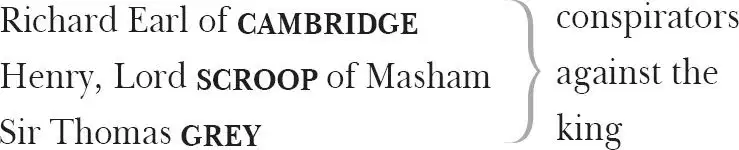
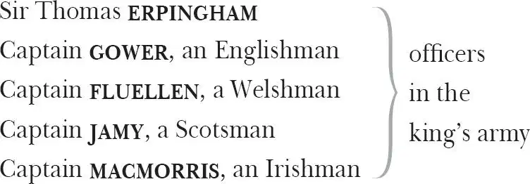
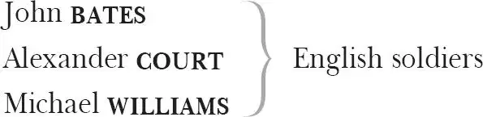

The Life of Henry the Fifth
CHORUS
The English side
KING HENRY V
Duke of BEDFORD , his younger brother
Humphrey, Duke of GLOUCESTER , another younger brother
Duke of EXETER , the king's uncle
Duke of YORK , the king's cousin
Earl of WESTMORLAND
Earl of WARWICK
Earl of SALISBURY
Archbishop of CANTERBURY
Bishop of ELY

Corporal NYM
Lieutenant BARDOLPH
Ancient PISTOL
HOSTESS QUICKLY , keeper of a tavern, married to Pistol
BOY , previously page to Falstaff


HERALD
The French side
FRENCH KING , Charles VI
QUEEN ISABEL , his wife
Lewis the DAUPHIN , their son and heir
KATHERINE , their daughter
ALICE , Katherine's lady-in-waiting
CONSTABLE of France
Duke of BURGUNDY
MONTJOY , the French Herald
GOVERNOR of Harfleur
Duke of BOURBON
Duke of ORLÉANS
Duke of BERRI
Lord RAMBURES
Lord GRANDPRÉ
French AMBASSADORS to England
FRENCH LORDS
Soldiers, Messengers, Attendants
Prologue
Enter Prologue
CHORUS O, for a muse 1 of fire, that would ascend
The brightest heaven of invention 2 ,
A kingdom for a stage, princes to act
And monarchs to behold the swelling 3 scene!
Then should the warlike 4 Harry, like himself 5 ,
Assume the port 6 of Mars 7 , and at his heels,
Leashed in like hounds, should famine, sword and fire
Crouch for employment. But pardon, gentles 8 all,
The flat unraisèd 9 spirits 10 that hath dared
On this unworthy scaffold 11 to bring forth
So great an object. Can this cockpit 12 hold
The vasty 13 fields of France? Or may we cram
Within this wooden O 14 , the very casques 15
That did affright 16 the air at Agincourt 17 ?
O, pardon! Since a crooked 18 figure 19 may
Attest in little place a million 20 ,
And let us, ciphers 21 to this great accompt 22 ,
On your imaginary 23 forces work.
Suppose 24 within the girdle 25 of these walls
Are now confined two mighty monarchies 26 ,
Whose high uprearèd 27 and abutting 28 fronts 29
The perilous narrow ocean 30 parts asunder.
Piece out 31 our imperfections with your thoughts:
Into a thousand parts divide one man,
And make imaginary puissance 32 .
Think when we talk of horses, that you see them
Printing their proud hoofs i'th'receiving earth,
For 'tis your thoughts that now must deck 33 our kings,
Carry them here and there, jumping o'er times,
Turning th'accomplishment of many years
Into an hourglass: for the which supply 34 ,
Admit me chorus to this history;
Who prologue-like your humble patience pray,
Gently to hear, kindly to judge, our play.
Exit
Act 1
Scene 1 35 / running scene 1
Enter the two Bishops of Canterbury and Ely
CANTERBURY My lord, I'll tell you: that self 36 bill is urged 37 ,
Which in th'eleventh year of the last king's 38 reign
Was like 39 , and had indeed against us passed,
But that the scambling 40 and unquiet time
Did push it out of further question 41 .
ELY But how, my lord, shall we resist it now?
CANTERBURY It must be thought on: if it pass against us,
We lose the better half of our possession.
For all the temporal 42 lands which men devout
By testament 43 have given to the Church
Would they strip from us; being valued thus:
As much as would maintain 44 , to the king's honour,
Full fifteen earls and fifteen hundred knights,
Six thousand and two hundred good esquires 45 ,
And, to relief of lazars 46 and weak age
Of indigent 47 faint souls past corporal toil 48 ,
A hundred almshouses right well supplied,
And to the coffers 49 of the king beside 50 ,
A thousand pounds by th'year. Thus runs the bill 51 .
ELY This would drink deep 52 .
CANTERBURY 'Twould drink the cup and all.
ELY But what prevention?
CANTERBURY The king is full of grace 53 and fair regard 54 .
ELY And a true lover of the holy church.
CANTERBURY The courses 55 of his youth promised it not.
The breath no sooner left his father's body,
But that his wildness, mortified 56 in him,
Seemed to die too. Yea, at that very moment
Consideration 57 like an angel came
And whipped th'offending Adam 58 out of him,
Leaving his body as a paradise 59 ,
T'envelop and contain celestial spirits 60 .
Never was such a sudden scholar made,
Never came reformation in a flood,
With such a heady currance 61 , scouring 62 faults,
Nor never Hydra-headed 63 wilfulness
So soon did lose his seat 64 , and all at once,
As in this king.
ELY We are blessèd in the change.
CANTERBURY Hear him but reason in divinity,
And, all-admiring, with an inward wish
You would desire the king were made a prelate.
Hear him debate of commonwealth affairs,
You would say it hath been all in all 65 his study.
List 66 his discourse of war, and you shall hear
A fearful battle rendered you in music 67 .
Turn him to any cause of policy 68 ,
The Gordian knot 69 of it he will unloose,
Familiar as his garter 70 , that, when he speaks,
The air, a chartered 71 libertine 72 , is still,
And the mute wonder lurketh in men's ears
To steal his sweet and honeyed sentences,
So that the art and practic 73 part of life
Must be the mistress to this theoric 74 :
Which is a wonder how his grace should glean 75 it,
Since his addiction was to courses vain 76 ,
His companies 77 unlettered 78 , rude 79 and shallow,
His hours filled up with riots 80 , banquets, sports,
And never noted 81 in him any study,
Any retirement, any sequestration 82
From open 83 haunts and popularity 84 .
ELY The strawberry grows underneath the nettle
And wholesome berries thrive and ripen best
Neighboured by fruit of baser quality.
And so the prince obscured 85 his contemplation 86
Under the veil of wildness, which, no doubt,
Grew like the summer grass, fastest by night,
Unseen, yet crescive in his faculty 87 .
CANTERBURY It must be so, for miracles are ceased.
And therefore we must needs 88 admit the means 89
How things are perfected.
ELY But, my good lord,
How now for mitigation 90 of this bill
Urged by the commons 91 ? Doth his majesty
Incline to 92 it, or no?
CANTERBURY He seems indifferent,
Or rather swaying more upon 93 our part
Than cherishing th'exhibitors against us 94 ,
For I have made an offer to his majesty,
Upon 95 our spiritual convocation 96
And in regard of causes 97 now in hand,
Which I have opened 98 to his grace at large 99 ,
As touching 100 France, to give a greater sum
Than ever at one time the clergy yet
Did to his predecessors part withal 101 102 .
ELY How did this offer seem received, my lord?
CANTERBURY With good acceptance of his majesty,
Save that there was not time enough to hear,
As I perceived his grace would fain 103 have done,
The severals 104 and unhidden passages 105
Of his true titles to some certain dukedoms
And generally to the crown and seat of France,
Derived from Edward 106 , his great-grandfather.
ELY What was th'impediment that broke this off?
CANTERBURY The French ambassador upon that instant
Craved audience; and the hour I think is come
To give him hearing. Is it four o'clock?
ELY It is.
CANTERBURY Then go we in to know his embassy 107 ,
Which I could with a ready guess declare,
Before the Frenchman speak a word of it.
ELY I'll wait upon you and I long to hear it.
Exeunt
Scene 2 / running scene 1 continues
Enter the King [Henry V ], Humphrey [Duke of Gloucester ], Bedford, Clarence, Warwick, Westmorland, Exeter [and Attendants ]
KING HENRY V Where is my gracious 108 lord of Canterbury?
EXETER Not here in presence 109 .
KING HENRY V Send for him, good uncle.
WESTMORLAND Shall we call in th'ambassador, my liege?
KING HENRY V Not yet, my cousin 110 : we would be resolved 111 ,
Before we hear him, of some things of weight
That task 112 our thoughts, concerning us and France.
Enter [the ] two Bishops
CANTERBURY God and his angels guard your sacred throne
And make you long become 113 it!
KING HENRY V Sure, we thank you.
My learnèd lord, we pray you to proceed
And justly 114 and religiously unfold 115
Why the law Salic 116 that they have in France
Or 117 should, or should not, bar 118 us in our claim.
And God forbid, my dear and faithful lord,
That you should fashion, wrest, or bow 119 your reading 120 ,
Or nicely charge 121 your understanding soul
With opening titles miscreate 122 , whose right
Suits not in native colours 123 with the truth,
For God doth know how many now in health
Shall drop their blood 124 in approbation 125
Of what your reverence shall incite us to.
Therefore take heed how you impawn our person 126 ,
How you awake our sleeping sword of war;
We charge 127 you, in the name of God, take heed,
For never two such kingdoms did contend
Without much fall of blood, whose guiltless drops
Are every one a woe, a sore complaint 128
Gainst him whose wrongs 129 gives edge unto the swords
That make such waste in brief mortality.
Under this conjuration 130 , speak, my lord,
For we will hear, note 131 and believe in heart
That what you speak is in your conscience washed
As pure as sin with baptism.
CANTERBURY Then hear me, gracious sovereign, and you peers,
That owe yourselves, your lives and services
To this imperial throne. There is no bar
To make against your highness' claim to France
But this, which they produce from Pharamond 132 ,
'In terram Salicam mulieres ne succedant ',
'No woman shall succeed in Salic land.'
Which Salic land the French unjustly gloss 133
To be the realm of France, and Pharamond
The founder of this law and female bar.
Yet their own authors faithfully affirm
That the land Salic is in Germany,
Between the floods 134 of Sala and of Elbe 135 ,
Where Charles the Great 136 , having subdued the Saxons,
There left behind and settled certain French,
Who, holding in disdain the German women
For some dishonest manners 137 of their life,
Established then this law; to wit 138 , no female
Should be inheritrix 139 in Salic land ——
Which Salic, as I said, 'twixt 140 Elbe and Sala,
Is at this day in Germany called Meisen.
Then doth it well appear the Salic law
Was not devisèd for the realm of France,
Nor did the French possess the Salic land
Until four hundred one-and-twenty years
After defunction 141 of King Pharamond ——
Idly 142 supposed the founder of this law ——
Who died within the year of our redemption 143
Four hundred twenty-six, and Charles the Great
Subdued the Saxons, and did seat 144 the French
Beyond the river Sala, in the year
Eight hundred five. Besides 145 , their writers say,
King Pepin, which deposèd Childeric,
Did, as heir general 146 , being descended
Of Blithild, which was daughter to King Clothair,
Make claim and title to the crown of France.
Hugh Capet also, who usurped the crown
Of Charles the Duke of Lorraine, sole heir male
Of the true line and stock of Charles the Great 147 ,
To find 148 his title with some shows of truth,
Though, in pure truth, it was corrupt and naught,
Conveyed himself 149 as th'heir to th'Lady Lingare,
Daughter to Charlemagne 150 , who was the son
To Lewis the emperor, and Lewis the son
Of Charles the Great. Also King Lewis the Tenth 151 ,
Who was sole heir to the usurper Capet,
Could not keep quiet 152 in his conscience,
Wearing the crown of France, till satisfied
That fair Queen Isabel, his grandmother,
Was lineal 153 of the Lady Ermengare,
Daughter to Charles the foresaid Duke of Lorraine:
By the which marriage the line of Charles the Great
Was reunited to the crown of France.
So that, as clear as is the summer's sun,
King Pepin's title and Hugh Capet's claim,
King Lewis his satisfaction 154 , all appear
To hold in 155 right and title of the female:
So do the kings of France unto this day,
Howbeit 156 they would 157 hold up this Salic law
To bar your highness claiming from the female,
And rather choose to hide them in a net 158
Than amply 159 to imbar 160 their crooked 161 titles
Usurped from you and your progenitors 162 .
KING HENRY V May I with right and conscience make this claim?
CANTERBURY The sin upon my head 163 , dread 164 sovereign!
For in the book of Numbers is it writ,
When the man dies, let the inheritance
Descend unto the daughter 165 . Gracious lord,
Stand for 166 your own, unwind your bloody flag,
Look back into your mighty ancestors:
Go, my dread lord, to your great-grandsire 167 's tomb,
From whom you claim 168 ; invoke his warlike spirit,
And your great-uncle's, Edward the Black Prince,
Who on the French ground played a tragedy,
Making defeat on the full power of France 169 ,
Whiles his most mighty father on a hill
Stood smiling to behold his lion's whelp 170
Forage 171 in blood of French nobility.
O, noble English, that could entertain 172
With half their forces the full pride of France
And let another half stand laughing by,
All out of work and cold for 173 action!
ELY Awake remembrance of these valiant dead 174
And with your puissant 175 arm renew their feats;
You are their heir, you sit upon their throne:
The blood and courage that renownèd 176 them
Runs in your veins, and my thrice-puissant liege
Is in the very May-morn of his youth,
Ripe for exploits and mighty enterprises.
EXETER Your brother kings and monarchs of the earth
Do all expect that you should rouse yourself,
As did the former lions of your blood 177 .
WESTMORLAND They know your grace hath cause and means and might;
So hath your highness. Never King of England 178
Had nobles richer and more loyal subjects,
Whose hearts have left their bodies here in England
And lie pavilioned 179 in the fields of France.
CANTERBURY O, let their bodies follow, my dear liege,
With bloods and sword and fire to win your right 180 .
In aid whereof we of the spiritualty 181
Will raise your highness such a mighty sum
As never did the clergy at one time
Bring in to any of your ancestors.
KING HENRY V We must not only arm t'invade the French,
But lay down our proportions 182 to defend
Against the Scot, who will make road 183 upon us
With all advantages 184 .
CANTERBURY They of those marches 185 , gracious sovereign,
Shall be a wall sufficient to defend
Our inland from the pilfering borderers 186 .
KING HENRY V We do not mean the coursing snatchers 187 only,
But fear the main intendment 188 of the Scot,
Who hath been still a giddy 189 neighbour to us.
For you shall read that my great-grandfather
Never went with his forces into France
But that the Scot on his unfurnished 190 kingdom
Came pouring like the tide into a breach 191 ,
With ample and brim 192 fullness of his force,
Galling 193 the gleanèd 194 land with hot 195 assays 196 ,
Girding 197 with grievous siege castles and towns,
That England, being empty of defence,
Hath shook and trembled at th'ill neighbourhood 198 .
CANTERBURY She 199 hath been then more feared than harmed, my liege,
For hear her but exampled by herself 200 :
When all her chivalry 201 hath been in France
And she a mourning widow of her nobles,
She hath herself not only well defended
But taken and impounded as a stray 202
The king of Scots, whom she did send to France 203 ,
To fill King Edward's fame 204 with prisoner kings
And make their 205 chronicle 206 as rich with praise
As is the ooze 207 and bottom of the sea
With sunken wreck and sumless treasuries.
ELY 208 But there's a saying very old and true,
'If that you will France win,
Then with Scotland first begin.'
For once the eagle England being in prey 209 ,
To her unguarded nest the weasel Scot
Comes sneaking and so sucks her princely eggs,
Playing the mouse in absence of the cat,
To 'tame 210 and havoc 211 more than she can eat.
EXETER It follows then the cat must stay at home,
Yet that is but a crushed 212 necessity,
Since we have locks to safeguard necessaries
And pretty 213 traps to catch the petty thieves.
While that the armèd hand doth fight abroad,
Th'advisèd 214 head defends itself at home,
For government, though high and low and lower 215 ,
Put into parts 216 , doth keep in one consent 217 ,
Congreeing 218 in a full and natural close 219 ,
Like music.
CANTERBURY Therefore doth heaven divide
The state of man in divers 220 functions,
Setting endeavour in continual motion,
To which is fixèd, as an aim 221 or butt 222 ,
Obedience, for so work the honeybees,
Creatures that by a rule in nature teach
The act of order to a peopled kingdom.
They have a king 223 and officers of sorts,
Where some, like magistrates, correct 224 at home,
Others, like merchants, venture trade abroad:
Others, like soldiers, armèd in their stings 225 ,
Make boot upon 226 the summer's velvet buds,
Which pillage 227 they with merry march bring home
To the tent-royal of their emperor,
Who, busied in his majesty 228 , surveys
The singing masons 229 building roofs of gold,
The civil 230 citizens kneading up the honey,
The poor mechanic 231 porters crowding in
Their heavy burdens at his narrow gate,
The sad-eyed justice 232 , with his surly 233 hum 234 ,
Delivering o'er to executors 235 pale
The lazy yawning drone 236 . I this infer,
That many things, having full reference
To one consent 237 , may work contrariously 238 .
As many arrows, loosèd several ways,
Come to one mark 239 , as many ways 240 meet in one town,
As many fresh streams meet in one salt sea,
As many lines close 241 in the dial's 242 centre,
So may a thousand actions, once afoot
End in one purpose, and be all well borne 243
Without defeat. Therefore to France, my liege.
Divide your happy 244 England into four,
Whereof take you one quarter into France,
And you withal 245 shall make all Gallia 246 shake.
If we with thrice such powers left at home
Cannot defend our own doors from the dog,
Let us be worried 247 and our nation lose
The name of hardiness and policy 248 .
KING HENRY V Call in the messengers sent from the dauphin 249 .
[Exeunt some ]
Now are we well resolved 250 , and, by God's help
And yours, the noble sinews of our power,
France being ours, we'll bend it to our awe 251 ,
Or 252 break it all to pieces. Or there we'll sit,
Ruling in large 253 and ample empery 254
O'er France and all her almost kingly dukedoms,
Or lay these bones in an unworthy urn,
Tombless, with no remembrance over them:
Either our history shall with full mouth 255
Speak freely of our acts, or else our grave,
Like Turkish mute 256 , shall have a tongueless mouth,
Not worshipped with a waxen 257 epitaph.
Enter Ambassadors of France
Now are we well prepared to know the pleasure 258
Of our fair cousin dauphin, for we hear
Your greeting is from him, not from the king.
FIRST AMBASSADOR May't please your majesty to give us leave
Freely to render 259 what we have in charge 260 ,
Or shall we sparingly 261 show you far off 262
The dauphin's meaning and our embassy?
KING HENRY V We are no tyrant, but a Christian king,
Unto whose grace our passion is as subject 263
As are our wretches fettered 264 in our prisons:
Therefore with frank and with uncurbèd plainness
Tell us the dauphin's mind.
FIRST AMBASSADOR Thus, then, in few 265 :
Your highness, lately sending into 266 France,
Did claim some certain dukedoms, in the right
Of your great predecessor, King Edward the Third.
In answer of which claim, the prince our master
Says that you savour 267 too much of your youth,
And bids you be advised 268 there's naught in France
That can be with a nimble galliard 269 won.
You cannot revel into dukedoms there:
He therefore sends you, meeter 270 for your spirit,
This tun 271 of treasure; and in lieu of this,
Presents a box
Desires you let the dukedoms that you claim
Hear no more of you. This the dauphin speaks.
KING HENRY V What treasure, uncle?
EXETER Tennis balls, my liege.
Looks in the box
KING HENRY V We are glad the dauphin is so pleasant 272 with us.
His present and your pains we thank you for:
When we have matched our rackets 273 to these balls,
We will in France, by God's grace, play a set
Shall strike his father's crown 274 into the hazard 275 .
Tell him he hath made a match with such a wrangler 276
That all the courts 277 of France will be disturbed
With chaces 278 . And we understand him well,
How he comes o'er us 279 with our wilder days,
Not measuring 280 what use we made of them.
We never valued this poor seat 281 of England,
And therefore, living hence 282 , did give ourself
To barbarous licence 283 , as 'tis ever common
That men are merriest when they are from home.
But tell the dauphin I will keep my state 284 ,
Be like a king and show my sail of greatness 285
When I do rouse me 286 in my throne of France.
For that 287 I have laid by my majesty
And plodded like a man for working days 288 ,
But I will rise there with so full a glory
That I will dazzle all the eyes of France,
Yea, strike the dauphin blind to look on us.
And tell the pleasant prince this mock 289 of his
Hath turned his balls 290 to gun-stones 291 , and his soul
Shall stand sore chargèd 292 for the wasteful 293 vengeance
That shall fly with them, for many a thousand widows
Shall this his mock mock out of their dear husbands;
Mock mothers from their sons, mock castles down,
And some are yet ungotten 294 and unborn
That shall have cause to curse the dauphin's scorn.
But this lies all within the will of God,
To whom I do appeal, and in whose name
Tell you the dauphin I am coming on
To venge me 295 as I may and to put forth
My rightful hand in a well-hallowed 296 cause.
So get you hence in peace, and tell the dauphin
His jest will savour but of shallow wit,
When thousands weep more than did laugh at it.
Convey them with safe conduct. Fare you well.
Exeunt Ambassadors
EXETER This was a merry message.
KING HENRY V We hope to make the sender blush at it:
Therefore, my lords, omit no happy hour 297
That may give furth'rance 298 to our expedition,
For we have now no thought in us but France,
Save those to 299 God, that run before our business.
Therefore let our proportions 300 for these wars
Be soon collected and all things thought upon
That may with reasonable swiftness add
More feathers to our wings, for, God before 301 ,
We'll chide 302 this dauphin at his father's door.
Therefore let every man now task 303 his thought,
That this fair 304 action may on foot be brought 305 .
Flourish 306 . Exeunt
Act 2
Enter Chorus
CHORUS Now all the youth of England are on fire 307 ,
And silken dalliance 308 in the wardrobe lies:
Now thrive the armourers, and honour's thought
Reigns solely in the breast of every man.
They sell the pasture now to buy the horse,
Following the mirror 309 of all Christian kings,
With wingèd heels, as English Mercuries 310 .
For now sits expectation in the air,
And hides a sword from hilts 311 unto the point
With crowns imperial, crowns and coronets 312 ,
Promised to Harry and his followers.
The French, advised by good intelligence 313
Of this most dreadful preparation 314 ,
Shake in their fear and with pale 315 policy 316
Seek to divert the English purposes.
O England! Model to 317 thy inward greatness,
Like little body with a mighty heart,
What 318 mightst thou do, that honour would 319 thee do,
Were all thy children 320 kind 321 and natural?
But see, thy fault France hath in thee found out,
A nest of hollow 322 bosoms 323 , which he fills
With treacherous crowns 324 , and three corrupted men:
One, Richard Earl of Cambridge, and the second,
Henry Lord Scroop of Masham, and the third,
Sir Thomas Grey, knight, of Northumberland,
Have, for the gilt 325 of France —— O guilt indeed! ——
Confirmed conspiracy with fearful 326 France,
And by their hands this grace of kings 327 must die,
If hell and treason hold their promises,
Ere 328 he take ship for France, and in Southampton 329 .
Linger your patience on, and we'll digest 330
Th'abuse of distance 331 ; force 332 a play.
The sum is paid, the traitors are agreed,
The king is set from London, and the scene
Is now transported, gentles, to Southampton.
There is the playhouse now, there must you sit,
And thence to France shall we convey you safe,
And bring you back, charming 333 the narrow seas
To give you gentle pass 334 , for if we may,
We'll not offend one stomach 335 with our play.
But, till the king come forth, and not till then 336 ,
Unto Southampton do we shift our scene.
Exit
Scene 1 337 / running scene 2
Enter Corporal Nym 338 and Lieutenant Bardolph
BARDOLPH Well met, Corporal Nym.
NYM Good morrow 339 , Lieutenant Bardolph.
BARDOLPH What, are Ancient 340 Pistol 341 and you friends yet?
NYM For my part 342 , I care not: I say little, but when time shall serve 343 , there shall be smiles —— but that shall be as it may. I dare not fight, but I will wink 344 and hold out mine iron 345 : it is a simple one, but what though 346 ? It will toast cheese, and it will endure cold as another man's sword will, and there's an end 347 .
BARDOLPH I will bestow 348 a breakfast to make you friends, and we'll be all three sworn brothers 349 to France. Let't be so, good Corporal Nym.
NYM Faith, I will live so long as I may, that's the certain 350 of it. And when I cannot live any longer, I will do as I may. That is my rest 351 , that is the rendezvous 352 of it.
BARDOLPH It is certain, corporal, that he is married to Nell Quickly, and certainly she did you wrong, for you were troth-plight 353 to her.
NYM I cannot tell 354 . Things must be as they may: men may sleep, and they may have their throats about them at that time, and some say knives have edges. It must be as it may: though patience be a tired mare, yet she will plod 355 . There must be conclusions. Well, I cannot tell.
Enter Pistol and [Hostess ] Quickly
BARDOLPH Here comes Ancient Pistol and his wife. Good corporal, be patient here.—— How now, mine host 356 Pistol?
PISTOL Base tike 357 , call'st thou me host? Now, by this hand,
I swear, I scorn the term, nor shall my Nell keep lodgers 358 .
HOSTESS QUICKLY No, by my troth 359 , not long, for we cannot lodge and board a dozen or fourteen gentlewomen that live honestly by the prick of their needles 360 , but it will be thought we keep a bawdy house 361 straight 362 . O, well-a-day 363 , lady 364 . If he be not drawn 365 now, we shall see wilful adultery and murder committed.
Nym and
Pistol draw
366
BARDOLPH Good lieutenant, good corporal, offer 367 nothing here.
NYM Pish! 368
PISTOL Pish for thee, Iceland dog 369 ! Thou prick-eared 370 cur 371 of Iceland!
HOSTESS QUICKLY Good Corporal Nym, show thy valour 372 and put up 373 your sword.
They sheathe their
swords
NYM Will you shog off 374 ? I would have you solus 375 .
PISTOL 'Solus', egregious 376 dog? O viper vile!
The 'solus' in thy most marvellous face,
The 'solus' in thy teeth and in thy throat
And in thy hateful lungs, yea, in thy maw 377 , perdy 378 ,
And, which is worse, within thy nasty mouth!
I do retort 379 the 'solus' in thy bowels 380 ,
For I can take 381 , and Pistol's cock is up 382 ,
And flashing fire 383 will follow.
NYM I am not Barbason 384 . You cannot conjure 385 me. I have an humour 386 to knock you indifferently 387 well. If you grow foul 388 with me, Pistol, I will scour 389 you with my rapier 390 , as I may, in fair terms 391 . If you would walk off, I would prick 392 your guts a little, in good terms, as I may, and that's the humour of it.
PISTOL O braggart 393 vile and damnèd furious wight 394 !
The grave doth gape, and doting death is near:
Therefore exhale 395 .
They draw again
BARDOLPH Hear me, hear me what I say: he that strikes the first stroke, I'll run him up to the hilts 396 , as I am a soldier.
Draws
They sheathe their swords
PISTOL An oath of mickle 397 might, and fury shall abate.——
Give me thy fist 398 , thy fore-foot 399 to me give.
To Nym
Thy spirits are most tall 400 .
NYM I will cut thy throat, one time or other, in fair terms: that is the humour of it.
PISTOL 'Couple a gorge!' 401
That is the word. I defy thee again.
O hound of Crete 402 , think'st thou my spouse to get?
No, to the spital 403 go,
And from the powd'ring tub 404 of infamy 405
Fetch forth the lazar 406 kite 407 of Cressid's 408 kind,
Doll Tearsheet 409 she by name, and her espouse 410 :
I have, and I will hold 411 , the quondam 412 Quickly
For the only she 413 ; and —— pauca 414 , there's enough.
Go to.
Enter the Boy
BOY Mine host Pistol, you must come to my master 415 , and you, hostess. He is very sick, and would to bed.—— Good Bardolph, put thy face between his sheets, and do the office of a warmin 416 g-pan 417 . Faith, he's very ill.
BARDOLPH Away, you rogue!
HOSTESS QUICKLY By my troth, he'll yield the crow a pudding 418 one of these days. The king has killed his heart 419 . Good husband, come home presently 420 .
Exeunt [Hostess and Boy ]
BARDOLPH Come, shall I make you two friends? We must to France together.
Why the devil should we keep knives to cut one another's throats?
PISTOL Let floods o'erswell, and fiends for food howl on!
NYM You'll pay me the eight shillings I won of you at betting?
PISTOL Base 421 is the slave that pays.
NYM That now I will have: that's the humour of it.
PISTOL As manhood shall compound 422 . Push home.
[They ] draw
BARDOLPH By this sword, he that makes the first thrust, I'll kill him. By this sword, I will.
PISTOL Sword is an oath 423 , and oaths must have their course.
Sheathes his sword
BARDOLPH Corporal Nym, an 424 thou wilt be friends, be friends: an thou wilt not, why, then, be enemies with me too. Prithee put up 425 .
PISTOL A noble 426 shalt thou have, and present pay,
And liquor likewise will I give to thee,
And friendship shall combine, and brotherhood.
I'll live by Nym 427 , and Nym shall live by me.
Is not this just 428 ? For I shall sutler 429 be
Unto the camp 430 , and profits will accrue.
Give me thy hand.
NYM I shall have my noble?
PISTOL In cash most justly 431 paid.
NYM Well, then, that's the humour of 't.
Enter Hostess [Quickly ]
HOSTESS QUICKLY As ever you come of 432 women, come in quickly to Sir John. Ah, poor heart! He is so shaked of a burning quotidian tertian 433 , that it is most lamentable to behold. Sweet men, come to him.
[Exit ]
NYM The king hath run bad humours 434 on the knight, that's the even of it 435 .
PISTOL Nym, thou hast spoke the right.
His heart is fracted 436 and corroborate 437 .
NYM The king is a good king, but it must be as it may, he passes 438 some humours 439 and careers 440 .
PISTOL Let us condole 441 the knight, for, lambkins we will live 442 .
[Exeunt ]
Scene 2 443 / running scene 3
Enter Exeter, Bedford and Westmorland
BEDFORD 'Fore God, his grace is bold 444 to trust these traitors.
EXETER They shall be apprehended 445 by and by.
WESTMORLAND How smooth 446 and even 447 they do bear 448 themselves,
As if allegiance in their bosoms sat,
Crownèd with faith and constant loyalty.
BEDFORD The king hath note 449 of all that they intend,
By interception 450 which they dream not of.
EXETER Nay, but the man that was his bedfellow 451 ,
Whom he hath dulled 452 and cloyed 453 with gracious favours,
That he should for a foreign purse 454 so sell
His sovereign's life to death and treachery.
Sound trumpets
Enter the King, Scroop, Cambridge, Grey [and Attendants ]
KING HENRY V Now sits the wind fair, and we will aboard.——
My lord of Cambridge, and my kind lord of Masham,
And you, my gentle 455 knight, give me your thoughts:
Think you not that the powers 456 we bear with us
Will cut their passage through the force of France,
Doing the execution 457 and the act
For which we have in head 458 assembled them?
SCROOP No doubt, my liege, if each man do his best.
KING HENRY V I doubt not that, since we are well persuaded
We carry not a heart with us from hence
That grows not in a fair consent 459 with ours,
Nor leave not one behind that doth not wish
Success and conquest to attend on 460 us.
CAMBRIDGE Never was monarch better feared 461 and loved
Than is your majesty: there's not, I think, a subject
That sits in heart-grief 462 and uneasiness
Under the sweet shade of your government.
GREY True: those that were your father's enemies
Have steeped their galls in honey 463 and do serve you
With hearts create 464 of duty and of zeal.
KING HENRY V We therefore have great cause of thankfulness,
And shall forget the office 465 of our hand,
Sooner than quittance 466 of desert and merit 467
According to the weight and worthiness 468 .
SCROOP So service shall with steelèd 469 sinews toil,
And labour shall refresh itself with hope,
To do your grace incessant services.
KING HENRY V We judge 470 no less.—— Uncle of Exeter,
Enlarge 471 the man committed 472 yesterday,
That railed 473 against our person: we consider
It was excess of wine that set him on,
And on his more advice 474 we pardon him.
SCROOP That's mercy, but too much security 475 .
Let him be punished, sovereign, lest example
Breed, by his sufferance 476 , more of such a kind.
KING HENRY V O, let us yet be merciful.
CAMBRIDGE So may your highness, and yet punish too.
GREY Sir,
You show great mercy, if you give him life,
After the taste of much correction 477 .
KING HENRY V Alas, your too much love and care of me
Are heavy orisons 478 gainst this poor wretch!
If little faults, proceeding on distemper 479
Shall not be winked at 480 , how shall we stretch our eye 481
When capital 482 crimes, chewed, swallowed and digested 483 ,
Appear before us? —— We'll yet enlarge that man,
Though Cambridge, Scroop and Grey, in their dear 484 care
And tender preservation of our person,
Would have him punished. —— And now to our French causes:
Who are the late commissioners 485 ?
CAMBRIDGE I one, my lord.
Your highness bade me ask for it today.
SCROOP So did you me, my liege.
GREY And I, my royal sovereign.
KING HENRY V Then, Richard Earl of Cambridge, there is yours.——
Gives each a paper
There yours, Lord Scroop of Masham.—— And, sir knight,
Grey of Northumberland, this same is yours.
Read them, and know I know your worthiness.——
My lord of Westmorland, and uncle Exeter,
We will aboard tonight.—— Why, how now, gentlemen?
What see you in those papers that you lose
So much complexion 486 ?—— Look ye, how they change:
Their cheeks are paper 487 .—— Why, what read you there
That hath so cowarded and chased your blood
Out of appearance 488 ?
CAMBRIDGE I do confess my fault,
And do submit me to your highness' mercy.
GREY and SCROOP To which we all appeal.
KING HENRY V The mercy that was quick 489 in us but late,
By your own counsel is suppressed and killed.
You must not dare, for shame, to talk of mercy,
For your own reasons 490 turn into your bosoms,
As dogs upon their masters, worrying 491 you.——
See you, my princes, and my noble peers,
These English monsters. My lord of Cambridge here,
You know how apt our love was to accord 492
To furnish 493 him with all appertinents
Belonging to his honour 494 ; and this man
Hath, for a few light 495 crowns, lightly 496 conspired
And sworn unto the practices 497 of France
To kill us here in Hampton. To the which
This knight 498 , no less for bounty 499 bound to us
Than Cambridge is, hath likewise sworn.—— But, O,
What shall I say to thee, Lord Scroop, thou cruel,
Ingrateful, savage and inhuman creature?
Thou that didst bear the key of all my counsels 500 ,
That knew'st the very bottom of my soul,
That almost mightst have coined me into gold 501 ,
Wouldst thou have practised on 502 me for thy use 503 ?
May it be possible that foreign hire
Could out of thee extract one spark of evil
That might annoy 504 my finger? 'Tis so strange,
That though the truth of it stands off as gross 505
As black and white, my eye will scarcely see it.
Treason and murder, ever kept together,
As two yoke-devils 506 sworn to either's purpose,
Working so grossly 507 in a natural 508 cause,
That admiration did not whoop 509 at them.
But thou gainst all proportion 510 , didst bring in
Wonder to wait on 511 treason and on murder,
And whatsoever cunning fiend it was
That wrought 512 upon thee so preposterously 513
Hath got the voice 514 in hell for excellence,
All other devils that suggest 515 by treasons 516
Do botch and bungle up 517 damnation
With patches 518 , colours 519 and with forms 520 being fetched
From glist'ring 521 semblances of piety.
But he that tempered 522 thee, bade thee stand up 523 ,
Gave thee no instance 524 why thou shouldst do treason,
Unless to dub 525 thee with the name of traitor.
If that same demon that hath gulled 526 thee thus
Should with his lion gait 527 walk the whole world,
He might return to vasty Tartar 528 back,
And tell the legions 529 'I can never win
A soul so easy 530 as that Englishman's.'
O, how hast thou with jealousy 531 infected
The sweetness of affiance 532 ! Show 533 men dutiful?
Why, so didst thou. Seem they grave and learnèd?
Why, so didst thou. Come they of noble family?
Why, so didst thou. Seem they religious?
Why, so didst thou. Or are they spare 534 in diet,
Free from gross passion 535 or of mirth or anger,
Constant in spirit 536 , not swerving with the blood 537 ,
Garnished and decked in modest complement 538 ,
Not working with the eye without the ear 539 , 540
And but in purgèd judgement trusting neither?
Such and so finely bolted 541 didst thou seem:
And thus thy fall hath left a kind of blot,
To mark the full-fraught 542 man and best indued 543
With some suspicion. I will weep for thee,
For this revolt of thine, methinks, is like
Another fall of man 544 .—— Their faults are open 545 .
To Exeter
Arrest them to the answer of 546 the law,
And God acquit them of their practices 547 .
EXETER I arrest thee of high treason, by the name of 548 Richard Earl of Cambridge.—— I arrest thee of high treason, by the name of Henry Lord Scroop of Masham.—— I arrest thee of high treason, by the name of Thomas Grey, knight, of Northumberland.
SCROOP Our purposes God justly hath discovered 549 ,
And I repent my fault more than my death,
Which I beseech your highness to forgive,
Although my body pay the price of it.
CAMBRIDGE For me, the gold of France did not seduce,
Although I did admit it as a motive
The sooner to effect what I intended 550 .
But God be thankèd for prevention,
Which I in sufferance 551 heartily will rejoice,
Beseeching God and you to pardon me.
GREY Never did faithful subject more rejoice
At the discovery of most dangerous treason
Than I do at this hour joy o'er myself,
Prevented from a damnèd enterprise.
My fault, but not my body, pardon, sovereign.
KING HENRY V God quit 552 you in his mercy! Hear your sentence:
You have conspired against our royal person,
Joined with an enemy proclaimed 553 and from his coffers
Received the golden earnest 554 of our death,
Wherein you would have sold your king to slaughter,
His princes and his peers to servitude,
His subjects to oppression and contempt
And his whole kingdom into desolation 555 .
Touching our person 556 , seek we no revenge,
But we our kingdom's safety must so tender 557 ,
Whose ruin you have sought, that to her laws
We do deliver you. Get you therefore hence,
Poor miserable wretches, to your death:
The taste whereof, God of his mercy give
You patience to endure, and true repentance
Of all your dear 558 offences!—— Bear them hence.——
Exeunt [Cambridge, Scroop and Grey, guarded ]
Now, lords, for France: the enterprise whereof
Shall be to you, as us, like glorious 559 .
We doubt not of a fair 560 and lucky 561 war,
Since God so graciously hath brought to light
This dangerous treason lurking in our way
To hinder our beginnings. We doubt not now
But every rub 562 is smoothèd on our way.
Then forth, dear countrymen. Let us deliver
Our puissance 563 into the hand of God,
Putting it straight in expedition 564 .
Cheerly 565 to sea, the signs of war advance 566 :
No King of England, if not King of France.
Flourish [Exeunt ]
Scene 3 567 / running scene 4
Enter Pistol, Nym, Bardolph, Boy and Hostess [Quickly ]
HOSTESS QUICKLY Prithee, honey-sweet husband, let me bring 568 thee to Staines 569 .
PISTOL No, for my manly heart doth yearn 570 .
Bardolph, be blithe 571 : Nym, rouse thy vaunting veins 572 : 573
Boy, bristle 574 thy courage up, for Falstaff he is dead,
And we must earn 575 therefore.
BARDOLPH Would I were with him, wheresome'er he is, either in heaven or in hell.
HOSTESS QUICKLY Nay, sure, he's not in hell: he's in Arthur's bosom 576 , if ever man went to Arthur's bosom. A 577 made a finer end 578 and went away an 579 it had been any christom 580 child. A parted e'en 581 just between twelve and one, e'en at the turning o'th'tide. For after I saw him fumble with the sheets and play with flowers 582 and smile upon his fingers' end 583 , I knew there was but one way, for his nose was as sharp as a pen 584 on a table of green fields 585 . 'How now, Sir John?' quoth I. 'What, man? Be o'good cheer.' So a cried out, 'God, God, God!' three or four times. Now I, to comfort him, bid him a should not think of God; I hoped there was no need to trouble himself with any such thoughts yet. So a bade me lay more clothes 586 on his feet. I put my hand into the bed and felt them, and they were as cold as any stone 587 . Then I felt to his knees, and so up-peered and upward, and all was as cold as any stone.
NYM They say he cried out of 588 sack 589 .
HOSTESS QUICKLY Ay, that a did.
BARDOLPH And of women.
HOSTESS QUICKLY Nay, that a did not.
BOY Yes, that a did, and said they were devils incarnate 590 .
HOSTESS QUICKLY A could never abide carnation 591 , 'twas a colour he never liked.
BOY A said once the devil would have him about 592 women.
HOSTESS QUICKLY A did in some sort, indeed, handle 593 women, but then he was rheumatic 594 , and talked of the whore of Babylon 595 .
BOY Do you not remember, a saw a flea stick upon 596 Bardolph's nose, and a said it was a black soul burning 597 in hell?
BARDOLPH Well, the fuel 598 is gone that maintained that fire: that's all the riches I got in his service.
NYM Shall we shog 599 ? The king will be gone from Southampton.
PISTOL Come, let's away.—— My love, give me thy lips.
Kisses her
Look to my chattels and my movables 600 .
Let senses rule 601 . The world is 'pitch and pay' 602 ,
Trust none,
For oaths 603 are straws 604 , men's faiths are wafer-cakes 605 ,
And hold-fast is the only dog 606 . My duck,
Therefore, Caveto 607 be thy counsellor.
Go, clear thy crystals 608 . Yoke-fellows 609 in arms,
Let us to France, like horse-leeches 610 , my boys,
To suck, to suck, the very blood to suck!
BOY And that's but unwholesome food they say.
PISTOL Touch her soft mouth, and march.
BARDOLPH Farewell, hostess.
Kisses her
NYM I cannot kiss, that is the humour of it. But, adieu.
PISTOL Let housewifery 611 appear. Keep close 612 , I thee command.
HOSTESS QUICKLY Farewell. Adieu.
Exeunt [separately ]
Scene 4 613 / running scene 5
Flourish. Enter the French King 614 , the Dauphin, the Dukes of Berri and Brittany, [the Constable 615 and others ]
FRENCH KING Thus comes the English with full power upon us,
And more than carefully it us concerns
To answer royally in our defences 616 .
Therefore the Dukes of Berri and of Brittany,
Of Brabant and of Orléans, shall make forth,
And you, Prince Dauphin, with all swift dispatch 617
To line 618 and new repair our towns of war
With men of courage and with means defendant 619 ,
For England his approaches 620 makes as fierce
As waters to the sucking of a gulf 621 .
It fits us 622 then to be as provident 623
As fear may teach us, out of late examples 624
Left by the fatal and neglected 625 English
Upon our fields.
DAUPHIN My most redoubted 626 father,
It is most meet 627 we arm us gainst the foe,
For peace itself should not so dull a kingdom,
Though 628 war nor no known quarrel were in question,
But that defences, musters 629 , preparations,
Should be maintained, assembled and collected,
As were a war in expectation.
Therefore, I say 'tis meet we all go forth
To view the sick and feeble parts of France,
And let us do it with no show of fear ——
No, with no more than if we heard that England
Were busied with a Whitsun morris-dance 630 ,
For, my good liege, she is so idly 631 kinged 632 ,
Her sceptre 633 so fantastically 634 borne
By a vain, giddy, shallow, humorous 635 youth,
That fear attends 636 her not.
CONSTABLE O, peace, Prince Dauphin!
You are too much mistaken in this king.
Question your grace the late 637 ambassadors,
With what great state 638 he heard their embassy,
How well supplied with noble counsellors,
How modest 639 in exception 640 , and withal 641
How terrible 642 in constant resolution,
And you shall find his vanities forespent 643
Were but the outside of the Roman Brutus,
Covering discretion with a coat of folly 644 ;
As gardeners do with ordure 645 hide those roots
That shall first spring and be most delicate.
DAUPHIN Well, 'tis not so, my lord high constable.
But though 646 we think it so, it is no matter.
In cases of defence 'tis best to weigh 647
The enemy more mighty than he seems,
So the proportions of defence are filled 648 ,
Which of a weak and niggardly projection 649
Doth, like a miser, spoil his coat with scanting 650
A little cloth.
FRENCH KING Think we 651 King Harry strong,
And, princes, look you 652 strongly arm to meet him.
The kindred of him hath been fleshed 653 upon us,
And he is bred out of that bloody strain 654
That haunted 655 us in our familiar 656 paths.
Witness our too much memorable shame
When Crécy battle fatally was struck 657 ,
And all our princes captived by the hand
Of that black name, Edward, Black Prince of Wales,
Whiles that his mountain 658 sire 659 , on mountain standing,
Up in the air, crowned with the golden sun,
Saw his heroical seed 660 , and smiled to see him
Mangle 661 the work of nature and deface
The patterns 662 that by God and by French fathers
Had twenty years been made. This 663 is a stem
Of that victorious stock, and let us fear
The native 664 mightiness and fate 665 of him.
Enter a Messenger
MESSENGER Ambassadors from Harry King of England
Do crave admittance to your majesty.
FRENCH KING We'll give them present 666 audience. Go, and bring them.
[Exeunt Messenger and others ]
You see this chase is hotly followed 667 , friends.
DAUPHIN Turn head 668 , and stop pursuit, for coward dogs
Most spend their mouths 669 when what they seem to threaten
Runs far before them. Good my sovereign,
Take up the English short 670 , and let them know
Of what a monarchy you are the head.
Self-love, my liege, is not so vile a sin
As self-neglecting 671 .
Enter Exeter [and others ]
FRENCH KING From our brother of England?
EXETER From him, and thus he greets your majesty.
He wills 672 you, in the name of God Almighty,
That you divest 673 yourself and lay apart 674
The borrowed glories 675 that by gift of heaven,
By law of nature and of nations, longs 676
To him and to his heirs, namely, the crown
And all wide-stretchèd 677 honours that pertain
By custom and the ordinance of times 678
Unto the crown of France. That you may know
'Tis no sinister 679 nor no awkward 680 claim,
Picked from the worm-holes 681 of long-vanished days,
Nor from the dust of old oblivion raked,
He sends you this most memorable line 682 ,
Gives a paper
In every branch truly demonstrative;
Willing you overlook this pedigree.
And when you find him evenly derived 683
From his most famed of famous ancestors,
Edward the Third, he bids you then resign
Your crown and kingdom, indirectly 684 held
From him the native 685 and true challenger.
FRENCH KING Or else what follows?
EXETER Bloody constraint 686 . For if you hide the crown
Even in your hearts, there will he rake for it:
Therefore in fierce tempest is he coming,
In thunder and in earthquake, like a Jove 687 ,
That, if requiring 688 fail, he will compel,
And bids you, in the bowels 689 of the Lord,
Deliver up the crown, and to take mercy
On the poor souls for whom this hungry war
Opens his vasty jaws, and on your head
Turning 690 the widows' tears, the orphans' cries
The dead men's blood, the pining maidens' groans,
For husbands, fathers and betrothèd lovers,
That shall be swallowed in this controversy.
This is his claim, his threatening and my message ——
Unless the dauphin be in presence here,
To whom expressly I bring greeting too.
FRENCH KING For us, we will consider of this further:
Tomorrow shall you bear our full intent
Back to our brother of England.
DAUPHIN For the dauphin,
I stand here for him. What to him from England?
EXETER Scorn and defiance, slight 691 regard, contempt,
And anything that may not misbecome 692
The mighty sender, doth he prize you at 693 .
Thus says my king: an if 694 your father's highness
Do not, in grant of all demands at large 695 ,
Sweeten the bitter mock you sent his majesty,
He'll call you to so hot an answer of it,
That caves and womby 696 vaultages 697 of France
Shall chide your trespass and return your mock
In second accent 698 of his ordinance 699 .
DAUPHIN Say, if my father render fair return 700 ,
It is against my will, for I desire
Nothing but odds 701 with England. To that end,
As matching to his youth and vanity,
I did present him with the Paris balls.
EXETER He'll make your Paris Louvre 702 shake for it,
Were it the mistress-court 703 of mighty Europe.
And be assured, you'll find a diff'rence,
As we his subjects have in wonder found,
Between the promise of his greener days 704
And these he masters 705 now. Now he weighs time
Even to the utmost grain 706 : that you shall read 707
In your own losses, if he stay in France.
FRENCH KING Tomorrow shall you know our mind at full.
Flourish
EXETER Dispatch us with all speed, lest that our king
Come here himself to question our delay;
For he is footed 708 in this land already.
FRENCH KING You shall be soon dispatched with fair conditions:
A night is but small breath 709 and little pause
To answer matters of this consequence.
Flourish. Exeunt
Act 3
Enter Chorus
CHORUS Thus with imagined wing 710 our swift scene flies
In motion of no less celerity 711
Than that of thought. Suppose that you have seen
The well-appointed 712 king at Dover 713 pier
Embark his royalty 714 , and his brave 715 fleet
With silken streamers 716 , the young Phoebus fanning 717 .
Play with 718 your fancies 719 , and in them behold
Upon the hempen tackle 720 ship-boys climbing;
Hear the shrill whistle 721 which doth order 722 give
To sounds confused. Behold the threaden 723 sails,
Borne with th'invisible and creeping wind,
Draw 724 the huge bottoms 725 through the furrowed sea,
Breasting the lofty surge 726 . O, do but think
You stand upon the rivage 727 and behold
A city on th'inconstant billows 728 dancing;
For so appears this fleet majestical,
Holding due course to Harfleur 729 . Follow, follow.
Grapple 730 your minds to sternage 731 of this navy,
And leave your England as dead midnight still,
Guarded with grandsires, babies and old women,
Either past or not arrived to pith 732 and puissance,
For who is he, whose chin is but enriched
With one appearing hair 733 , that will not follow
These culled 734 and choice-drawn 735 cavaliers 736 to France?
Work 737 , work your thoughts, and therein see a siege:
Behold the ordnance 738 on their carriages 739 ,
With fatal mouths gaping on girded 740 Harfleur.
Suppose 741 th'ambassador from the French comes back,
Tells Harry that the king doth offer him
Katherine his daughter, and with her, to dowry,
Some petty and unprofitable dukedoms.
The offer likes not 742 , and the nimble gunner
With linstock 743 now the devilish cannon touches,
Alarum 744 , and chambers 745 go off
And down goes all before them. Still be kind,
And eke out 746 our performance with your mind.
Exit
Scene 1 747 / running scene 6
Enter the King, Exeter, Bedford and Gloucester. Alarum. [Enter Soldiers with ]scaling-ladders 748 at Harfleur
KING HENRY V Once more unto the breach 749 , dear friends, once more,
Or close the wall up with our English dead.
In peace there's nothing so becomes a man
As modest stillness and humility,
But when the blast of war blows in our ears,
Then imitate the action of the tiger:
Stiffen the sinews, conjure up the blood 750 ,
Disguise fair nature with hard-favoured 751 rage,
Then lend 752 the eye a terrible 753 aspect 754 :
Let it pry through the portage 755 of the head
Like the brass cannon, let the brow o'erwhelm 756 it
As fearfully 757 as doth a gallèd 758 rock
O'erhang and jutty 759 his confounded 760 base,
Swilled 761 with the wild and wasteful 762 ocean.
Now set the teeth 763 and stretch the nostril wide,
Hold hard the breath and bend up 764 every spirit
To his full height. On, on, you noblest English,
Whose blood is fet 765 from fathers of war-proof 766 ,
Fathers that, like so many Alexanders 767 ,
Have in these parts from morn till even fought
And sheathed their swords for lack of argument 768 .
Dishonour not your mothers 769 : now attest
That those whom you called fathers did beget 770 you.
Be copy 771 now to men of grosser 772 blood,
And teach them how to war. And you, good yeoman 773 ,
Whose limbs were made in England, show us here
The mettle 774 of your pasture 775 : let us swear
That you are worth your breeding, which I doubt not,
For there is none of you so mean and base 776 ,
That hath not noble lustre in your eyes.
I see you stand like greyhounds in the slips 777 ,
Straining upon the start 778 . The game's afoot:
Follow your spirit, and upon this charge 779
Cry 'God for Harry 780 , England, and Saint George 781 !'
[Exeunt ]
Alarum, and chambers 782 go off
Scene 2 / running scene 6 continues
Enter Nym, Bardolph, Pistol and Boy
BARDOLPH On, on, on, on, on! To the breach, to the breach!
NYM Pray thee, corporal, stay: the knocks 783 are too hot, and for mine own part, I have not a case 784 of lives. The humour of it is too hot, that is the very plainsong 785 of it.
PISTOL The plainsong is most just, for humours 786 do abound.
Knocks go and come, God's vassals 787 drop and die,
And sword and shield,
Sings
In bloody field,
Doth win immortal fame 788 .
BOY Would I were in an ale-house in London: I would give all my fame for a pot of ale and safety.
PISTOL And I:
If wishes would prevail 789 with me,
Sings
My purpose should not fail with me 790 ,
But thither would I hie 791 .
BOY As duly,
Sings
But not as truly 792 ,
As bird doth sing on bough.
Enter Fluellen 793
FLUELLEN Up to the breach, you dogs! Avaunt 794 , you cullions 795 !
Drives them on
PISTOL Be merciful, great duke 796 , to men of mould 797 .
Abate thy rage, abate thy manly rage,
Abate thy rage, great duke!
Good bawcock 798 , bate thy rage: use lenity 799 , sweet chuck 800 !
NYM These be good humours! Your honour wins bad humours 801 .
Exeunt [all but Boy ]
BOY As young as I am, I have observed these three swashers 802 . I am boy 803 to them all three, but all they three, though they would serve me, could not be man 804 to me; for indeed three such antics 805 do not amount to a man. For Bardolph, he is white-livered 806 and red-faced; by the means whereof a faces 807 it out, but fights not. For Pistol, he hath a killing tongue and a quiet sword; by the means whereof a breaks words 808 , and keeps whole 809 weapons. For Nym, he hath heard that men of few words are the best men, and therefore he scorns to say his prayers, lest a should be thought a coward. But his few bad words are matched with as few good deeds; for a never broke any man's head but his own, and that was against a post when he was drunk. They will steal anything, and call it purchase 810 . Bardolph stole a lute- case, bore it twelve leagues 811 , and sold it for three halfpence. Nym and Bardolph are sworn brothers 812 in filching 813 , and in Calais 814 they stole a fire-shovel 815 . I knew by that piece of service 816 the men would carry coals 817 . They would have me as familiar with men's pockets 818 as their gloves or their handkerchiefs, which makes much against my manhood 819 , if I should take from another's pocket to put into mine; for it is plain pocketing up of wrongs 820 . I must leave them, and seek some better service: their villainy goes against my weak stomach 821 , and therefore I must cast it up 822 .
Exit
Enter Gower [and Fluellen ]
GOWER Captain Fluellen, you must come presently 823 to the mines 824 ; the Duke of Gloucester would speak with you.
FLUELLEN To the mines? Tell you the duke, it is not 825 so good to come to the mines, for look you, the mines is not according to the disciplines 826 of the war: the concavities 827 of it is not sufficient, for look you, th'athversary 828 , you may discuss 829 unto the duke, look you, is digt 830 himself, four yard under, the countermines 831 . By Cheshu 832 , I think a will plow up 833 all, if there is not better directions 834 .
GOWER The Duke of Gloucester, to whom the order 835 of the siege is given, is altogether directed by an Irishman, a very valiant gentleman, i'faith.
FLUELLEN It is Captain MacMorris, is it not?
GOWER I think it be.
FLUELLEN By Cheshu, he is an ass, as in 836 the world. I will verify as much in his beard 837 . He has no more directions in the true disciplines of the wars, look you, of the
Roman disciplines 838 , than is a puppy dog.
Enter MacMorris and Captain Jamy
GOWER Here a comes, and the Scots captain, Captain Jamy, with him.
FLUELLEN Captain Jamy is a marvellous falorous 839 gentleman, that is certain, and of great expedition 840 and knowledge in th'aunchient wars, upon my particular knowledge of his directions. By Cheshu, he will maintain his argument as well as any military man in the world, in the disciplines of the pristine wars of the Romans.
JAMY I say gud 841 day, Captain Fluellen.
FLUELLEN God-den 842 to your worship, good Captain James.
GOWER How now, Captain MacMorris? Have you quit the mines? Have the pioneers 843 given o'er 844 ?
MACMORRIS By Chrish, la 845 , tish 846 ill done: the work ish give over, the trompet sound the retreat. By my hand, I swear, and my father's soul, the work ish ill done, it ish give over 847 . I would have blowed up the town, so Chrish save me, la, in an hour. O, tish ill done, tish ill done. By my hand, tish ill done!
FLUELLEN Captain MacMorris, I beseech you now, will you voutsafe 848 me, look you, a few disputations 849 with you, as partly touching or concerning the disciplines of the war, the Roman wars, in the way of argument, look you, and friendly communication —— partly to satisfy my opinion, and partly for the satisfaction, look you, of my mind, as touching the direction of the military discipline, that is the point.
JAMY It sall 850 be vary gud, gud feith 851 , gud captains bath 852 , and I sall quit 853 you with gud leve 854 , as I may pick occasion 855 ; that sall I, marry 856 .
MACMORRIS It is no time to discourse, so Chrish save me. The day is hot and the weather and the wars and the king and the dukes: it is no time to discourse. The town is beseeched 857 , and the trumpet call us to the breach, and we talk, and, be 858 Chrish, do nothing. 'Tis shame for us all. So God sa' 859 me, 'tis shame to stand still, it is shame, by my hand. And there is throats to be cut, and works to be done, and there ish nothing done, so Chrish sa' me, la!
JAMY By the mess 860 , ere 861 these eyes of mine take themselves to slomber, I'll de gud service, or I'll lig 862 i'th'grund for it; ay, or go to death. And I'll pay't as valorously as I may, that sall I suerly 863 do, that is the breff 864 and the long 865 . Marry, I wad 866 full fain 867 heard 868 some question 869 'tween you tway 870 .
FLUELLEN Captain MacMorris, I think, look you, under your correction 871 , there is not many of your nation——
MACMORRIS Of my nation? What ish my nation? Ish a villain and a bastard and a knave and a rascal 872 . What ish my nation? Who talks of my nation?
FLUELLEN Look you, if you take the matter otherwise than is meant, Captain MacMorris, peradventure 873 I shall think you do not use 874 me with that affability as in discretion 875 you ought to use me, look you, being as good a man as yourself, both in the disciplines of war, and in the derivation of my birth, and in other particularities.
MACMORRIS I do not know you so good a man as myself. So Chrish save me, I will cut off your head.
GOWER Gentlemen both, you will 876 mistake each other.
JAMY Ah, that's a foul fault.
A parley 877
GOWER The town sounds a parley.
FLUELLEN Captain MacMorris, when there is more better opportunity to be required 878 , look you, I will be so bold as to tell you I know the disciplines of war, and there is an end.
Exeunt
Scene 3 879 / running scene 6 continues
Enter the King and all his train before the gates 880
KING HENRY V How yet resolves 881 the governor of the town?
This is the latest 882 parle 883 we will admit 884 :
Therefore to our best mercy give yourselves,
Or like to men proud of destruction 885
Defy us to our worst, for as I am a soldier,
A name that in my thoughts becomes 886 me best,
If I begin the batt'ry 887 once again,
I will not leave the half-achieved 888 Harfleur
Till in her ashes she lie burièd.
The gates of mercy shall be all shut up,
And the fleshed 889 soldier, rough and hard of heart,
In liberty of bloody hand shall range 890
With conscience wide as hell, mowing like grass
Your fresh fair virgins and your flow'ring 891 infants.
What is it then to me, if impious 892 war,
Arrayed in flames like to the prince of fiends 893 ,
Do with his smirched 894 complexion all fell 895 feats
Enlinked 896 to waste and desolation?
What is't to me, when you yourselves are cause,
If your pure maidens fall into the hand
Of hot 897 and forcing violation 898 ?
What rein 899 can hold 900 licentious wickedness
When down the hill he holds his fierce career 901 ?
We may as bootless 902 spend 903 our vain 904 command
Upon th'enragèd soldiers in their spoil 905
As send precepts 906 to the leviathan 907
To come ashore. Therefore, you men of Harfleur,
Take pity of 908 your town and of your people,
Whiles yet my soldiers are in my command,
Whiles yet the cool and temperate 909 wind of grace
O'erblows 910 the filthy and contagious 911 clouds
Of heady 912 murder, spoil 913 and villainy.
If not, why, in a moment look 914 to see
The blind and bloody soldier with foul hand
Defile the locks 915 of your shrill-shrieking daughters,
Your fathers taken by the silver beards,
And their most reverend heads dashed to the walls,
Your naked infants spitted 916 upon pikes 917 ,
Whiles the mad mothers with their howls confused 918
Do break the clouds, as did the wives of Jewry 919
At Herod's bloody-hunting slaughtermen 920 .
What say you? Will you yield, and this avoid?
Or, guilty in defence 921 , be thus destroyed?
Enter Governor [above, on the walls ]
GOVERNOR Our expectation 922 hath this day an end.
The dauphin, whom of succours 923 we entreated,
Returns 924 us that his powers 925 are yet not ready
To raise 926 so great a siege: therefore, great king,
We yield our town and lives to thy soft 927 mercy.
Enter our gates, dispose 928 of us and ours,
For we no longer are defensible.
KING HENRY V Open your gates.—— Come, uncle Exeter,
Go you and enter Harfleur; there remain,
And fortify it strongly gainst the French.
Use mercy to them all. For us, dear uncle,
The winter coming on and sickness growing
Upon our soldiers, we will retire to Calais.
Tonight in Harfleur will we be your guest;
Tomorrow for the march are we addressed 929 .
Flourish, and [the King and his train ] enter the town
Scene 4 930 / running scene 7
Enter Katherine and [Alice,] an old gentlewoman
KATHERINE Alice, tu as été en Angleterre, et tu bien parles le langage 931 .
ALICE Un peu, madame 932 .
KATHERINE Je te prie, m'enseignez: il faut que j'apprenne à parler. Comment appelez-vous la main en anglais 933 ?
ALICE La main ? Elle est appelée de 934 hand 935 .
KATHERINE De hand. Et les doigts ?
ALICE Les doigts ? 936 Ma foi, j'oublie les doigts, mais je me souviendrai. Les doigts ? Je pense qu'ils sont appelés de fingres 937 . Oui, de fingres.
KATHERINE La main, de hand, les doigts, de fingres. Je pense que je suis le bon écolier. J'ai gagné deux mots d'anglais vitement. Comment appelez-vous les ongles 938 ?
ALICE Les ongles ? Nous les appelons de nails 939 .
KATHERINE De nails. Écoutez, dites-moi, si je parle bien 940 : de hand, de fingres, et de nails.
ALICE C'est bien dit, madame. Il est fort bon anglais 941 .
KATHERINE Dites-moi l'anglais pour le bras 942 .
ALICE De arm, madame 943 .
KATHERINE Et le coude ? 944
ALICE D'elbow.
KATHERINE D'elbow. Je m'en fais la répétition de tous les mots que vous m'avez appris dès
à présent 945 .
ALICE Il est trop difficile, madame, comme je pense 946 .
KATHERINE Excusez-moi, Alice, écoutez 947 : de hand, de fingres, de nails, de arma, de bilbow 948 .
ALICE D'elbow, madame .
KATHERINE O Seigneur Dieu, je m'en oublie ! D'elbow. Comment appelez-vous le col ? 949
ALICE De neck, madame .
KATHERINE De nick 950 . Et le menton ?
ALICE De chin.
KATHERINE De sin 951 . Le col , de nick, le menton , de sin.
ALICE Oui. Sauf votre honneur, en vérité, vous prononcez les mots aussi droit que les natifs d'Angleterre 952 .
KATHERINE Je ne doute point d'apprendre, par la grâce de Dieu, et en peu de temps 953 .
ALICE N'avez vous pas déjà oublié ce que je vous ai enseigné 954 ?
KATHERINE Non, je réciterai à vous promptement 955 : de hand, de fingres, de mails 956 ——
ALICE De nails, madame .
KATHERINE De nails, de arm, de ilbow.
ALICE Sauf 957 votre honneur , d'elbow.
KATHERINE Ainsi dis-je, d'elbow, de nick, et de sin. Comment appelez-vous le pied et la robe 958 ?
ALICE Le foot, madame, et le coun.
KATHERINE Le foot 959 et le coun 960 ! O Seigneur Dieu ! Ce sont les mots de son mauvais, corruptible, gros, et impudique, et non pour les dames d'honneur d'user. Je ne voudrais prononcer ces mots devant les seigneurs de France pour tout le monde. Foh ! Le foot et le coun! Néanmoins, je réciterai une autre fois ma leçon ensemble 961 : de hand, de fingres, de nails, de arm, d'elbow, de nick, de sin, de foot, de coun.
ALICE Excellent, madame 962 !
KATHERINE C'est assez pour une fois. Allons-nous à dîner 963 .
Exeunt
Scene 5 / running scene 7 continues
Enter the King of France, the Dauphin, [the Duke of Brittany, ] the Constable of France and others
FRENCH KING 'Tis certain he hath passed the River Somme 964 .
CONSTABLE And if he be not fought withal 965 , my lord,
Let us not live in France, let us quit all
And give our vineyards to a barbarous people.
DAUPHIN O Dieu vivant ! 966 Shall a few sprays 967 of us,
The emptying 968 of our fathers' luxury 969 ,
Our scions 970 , put in wild and savage stock 971 ,
Spirt 972 up so suddenly into the clouds,
And overlook 973 their grafters 974 ?
BRITTANY Normans 975 , but bastard 976 Normans, Norman bastards!
Mort de ma vie ! 977 If they march along
Unfought withal, but I will sell my dukedom
To buy a slobb'ry 978 and a dirty farm
In that nook-shotten 979 isle of Albion 980 .
CONSTABLE Dieu de batailles ! 981 Where have they this mettle 982 ?
Is not their climate foggy, raw and dull,
On whom, as in despite 983 , the sun looks pale 984 ,
Killing their fruit with frowns? Can sodden 985 water,
A drench 986 for sur-reined 987 jades 988 , their barley broth 989 ,
Decoct 990 their cold blood to such valiant heat?
And shall our quick blood, spirited with wine,
Seem frosty? O, for honour of our land,
Let us not hang like roping 991 icicles
Upon our houses' thatch, whiles a more frosty people
Sweat drops of gallant youth in our rich fields!
Poor we may call them in their native lords 992 .
DAUPHIN By faith and honour,
Our madams 993 mock at us, and plainly say
Our mettle is bred out 994 and they will give
Their bodies to the lust of English youth
To new-store 995 France with bastard warriors.
BOURBON They bid us to the English dancing-schools,
And teach lavoltas high and swift corantos 996 ,
Saying our grace is only in our heels 997
And that we are most lofty 998 runaways.
FRENCH KING Where is Montjoy the herald 999 ? Speed him hence.
Let him greet England 1000 with our sharp defiance.
Up, princes, and with spirit of honour edged
More sharper than your swords, hie 1001 to the field:
Charles Delabret, High Constable of France,
You Dukes of Orléans, Bourbon, and of Berri,
Alençon, Brabant, Bar, and Burgundy;
Jaques Chatillion, Rambures, Vaudemont,
Beaumont, Grandpré, Roussi, and Fauconbridge,
Foix, Lestrale, Boucicault, and Charolais,
High dukes, great princes, barons, lords and knights,
For your great seats 1002 now quit 1003 you of great shames.
Bar 1004 Harry England, that sweeps through our land
With pennons 1005 painted in the blood of Harfleur.
Rush on his host 1006 , as doth the melted snow
Upon the valleys, whose low vassal seat
The Alps doth spit and void 1007 his rheum 1008 upon.
Go down upon him, you have power enough,
And in a captive chariot into Rouen 1009
Bring him our prisoner.
CONSTABLE This becomes the great 1010 .
Sorry am I his numbers are so few,
His soldiers sick and famished in their march,
For I am sure, when he shall see our army,
He'll drop his heart 1011 into the sink 1012 of fear
And for achievement 1013 offer us his ransom 1014 .
FRENCH KING Therefore, lord constable, haste on 1015 Montjoy,
And let him say to England that we send
To know what willing ransom he will give.——
Prince Dauphin, you shall stay with us in Rouen.
DAUPHIN Not so, I do beseech your majesty.
FRENCH KING Be patient, for you shall remain with us.——
Now forth, lord constable and princes all,
And quickly bring us word of England's fall.
Exeunt
Scene 6 1016 / running scene 8
Enter Captains, English and Welsh: Gower and Fluellen
GOWER How now, Captain Fluellen? Come you from the bridge 1017 ?
FLUELLEN I assure you, there is very excellent services 1018 committed at the bridge.
GOWER Is the Duke of Exeter safe?
FLUELLEN The Duke of Exeter is as magnanimous 1019 as Agamemnon 1020 , and a man that I love and honour with my soul and my heart and my duty and my life and my living and my uttermost power. He is not —— God be praised and blessed! —— any hurt in the world, but keeps the bridge most valiantly, with excellent discipline. There is an aunchient lieutenant there at the pridge 1021 , I think in my very conscience he is as valiant a man as Mark Antony 1022 , and he is a man of no estimation 1023 in the world, but I did see him do as gallant service.
GOWER What do you call him?
FLUELLEN He is called Aunchient 1024 Pistol.
GOWER I know him not.
Enter Pistol
FLUELLEN Here is the man.
PISTOL Captain, I thee beseech to do me favours:
The Duke of Exeter doth love thee well.
FLUELLEN Ay, I praise God, and I have merited some love at his hands.
PISTOL Bardolph, a soldier, firm and sound of heart,
And of buxom 1025 valour, hath, by cruel fate,
And giddy 1026 Fortune's furious 1027 fickle wheel,
That goddess blind 1028 ,
That stands upon the rolling restless stone 1029 ——
FLUELLEN By your patience 1030 , Aunchient Pistol. Fortune is painted blind, with a muffler 1031 afore her eyes, to signify to you that Fortune is blind; and she is painted also with a wheel, to signify to you, which is the moral of it, that she is turning and inconstant, and mutability, and variation. And her foot, look you, is fixed upon a spherical stone, which rolls and rolls and rolls. In good truth, the poet makes a most excellent description of it. Fortune is an excellent moral 1032 .
PISTOL Fortune is Bardolph's foe, and frowns on him,
For he hath stol'n a pax 1033 ,
And hangèd must a be —— a damnèd death!
Let gallows gape for dog, let man go free
And let not hemp 1034 his wind-pipe suffocate.
But Exeter hath given the doom 1035 of death
For pax of little price.
Therefore, go speak —— the duke will hear thy voice ——
And let not Bardolph's vital thread 1036 be cut
With edge of penny cord 1037 and vile reproach 1038 .
Speak, captain, for his life, and I will thee requite 1039 .
FLUELLEN Aunchient Pistol, I do partly 1040 understand your meaning.
PISTOL Why then, rejoice therefore.
FLUELLEN Certainly, aunchient, it is not a thing to rejoice at, for if 1041 , look you, he were my brother, I would desire the duke to use his good pleasure and put him to execution; for discipline ought to be used.
PISTOL Die and be damned! And figo 1042 for thy friendship!
FLUELLEN It is well.
PISTOL The fig of Spain!
Exit
FLUELLEN Very good.
GOWER Why, this is an arrant 1043 counterfeit 1044 rascal. I remember him now: a bawd 1045 , a cutpurse 1046 .
FLUELLEN I'll assure you, a uttered as prave words at the pridge as you shall see in a summer's day 1047 . But it is very well. What he has spoke to me, that is well, I warrant 1048 you, when time is serve 1049 .
GOWER Why, 'tis a gull 1050 , a fool, a rogue, that now and then goes to the wars to grace himself at his return into London under the form of a soldier; and such fellows are perfect 1051 in the great commanders' names, and they will learn you 1052 by rote where services were done; at such and such a sconce 1053 , at such a breach, at such a convoy 1054 , who came off 1055 bravely, who was shot, who disgraced, what terms the enemy stood on 1056 —— and this they con 1057 perfectly in the phrase of war 1058 , which they trick up 1059 with new-tuned 1060 oaths. And what a beard of the general's cut 1061 and a horrid 1062 suit 1063 of the camp will do among foaming bottles and ale-washed 1064 wits is wonderful to be thought on. But you must learn to know such slanders of the age 1065 , or else you may be marvellously mistook 1066 .
FLUELLEN I tell you what, Captain Gower, I do perceive he is not the man that he would gladly make show to the world he is: if I find a hole in his coat 1067 , I will tell him my mind. Hark you, the king is coming and I must speak with him from 1068 the pridge.
Drum heard
Drum and colours 1069 . Enter the King and his poor 1070 Soldiers [and Gloucester ]
God pless your majesty!
KING HENRY V How now, Fluellen? Cam'st thou from the bridge?
FLUELLEN Ay, so please your majesty. The Duke of Exeter has very gallantly maintained the pridge; the French is gone off, look you, and there is gallant and most prave passages 1071 . Marry, th'athversary was have 1072 possession of the pridge, but he is enforced 1073 to retire, and the Duke of Exeter is master of the pridge. I can tell your majesty, the duke is a prave man.
KING HENRY V What men have you lost, Fluellen?
FLUELLEN The perdition 1074 of th'athversary hath been very great, reasonable great. Marry, for my part, I think the duke hath lost never a man 1075 , but one that is like 1076 to be executed for robbing a church, one Bardolph, if your majesty know the man: his face is all bubukles 1077 and whelks 1078 and knobs 1079 and flames o' fire 1080 , and his lips blows 1081 at his nose and it is like a coal of fire, sometimes plue and sometimes red. But his nose is executed and his fire's out.
KING HENRY V We would have all such offenders so cut off 1082 : and we give express charge 1083 , that in our marches through the country, there be nothing compelled 1084 from the villages, nothing taken but paid for, none of the French upbraided or abused in disdainful language; for when lenity 1085 and cruelty play for a kingdom, the gentler gamester 1086 is the soonest winner.
Tucket 1087 . Enter Montjoy
MONTJOY You know me by my habit 1088 .
KING HENRY V Well then, I know thee: what shall I know of 1089 thee?
MONTJOY My master's mind.
KING HENRY V Unfold 1090 it.
MONTJOY Thus says my king: 'Say thou to Harry of England, though we seemed dead, we did but sleep. Advantage 1091 is a better soldier than rashness. Tell him we could have rebuked 1092 him at Harfleur, but that we thought not good to bruise an injury 1093 till it were full ripe. Now we speak upon our cue 1094 , and our voice is imperial: England shall repent his folly, see his weakness, and admire our sufferance 1095 . Bid him therefore consider of his ransom, which must proportion 1096 the losses we have borne, the subjects we have lost, the disgrace we have digested 1097 ; which in weight to re-answer 1098 , his pettiness 1099 would bow under. For our losses, his exchequer is too poor; for th'effusion of our blood, the muster 1100 of his kingdom too faint a number; and for our disgrace, his own person, kneeling at our feet, but a weak and worthless satisfaction. To this add defiance, and tell him, for conclusion, he hath betrayed his followers, whose condemnation is pronounced.' So far 1101 my king and master; so much my office.
KING HENRY V What is thy name? I know thy quality 1102 .
MONTJOY Montjoy.
KING HENRY V Thou dost thy office fairly. Turn thee back,
And tell thy king I do not seek him now,
But could be willing to march on to Calais
Without impeachment 1103 . For, to say the sooth 1104 ,
Though 'tis no wisdom to confess so much
Unto an enemy of craft and vantage 1105 ,
My people are with sickness much enfeebled,
My numbers lessened, and those few I have,
Almost no better than so many French;
Who when they were in health, I tell thee, herald,
I thought upon one pair of English legs
Did march three Frenchmen.—— Yet, forgive me, God,
That I do brag thus. This your air of France
Hath blown that vice in me: I must repent.——
Go therefore, tell thy master here I am;
My ransom is this frail and worthless trunk 1106 ;
My army but a weak and sickly guard:
Yet, God before 1107 , tell him we will come on,
Though France himself and such another neighbour
Stand in our way. There's for thy labour, Montjoy.
Gives money
Go bid thy master well advise himself.
If we may pass, we will. If we be hindered,
We shall your tawny 1108 ground with your red blood
Discolour. And so Montjoy, fare you well.
The sum of all our answer is but this:
We would not seek a battle, as we are,
Nor, as we are, we say we will not shun it.
So tell your master.
MONTJOY I shall deliver so. Thanks to your highness.
[Exit ]
GLOUCESTER I hope they will not come upon us now.
KING HENRY V We are in God's hand, brother, not in theirs.
March to the bridge, it now draws toward night.
Beyond the river we'll encamp ourselves,
And on tomorrow, bid them 1109 march away.
Exeunt
Scene 7 1110 / running scene 9
Enter the Constable of France, the Lord Rambures, Orléans, Dauphin with others
CONSTABLE Tut, I have the best armour of the world. Would it were day!
ORLÉANS You have an excellent armour, but let my horse have his due.
CONSTABLE It is the best horse of Europe.
ORLÉANS Will it never be morning?
DAUPHIN My lord of Orléans, and my lord high constable, you talk of horse and armour?
ORLÉANS You are as well provided of both as any prince in the world.
DAUPHIN What a long night is this? I will not change my horse with any that treads but on four pasterns 1111 . Ch'ha! 1112 He bounds from the earth, as if his entrails 1113 were hairs 1114 : le cheval volant 1115 , the Pegasus 1116 , chez les narines de feu 1117 ! When I bestride him, I soar, I am a hawk: he trots the air, the earth sings when he touches it, the basest horn 1118 of his hoof is more musical than the pipe of Hermes 1119 .
ORLÉANS He's of the colour of the nutmeg.
DAUPHIN And of the heat of the ginger. It is a beast for Perseus 1120 : he is pure air and fire; and the dull elements of earth and water never appear in him, but only in patient stillness while his rider mounts him. He is indeed a horse, and all other jades 1121 you may call beasts.
CONSTABLE Indeed, my lord, it is a most absolute 1122 and excellent horse.
DAUPHIN It is the prince of palfreys 1123 . His neigh is like the bidding 1124 of a monarch and his countenance 1125 enforces homage.
ORLÉANS No more, cousin.
DAUPHIN Nay, the man hath no wit that cannot, from the rising of the lark to the lodging 1126 of the lamb 1127 , vary 1128 deserved praise on my palfrey. It is a theme as fluent as the sea: turn the sands 1129 into eloquent tongues and my horse is argument for them all. 'Tis a subject for a sovereign to reason on, and for a sovereign's sovereign to ride on, and for the world, familiar to us and unknown, to lay apart their particular functions 1130 and wonder at him. I once writ a sonnet in his praise and began thus: 'Wonder of nature'——
ORLÉANS I have heard a sonnet begin so to one's mistress.
DAUPHIN Then did they imitate that which I composed to my courser 1131 , for my horse is my mistress.
ORLÉANS Your mistress bears 1132 well.
DAUPHIN Me 1133 well, which is the prescript 1134 praise and perfection of a good and particular 1135 mistress.
CONSTABLE Nay, for methought yesterday your mistress shrewdly 1136 shook your back 1137 .
DAUPHIN So perhaps did yours.
CONSTABLE Mine was not bridled 1138 .
DAUPHIN O, then belike 1139 she was old and gentle, and you rode 1140 like a kern of Ireland 1141 , your French hose 1142 off, and in your straight strossers 1143 .
CONSTABLE You have good judgement in horsemanship 1144 .
DAUPHIN Be warned by me, then: they that ride so and ride not warily, fall into foul bogs 1145 . I had rather have my horse to my mistress.
CONSTABLE I had as lief 1146 have my mistress a jade 1147 .
DAUPHIN I tell thee, constable, my mistress wears his own hair 1148 .
CONSTABLE I could make as true a boast as that, if I had a sow to 1149 my mistress.
DAUPHIN 'Le chien est retourné à son propre vomissement, et la truie lavée au bourbier .' 1150 Thou makest use of anything.
CONSTABLE Yet do I not use 1151 my horse for my mistress, or any such proverb so little kin to the purpose 1152 .
RAMBURES My lord constable, the armour that I saw in your tent tonight, are those stars or suns upon it?
CONSTABLE Stars, my lord.
DAUPHIN Some of them will fall 1153 tomorrow, I hope.
CONSTABLE And yet my sky shall not want 1154 .
DAUPHIN That may be, for you bear a many 1155 superfluously and 'twere more honour 1156 some were away.
CONSTABLE Ev'n 1157 as your horse bears your praises, who would trot as well, were some of your brags dismounted.
DAUPHIN Would I were able to load him with his desert 1158 ! Will it never be day? I will trot tomorrow a mile, and my way shall be paved with English faces.
CONSTABLE I will not say so, for fear I should be faced out of my way 1159 . But I would it were morning, for I would fain be about the ears 1160 of the English.
RAMBURES Who will go to hazard 1161 with me for twenty prisoners?
CONSTABLE You must first go yourself to hazard 1162 , ere you have them.
DAUPHIN 'Tis midnight, I'll go arm myself.
Exit
ORLÉANS The dauphin longs for morning.
RAMBURES He longs to eat the English.
CONSTABLE I think he will eat all he kills 1163 .
ORLÉANS By the white hand of my lady, he's a gallant prince.
CONSTABLE Swear by her foot 1164 , that she may tread out 1165 the oath.
ORLÉANS He is simply the most active 1166 gentleman of France.
CONSTABLE Doing 1167 is activity, and he will still 1168 be doing.
ORLÉANS He never did harm 1169 , that I heard of.
CONSTABLE Nor will do none tomorrow: he will keep that good name still.
ORLÉANS I know him to be valiant.
CONSTABLE I was told that by one that knows him better than you.
ORLÉANS What's 1170 he?
CONSTABLE Marry, he 1171 told me so himself, and he said he cared not who knew it.
ORLÉANS He needs not, it is no hidden virtue 1172 in him.
CONSTABLE By my faith, sir, but it is: never anybody saw it but his lackey 1173 . 'Tis a hooded 1174 valour, and when it appears, it will bate 1175 .
ORLÉANS Ill will never said well.
CONSTABLE I will cap that proverb with 'There is flattery in friendship.'
ORLÉANS And I will take up 1176 that with 'Give the devil his due.'
CONSTABLE Well placed: there stands your friend for the devil. Have at the very eye 1177 of that proverb with 'A pox of the devil.'
ORLÉANS You are the better at proverbs, by how much 'A fool's bolt 1178 is soon shot 1179 .'
CONSTABLE You have shot over 1180 .
ORLÉANS 'Tis not the first time you were overshot 1181 .
Enter a Messenger
MESSENGER My lord high constable, the English lie within fifteen hundred paces of your tents.
CONSTABLE Who hath measured the ground?
MESSENGER The lord Grandpré.
CONSTABLE A valiant and most expert gentleman. Would it were day! Alas, poor
Harry of England: he longs not for the dawning as we do.
ORLÉANS What a wretched and peevish 1182 fellow is this king of England, to mope 1183 with his fat-brained 1184 followers so far out of his knowledge 1185 !
CONSTABLE If the English had any apprehension 1186 , they would run away.
ORLÉANS That they lack, for if their heads had any intellectual armour, they could never wear such heavy head-pieces 1187 .
RAMBURES That island of England breeds very valiant creatures; their mastiffs 1188 are of unmatchable courage.
ORLÉANS Foolish curs, that run winking 1189 into the mouth of a Russian bear 1190 and have their heads crushed like rotten apples. You may as well say, that's a valiant flea that dare eat his breakfast 1191 on the lip of a lion.
CONSTABLE Just, just. And the men do sympathize with the mastiffs in robustious 1192 and rough coming on 1193 , leaving their wits with their wives, and then give 1194 them great meals of beef and iron and steel; they will eat like wolves and fight like devils.
ORLÉANS Ay, but these English are shrewdly 1195 out of beef.
CONSTABLE Then shall we find tomorrow they have only stomachs 1196 to eat and none to fight. Now is it time to arm. Come, shall we about it?
ORLÉANS It is now two o'clock, but let me see, by ten
We shall have each a hundred Englishmen.
Exeunt
Act 4
[Enter ] Chorus
CHORUS Now entertain conjecture 1197 of 1198 a time
When creeping murmur 1199 and the poring 1200 dark
Fills the wide vessel of the universe.
From camp to camp through the foul 1201 womb of night
The hum of either army stilly 1202 sounds,
That the fixed sentinels almost receive
The secret whispers of each other's watch.
Fire answers fire, and through their paly 1203 flames
Each battle sees the other's umbered 1204 face.
Steed threatens steed, in high and boastful neighs
Piercing the night's dull ear, and from the tents,
The armourers, accomplishing 1205 the knights,
With busy hammers closing rivets 1206 up,
Give dreadful note 1207 of preparation.
The country cocks do crow, the clocks do toll,
And the third hour of drowsy morning name.
Proud of their numbers and secure 1208 in soul,
The confident and over-lusty 1209 French
Do the low-rated 1210 English play 1211 at dice;
And chide 1212 the cripple tardy-gaited 1213 night,
Who like a foul and ugly witch doth limp
So tediously 1214 away. The poor condemnèd English,
Like sacrifices, by their watchful fires
Sit patiently and inly 1215 ruminate
The morning's danger, and their gesture sad 1216
Investing 1217 lank-lean 1218 cheeks and war-worn coats
Presented them unto the gazing moon
So many horrid ghosts. O, now, who 1219 will behold
The royal captain of this ruined band
Walking from watch 1220 to watch, from tent to tent,
Let him cry 'Praise and glory on his head!'
For forth he goes and visits all his host 1221 ,
Bids them good morrow with a modest smile
And calls them brothers, friends and countrymen.
Upon his royal face there is no note 1222
How dread an army hath enrounded 1223 him;
Nor doth he dedicate 1224 one jot of colour
Unto the weary and all-watchèd 1225 night,
But freshly looks and over-bears 1226 attaint 1227
With cheerful semblance 1228 and sweet majesty,
That every wretch, pining 1229 and pale before,
Beholding him, plucks comfort from his looks.
A largess 1230 universal like the sun
His liberal 1231 eye doth give to every one,
Thawing cold fear, that mean and gentle all 1232 ,
Behold, as may unworthiness 1233 define,
A little touch 1234 of Harry in the night.
And so our scene must to the battle fly,
Where —— O, for pity! —— we shall much disgrace
With four or five most vile and ragged 1235 foils 1236 ,
Right ill-disposed 1237 in brawl ridiculous,
The name of Agincourt. Yet sit and see,
Minding 1238 true things by what their mock'ries 1239 be.
Exit
Scene 1 1240 / running scene 10
Enter the King, Bedford and Gloucester
KING HENRY V Gloucester, 'tis true that we are in great danger,
The greater therefore should our courage be.——
Good morrow, brother Bedford. God Almighty!
There is some soul of goodness in things evil,
Would men 1241 observingly 1242 distil 1243 it out.
For our bad neighbour makes us early stirrers 1244 ,
Which is both healthful and good husbandry 1245 .
Besides, they are our outward consciences
And preachers to us all, admonishing
That we should dress us 1246 fairly for our end.
Thus may we gather honey from the weed 1247 ,
And make a moral of 1248 the devil himself.——
Enter Erpingham
Good morrow, old Sir Thomas Erpingham:
A good soft pillow for that good white head
Were better than a churlish 1249 turf of France.
ERPINGHAM Not so, my liege. This lodging likes 1250 me better,
Since I may say 'Now lie I like a king.'
KING HENRY V 'Tis good for men to love their present pains
Upon example 1251 , so the spirit is eased:
And when the mind is quickened 1252 , out of doubt,
The organs, though defunct and dead before,
Break up 1253 their drowsy grave and newly move
With casted slough 1254 and fresh legerity 1255 .
Lend me thy cloak, Sir Thomas. Brothers both,
Commend me 1256 to the princes in our camp;
Do my good morrow to them, and anon 1257
Desire them all to my pavilion 1258 .
GLOUCESTER We shall, my liege.
ERPINGHAM Shall I attend your grace?
KING HENRY V No, my good knight.
Go with my brothers to my lords of England:
I and my bosom 1259 must debate awhile
Covers himself with
Erpingham's cloak
And then I would no other company.
ERPINGHAM The Lord in heaven bless thee, noble Harry!
Exeunt [all but King Henry ]
KING HENRY V God-a-mercy, old heart! Thou speak'st cheerfully.
Enter Pistol
PISTOL Che vous là 1260 ?
KING HENRY V A friend.
PISTOL Discuss 1261 unto me: art thou officer?
Or art thou base, common and popular 1262 ?
KING HENRY V I am a gentleman of a company 1263 .
PISTOL Trail'st thou the puissant pike? 1264
KING HENRY V Even so 1265 . What are you?
PISTOL As good a gentleman as the emperor.
KING HENRY V Then you are a better than the king.
PISTOL The king's a bawcock 1266 , and a heart of gold,
A lad of life, an imp 1267 of fame,
Of parents good, of fist most valiant.
I kiss his dirty shoe and from heartstring
I love the lovely bully 1268 . What is thy name?
KING HENRY V Harry le Roy 1269 .
PISTOL Le Roy? A Cornish name: art thou of Cornish crew 1270 ?
KING HENRY V No, I am a Welshman.
PISTOL Know'st thou Fluellen?
KING HENRY V Yes.
PISTOL Tell him I'll knock his leek about his pate 1271
Upon Saint Davy's day 1272 .
KING HENRY V Do not you wear your dagger in your cap that day, lest he knock that about yours.
PISTOL Art thou his friend?
KING HENRY V And his kinsman too.
PISTOL The figo for thee, then!
KING HENRY V I thank you. God be with you!
PISTOL My name is Pistol called.
Exit. The King remains [and stands aside ]
KING HENRY V It sorts 1273 well with your fierceness.
Enter Fluellen and Gower
GOWER Captain Fluellen!
FLUELLEN So, in the name of Jesu Christ, speak fewer 1274 . It is the greatest admiration 1275 in the universal world, when the true and aunchient prerogatifes 1276 and laws of the wars is not kept: if you would take the pains but to examine the wars of Pompey the Great 1277 , you shall find, I warrant you, that there is no tiddle taddle nor pibble 1278 babble in Pompey's camp. I warrant you, you shall find the ceremonies 1279 of the wars, and the cares 1280 of it, and the forms 1281 of it, and the sobriety 1282 of it, and the modesty 1283 of it, to be otherwise 1284 .
GOWER Why, the enemy is loud. You hear him all night.
FLUELLEN If the enemy is an ass and a fool and a prating 1285 coxcomb 1286 , is it meet, think you, that we should also, look you, be an ass and a fool and a prating coxcomb, in your own conscience, now?
GOWER I will speak lower.
FLUELLEN I pray you and beseech you that you will.
Exeunt [Gower and Fluellen ]
KING HENRY V Though it appear a little out of fashion,
There is much care 1287 and valour in this Welshman.
Enter three soldiers: John Bates, Alexander Court and Michael Williams
COURT Brother John Bates, is not that the morning which breaks yonder?
BATES I think it be. But we have no great cause to desire the approach of day.
WILLIAMS We see yonder the beginning of the day, but I think we shall never see the end of it.—— Who goes there?
KING HENRY V A friend.
WILLIAMS Under what captain serve you?
KING HENRY V Under Sir Thomas Erpingham.
WILLIAMS A good old commander and a most kind gentleman. I pray you, what thinks he of our estate 1288 ?
KING HENRY V Even as men wrecked 1289 upon a sand 1290 , that look to be washed off the next tide.
BATES He hath not told his thought to the king?
KING HENRY V No, nor it is not meet he should. For, though I speak it 1291 to you, I think the king is but a man, as I am: the violet smells to him as it doth to me: the element 1292 shows to him as it doth to me; all his senses have but human conditions 1293 , his ceremonies 1294 laid by 1295 , in his nakedness he appears but a man; and though his affections 1296 are higher mounted 1297 than ours, yet, when they stoop 1298 , they stoop with the like wing 1299 . Therefore, when he sees reason of 1300 fears, as we do, his fears, out of doubt, be of the same relish 1301 as ours are. Yet, in reason, no man should possess him with 1302 any appearance of fear, lest he 1303 , by showing it, should dishearten his army.
BATES He may show what outward courage he will, but I believe, as cold a night as 'tis, he could wish himself in Thames 1304 up to the neck; and so I would he were, and I by him, at all adventures 1305 , so we were quit 1306 here.
KING HENRY V By my troth, I will speak my conscience of the king: I think he would not wish himself anywhere but where he is.
BATES Then I would he were here alone; so should he be sure to be ransomed, and a many poor men's lives saved.
KING HENRY V I dare say you love him not so ill to wish him here alone, howsoever you speak this to feel 1307 other men's minds. Methinks I could not die anywhere so contented as in the king's company; his cause being just and his quarrel honourable.
WILLIAMS That's more than we know.
BATES Ay, or more than we should seek after 1308 ; for we know enough, if we know we are the king's subjects. If his cause be wrong, our obedience to the king wipes the crime of it out of us.
WILLIAMS But if the cause be not good, the king himself hath a heavy reckoning 1309 to make, when all those legs and arms and heads, chopped off in a battle, shall join together 1310 at the latter day 1311 and cry all, 'We died at such a place' —— some swearing, some crying for a surgeon, some upon 1312 their wives left poor behind them, some upon the debts they owe, some upon their children rawly 1313 left. I am afeard 1314 there are few die well that die in a battle, for how can they charitably 1315 dispose of 1316 anything, when blood is their argument 1317 ? Now, if these men do not die well, it will be a black matter for the king that led them to it —— who to disobey were against all proportion 1318 of subjection 1319 .
KING HENRY V So, if a son that is by his father sent about merchandise 1320 do sinfully miscarry 1321 upon the sea, the imputation of 1322 his wickedness, by your rule, should be imposed upon his father that sent him. Or if a servant, under his master's command transporting a sum of money, be assailed by robbers and die in many irreconciled 1323 iniquities 1324 , you may call the business of the master the author 1325 of the servant's damnation. But this is not so: the king is not bound to answer the particular endings of his soldiers, the father of his son, nor the master of his servant; for they purpose 1326 not their death, when they purpose their services. Besides, there is no king, be his cause never so spotless, if it come to the arbitrement of swords 1327 , can try it out 1328 with all unspotted 1329 soldiers: some peradventure 1330 have on them the guilt of premeditated and contrived murder; some, of beguiling 1331 virgins with the broken seals of perjury 1332 ; some, making the wars their bulwark 1333 , that have before gored the gentle bosom of peace with pillage and robbery. Now, if these men have defeated the law and outrun native punishment 1334 , though they can outstrip men, they have no wings to fly from God. War is his beadle 1335 , war is his vengeance, so that here men are punished for before-breach 1336 of the king's laws in now the king's quarrel 1337 . Where they feared the death 1338 , they have borne life away 1339 ; and where they would be safe, they perish. Then if they die unprovided 1340 , no more is the king guilty of their damnation than he was before guilty of those impieties for the which they are now visited 1341 . Every subject's duty is the king's, but every subject's soul is his own. Therefore should every soldier in the wars do as every sick man in his bed, wash every mote out of his conscience, and dying so, death is to him advantage; or not dying, the time was blessedly 1342 lost 1343 wherein such preparation was gained. And in him that escapes, it were not sin to think that, making God so free an offer 1344 , he let him outlive that day to see his greatness and to teach others how they should prepare 1345 .
WILLIAMS 'Tis certain, every man that dies ill 1346 , the ill upon his own head, the king is not to answer it 1347 .
BATES But I do not desire he should answer for me, and yet I determine to fight lustily 1348 for him.
KING HENRY V I myself heard the king say he would not be ransomed.
WILLIAMS Ay, he said so, to make us fight cheerfully. But when our throats are cut, he may be ransomed, and we ne'er the wiser.
KING HENRY V If I live to see it 1349 , I will never trust his word after.
WILLIAMS You pay 1350 him then. That's a perilous 1351 shot out of an elder-gun 1352 , that a poor and a private displeasure 1353 can do against a monarch. You may as well go about 1354 to turn the sun to ice with fanning in his face with a peacock's feather. You'll never trust his word after! Come, 'tis a foolish saying.
KING HENRY V Your reproof is something too round 1355 . I should be angry with you, if the time were convenient.
WILLIAMS Let it be a quarrel between us, if you live.
KING HENRY V I embrace 1356 it.
WILLIAMS How shall I know thee again?
KING HENRY V Give me any gage 1357 of thine, and I will wear it in my bonnet 1358 : then, if ever thou darest 1359 acknowledge it, I will make it my quarrel.
WILLIAMS Here's my glove. Give me another of thine.
KING HENRY V There.
They exchange
gloves
WILLIAMS This will I also wear in my cap. If ever thou come to me and say, after tomorrow, 'This is my glove', by this hand, I will take 1360 thee a box on the ear.
KING HENRY V If ever I live to see it, I will challenge it.
WILLIAMS Thou dar'st as well be hanged.
KING HENRY V Well, I will do it, though 1361 I take 1362 thee in the king's company.
WILLIAMS Keep thy word. Fare thee well.
BATES Be friends, you English fools, be friends. We have French quarrels enough, if you could tell how to reckon 1363 .
Exeunt Soldiers
KING HENRY V Indeed, the French may lay twenty French crowns 1364 to one, they will beat us; for they bear them on their shoulders. But it is no English treason to cut French crowns 1365 , and tomorrow the king himself will be a clipper 1366 .
Upon the king! Let us our lives, our souls,
Our debts, our careful 1367 wives,
Our children and our sins lay on 1368 the king!
We must bear all. O, hard condition 1369 ,
Twin-born 1370 with greatness, subject to the breath 1371
Of every fool, whose sense no more can feel
But his own wringing 1372 . What infinite heart's-ease 1373
Must kings neglect, that private men enjoy?
And what have kings, that privates 1374 have not too,
Save 1375 ceremony, save general 1376 ceremony?
And what art thou, thou idle 1377 ceremony?
What kind of god art thou, that suffer'st more
Of mortal 1378 griefs than do thy worshippers?
What are thy rents? What are thy comings in 1379 ?
O ceremony, show me but thy worth.
What? Is thy soul of adoration 1380 ?
Art thou aught 1381 else but place, degree and form 1382 ,
Creating awe and fear in other men?
Wherein thou art less happy being feared
Than they in fearing.
What drink'st thou oft, instead of homage sweet,
But poisoned flattery? O, be sick, great greatness,
And bid thy ceremony give thee cure!
Think'st thou the fiery fever will go out
With titles 1383 blown 1384 from adulation?
Will it give place 1385 to flexure 1386 and low bending 1387 ?
Canst thou, when thou command'st the beggar's knee 1388 ,
Command the health of it? No, thou proud dream,
That play'st so subtly 1389 with a king's repose 1390 .
I am a king that find thee 1391 , and I know
'Tis not the balm 1392 , the sceptre and the ball 1393 ,
The sword, the mace 1394 , the crown imperial,
The intertissued 1395 robe of gold and pearl,
The farcèd 1396 title running 'fore the king,
The throne he sits on, nor the tide of pomp 1397
That beats upon the high shore of this world.
No, not all these, thrice-gorgeous ceremony,
Not all these, laid in bed majestical,
Can sleep so soundly as the wretched slave,
Who with a body filled and vacant mind
Gets him to rest, crammed with distressful 1398 bread,
Never sees horrid night, the child of hell,
But like a lackey 1399 , from the rise to set 1400 ,
Sweats in the eye of Phoebus 1401 and all night
Sleeps in Elysium 1402 : next day after dawn,
Doth rise and help Hyperion 1403 to his horse,
And follows so the ever-running year,
With profitable 1404 labour, to his grave.
And but for ceremony, such a wretch,
Winding up days with toil and nights with sleep,
Had the forehand and vantage of 1405 a king.
The slave, a member 1406 of the country's peace,
Enjoys it; but in gross 1407 brain little wots 1408
What watch 1409 the king keeps to maintain the peace,
Whose hours the peasant best advantages 1410 .
Enter Erpingham
ERPINGHAM My lord, your nobles, jealous of 1411 your absence,
Seek through your camp to find you.
KING HENRY V Good old knight,
Collect them all together at my tent:
I'll be before thee.
ERPINGHAM I shall do't, my lord.
Exit
KING HENRY V O God of battles, steel my soldiers' hearts,
Possess them not with fear. Take from them now
The sense of reck'ning 1412 , ere th'opposèd numbers 1413
Pluck their hearts from them. Not today, O lord,
O, not today, think not upon the fault
My father made in compassing 1414 the crown! 1415
I Richard's body have interrèd new 1416 ,
And on it have bestowed more contrite tears
Than from it issued forcèd 1417 drops of blood 1418 .
Five hundred poor I have in yearly pay,
Who twice a day their withered hands hold up
Toward heaven, to pardon blood, and I have built
Two chantries 1419 , where the sad 1420 and solemn priests
Sing still 1421 for Richard's soul. More will I do,
Though all that I can do is nothing worth,
Since that my penitence comes after all,
Imploring pardon.
Enter Gloucester
GLOUCESTER My liege.
KING HENRY V My brother Gloucester's voice?—— Ay,
I know thy errand. I will go with thee.
The day, my friends, and all things stay 1422 for me.
Exeunt
Scene 2 1423 / running scene 11
Enter the Dauphin, Orléans, Rambures and Beaumont
ORLÉANS The sun doth gild our armour. Up, my lords!
DAUPHIN Monte à cheval ! 1424 My horse, varlet 1425 ! Laquais ! 1426 Ha!
ORLÉANS O brave spirit!
DAUPHIN Via, les eaux et la terre 1427 .
ORLÉANS Rien puis? L'air et feu 1428 .
DAUPHIN Cieux 1429 , cousin Orléans.
Enter Constable
Now, my lord constable?
CONSTABLE Hark, how our steeds for present service 1430 neigh.
DAUPHIN Mount them, and make incision in their hides 1431 ,
That their hot blood may spin 1432 in English eyes,
And dout 1433 them with superfluous courage 1434 . Ha!
RAMBURES What, will you have them weep our horses' blood?
How shall we then behold their natural tears?
Enter Messenger
MESSENGER The English are embattled 1435 , you French peers 1436 .
CONSTABLE To horse, you gallant princes, straight to horse!
Do but behold yond poor and starvèd band 1437 ,
And your fair show 1438 shall suck away their souls,
Leaving them but the shales 1439 and husks of men.
There is not work enough for all our hands,
Scarce blood enough in all their sickly veins
To give each naked curtle-axe 1440 a stain,
That our French gallants 1441 shall today draw out,
And sheathe for lack of sport. Let us but blow on them,
The vapour of our valour will o'erturn them 1442 .
'Tis positive gainst all exceptions 1443 , lords,
That our superfluous lackeys and our peasants,
Who in unnecessary action swarm
About our squares of battle 1444 , were enow
To purge this field of such a hilding 1445 foe,
Though we upon this mountain's basis 1446 by 1447
Took stand for idle speculation:
But that our honours 1448 must not. What's 1449 to say?
A very little little let us do
And all is done. Then let the trumpets sound
The tucket sonance 1450 and the note to mount,
For our approach shall so much dare 1451 the field
That England shall couch down in fear and yield.
Enter Grandpré
GRANDPRÉ Why do you stay 1452 so long, my lords of France?
Yond 1453 island 1454 carrions 1455 , desperate of their bones 1456 ,
Ill-favouredly become 1457 the morning field:
Their ragged curtains 1458 poorly are let loose,
And our air shakes them passing 1459 scornfully.
Big Mars 1460 seems bankrupt in their beggared host 1461
And faintly through a rusty beaver 1462 peeps.
The horsemen sit like fixèd candlesticks 1463 ,
With torch-staves 1464 in their hand, and their poor jades
Lob 1465 down their heads, dropping the hides and hips,
The gum 1466 down-roping 1467 from their pale dead eyes
And in their pale dull mouths the gimmaled 1468 bit
Lies foul 1469 with chewed grass, still and motionless,
And their executors 1470 , the knavish crows,
Fly o'er them all, impatient for their hour 1471 .
Description cannot suit 1472 itself in words
To demonstrate the life of such a battle 1473
In life so lifeless as it shows itself.
CONSTABLE They have said their prayers and they stay for death.
DAUPHIN Shall we go send them dinners and fresh suits
And give their fasting 1474 horses provender 1475 ,
And after fight with them?
CONSTABLE I stay but for my guidon 1476 . To the field!
I will the banner from a trumpet take
And use it for my haste. Come, come, away!
The sun is high and we outwear 1477 the day.
Exeunt
Scene 3 1478 / running scene 12
Enter Gloucester, Bedford, Exeter, Erpingham with all his host, Salisbury and Westmorland
GLOUCESTER Where is the king?
BEDFORD The king himself is rode to view their battle.
WESTMORLAND Of fighting men they have full threescore thousand 1479 .
EXETER There's five to one. Besides, they all are fresh.
SALISBURY God's arm strike with us! 'Tis a fearful odds.
God buy' 1480 you, princes all; I'll to my charge 1481 .
If we no more meet till we meet in heaven,
Then joyfully, my noble Lord of Bedford,
My dear Lord Gloucester, and my good Lord Exeter,
And my kind kinsman 1482 , warriors all, adieu!
BEDFORD Farewell, good Salisbury, and good luck go with thee!
EXETER Farewell, kind lord. Fight valiantly today.
And yet I do thee wrong to mind 1483 thee of it,
For thou art framed 1484 of the firm truth 1485 of valour.
[Exit Salisbury ]
BEDFORD He is as full of valour as of kindness,
Princely in both.
Enter the King
WESTMORLAND O, that we now had here
But one ten thousand of those men in England
That do no work today!
KING HENRY V What's he that wishes so?
My cousin Westmorland? No, my fair cousin,
If we are marked to die, we are enough
To do our country loss 1486 , and if to live,
The fewer men, the greater share of honour.
God's will, I pray thee, wish 1487 not one man more.
By Jove 1488 , I am not covetous for gold,
Nor care I who doth feed upon my cost 1489 ,
It yearns 1490 me not if men my garments wear;
Such outward things dwell not in my desires.
But if it be a sin to covet honour,
I am the most offending soul alive.
No, faith, my coz 1491 , wish not a man from England.
God's peace, I would not lose so great an honour
As one man more, methinks, would share 1492 from me
For the best hope I have. O, do not wish one more.
Rather proclaim it 1493 , Westmorland, through my host,
That he which hath no stomach to 1494 this fight,
Let him depart, his passport 1495 shall be made
And crowns for convoy 1496 put into his purse:
We would not die in that man's company
That fears his fellowship 1497 to die with us.——
This day is called the feast of Crispian 1498 :
To all
He that outlives this day, and comes safe home,
Will stand a tiptoe 1499 when this day is named,
And rouse him at the name of Crispian.
He that shall see this day, and live old age,
Will yearly on the vigil 1500 feast his neighbours,
And say, 'Tomorrow is Saint Crispian.'
Then will he strip his sleeve and show his scars,
And say, 'These wounds I had on Crispin's day.'
Old men forget; yet all 1501 shall be forgot,
But he'll remember with advantages 1502
What feats he did that day. Then shall our names,
Familiar in his mouth as household words ——
Harry the king, Bedford and Exeter,
Warwick and Talbot, Salisbury and Gloucester ——
Be in their flowing cups freshly rememberèd 1503 .
This story shall the good man teach his son,
And Crispin Crispian 1504 shall ne'er go by,
From this day to the ending of the world,
But we in it shall be rememberèd;
We few, we happy 1505 few, we band of brothers.
For he today that sheds his blood with me
Shall be my brother, be he ne'er so vile 1506 ,
This day shall gentle his condition 1507 .
And gentlemen in England now abed
Shall think themselves accursed they were not here,
And hold their manhoods 1508 cheap whiles any 1509 speaks
That fought with us upon Saint Crispin's day.
Enter Salisbury
SALISBURY My sovereign lord, bestow yourself 1510 with speed:
The French are bravely 1511 in their battles set 1512 ,
And will with all expedience 1513 charge on us.
KING HENRY V All things are ready, if our minds be so.
WESTMORLAND Perish the man whose mind is backward 1514 now!
KING HENRY V Thou dost not wish more help from England, coz?
WESTMORLAND God's will, my liege, would you and I alone,
Without more help, could fight this royal battle!
KING HENRY V Why, now thou hast unwished five thousand men,
Which likes 1515 me better than to wish us one.——
You know your places. God be with you all!
Tucket. Enter Montjoy
MONTJOY Once more I come to know of thee, King Harry,
If for thy ransom thou wilt now compound 1516 ,
Before thy most assurèd overthrow,
For certainly thou art so near the gulf 1517 ,
Thou needs must be englutted 1518 . Besides, in mercy,
The constable desires thee thou wilt mind 1519
Thy followers of repentance; that their souls
May make a peaceful and a sweet retire 1520
From off these fields, where, wretches, their poor bodies
Must lie and fester.
KING HENRY V Who hath sent thee now?
MONTJOY The Constable of France.
KING HENRY V I pray thee bear my former answer back:
Bid them achieve 1521 me and then sell my bones.
Good God, why should they mock poor fellows thus?
The man that once did sell the lion's skin
While the beast lived, was killed with hunting him 1522 .
A many 1523 of our bodies shall no doubt
Find native 1524 graves, upon the which, I trust,
Shall witness live in brass 1525 of this day's work.
And those that leave their valiant bones in France,
Dying like men, though buried in your dunghills,
They shall be famed, for there the sun shall greet them,
And draw their honours reeking 1526 up to heaven,
Leaving their earthly parts to choke your clime 1527 ,
The smell whereof shall breed a plague in France.
Mark 1528 then abounding valour in our English,
That being dead, like to the bullet's crazing 1529 ,
Break out into a second course of mischief 1530 ,
Killing in relapse of mortality 1531 .
Let me speak proudly: tell the constable
We are but warriors for the working day 1532 .
Our gayness 1533 and our gilt are all besmirched 1534
With rainy marching in the painful field 1535 .
There's not a piece of feather 1536 in our host ——
Good argument, I hope, we will not fly 1537 ——
And time hath worn us into slovenry 1538 .
But, by the mass, our hearts are in the trim 1539 ,
And my poor soldiers tell me, yet ere night,
They'll be in fresher robes, or they will pluck
The gay new coats o'er the French soldiers' heads
And turn them out of service 1540 . If they do this ——
As, if God please, they shall —— my ransom then
Will soon be levied 1541 . Herald, save thou thy labour:
Come thou no more for ransom, gentle herald.
They shall have none, I swear, but these my joints 1542 ,
Which if they have as I will leave 'em them 1543 ,
Shall yield them little, tell the constable.
MONTJOY I shall, King Harry. And so fare thee well:
Thou never shalt hear herald any more.
Exit
KING HENRY V I fear thou wilt once more come again for a ransom.
Enter York
YORK My lord, most humbly on my knee I beg
Kneels
The leading of the vanguard.
KING HENRY V Take it, brave York.—— Now, soldiers, march away.
And how thou pleasest, God, dispose 1544 the day!
Exeunt
Scene 4 1545 / running scene 13
Alarum. Excursions 1546 . Enter Pistol, French Soldier [and ] Boy
PISTOL Yield, cur!
FRENCH SOLDIER Je pense que vous êtes le gentilhomme de bon qualité 1547 .
PISTOL Qualtitie 1548 calmie custure me 1549 ? Art thou a gentleman? What is thy name? Discuss 1550 .
FRENCH SOLDIER O Seigneur Dieu ! 1551
PISTOL O, Signieur Dew should be a gentleman.
Perpend 1552 my words, O Signieur Dew, and mark 1553 :
O Signieur Dew, thou diest on point of fox 1554 ,
Draws his sword
Except 1555 , O signieur, thou do give to me
Egregious 1556 ransom.
FRENCH SOLDIER O, prenez miséricorde ! Ayez pitié de moi ! 1557
PISTOL 'Moy 1558 ' shall not serve. I will have forty moys,
For I will fetch thy rim 1559 out at thy throat
In drops of crimson blood.
FRENCH SOLDIER Est-il impossible d'échapper la force de ton bras ? 1560
PISTOL Brass 1561 , cur?
Thou damnèd and luxurious 1562 mountain goat,
Offer'st me brass?
FRENCH SOLDIER O, pardonnez-moi ! 1563
PISTOL Say'st thou me so? Is that a ton of moys 1564 ?
Come hither, boy. Ask me this slave in French
What is his name.
BOY Écoutez, comment êtes-vous appelé ? 1565
FRENCH SOLDIER Monsieur le Fer 1566 .
BOY He says his name is Master Fer.
PISTOL Master Fer? I'll fer 1567 him, and firk 1568 him, and ferret 1569 him.
Discuss the same in French unto him.
BOY I do not know the French for fer and ferret and firk.
PISTOL Bid him prepare, for I will cut his throat.
FRENCH SOLDIER Que dit-il, monsieur ? 1570
BOY Il me commande à vous dire que vous faites vous prêt, car ce soldat ici est disposé tout à cette heure de couper votre gorge 1571 .
PISTOL Owy, cuppele gorge, permafoy ,
Peasant, unl 1572 ess thou give me crowns, brave 1573 crowns;
Or mangled shalt thou be by this my sword.
FRENCH SOLDIER O, je vous supplie, pour l'amour de Dieu, me pardonner ! Je suis gentilhomme de bonne maison. Gardez ma vie, et je vous donnerai deux cents écus 1574 .
PISTOL What are his words?
BOY He prays you to save his life: he is a gentleman of a good house, and for his ransom he will give you two hundred crowns.
PISTOL Tell him my fury shall abate, and I the crowns will take.
FRENCH SOLDIER Petit monsieur, que dit-il ? 1575
BOY Encore qu'il est contre son jurement de pardonner aucun prisonnier, néanmoins, pour les écus que vous l'avez promis, il est content à vous donner la liberté, le
franchisement 1576 .
FRENCH SOLDIER Sur mes genoux je vous donne mille remerciements, et je m'estime heureux que j'ai tombé entre les mains d'un chevalier, je pense, le plus brave, vaillant, et très distingué seigneur d'Angleterre 1577 .
Kneels
PISTOL Expound 1578 unto me, boy.
BOY He gives you, upon his knees, a thousand thanks, and he esteems himself happy that he hath fallen into the hands of one, as he thinks, the most brave, valorous, and thrice-worthy 1579 signieur of England.
PISTOL As I suck blood 1580 , I will some mercy show. Follow me!
BOY Suivez-vous le grand capitaine 1581 !
[Exeunt Pistol and French Soldier ]
I did never know so full 1582 a voice issue from so empty a heart. But the saying is true, 'The empty vessel makes the greatest sound'. Bardolph and Nym had ten times more valour than this roaring devil i'th'old play 1583 , that everyone may pare 1584 his nails with a wooden dagger 1585 , and they are both hanged, and so would this 1586 be, if he durst steal anything adventurously 1587 . I must stay with the lackeys, with the luggage of our camp. The French might have a good prey 1588 of us, if he knew of it, for there is none to guard it but boys.
Exit
Scene 5 / running scene 13 continues
Enter Constable, Orléans, Bourbon, Dauphin and Rambures
CONSTABLE O diable ! 1589
ORLÉANS O Seigneur ! Le jour est perdu, tout est perdu ! 1590
DAUPHIN Mort de ma vie ! 1591 All is confounded 1592 , all.
Reproach and everlasting shame
Sits mocking in our plumes 1593 . O méchante fortune ! 1594
A short alarum
Do not run away.
CONSTABLE Why, all our ranks are broke 1595 .
DAUPHIN O, perdurable 1596 shame! Let's stab ourselves.
Be these the wretches that we played at dice for?
ORLÉANS Is this the king we sent to for his ransom?
BOURBON Shame and eternal shame, nothing but shame!
Let us die! In 1597 once more, back again.
And he that will not follow Bourbon now,
Let him go hence, and with his cap in hand,
Like a base pander 1598 , hold the chamber door 1599
Whilst by a base slave, no gentler 1600 than my dog,
His fairest daughter is contaminated.
CONSTABLE Disorder that hath spoiled 1601 us, friend 1602 us now.
Let us on 1603 heaps go offer up our lives.
ORLÉANS We are enough yet living in the field
To smother up the English in our throngs,
If any order might be thought upon 1604 .
BOURBON The devil take order now! I'll to the throng;
Let life be short, else shame will be too long.
Exeunt
Scene 6 / running scene 13 continues
Alarum. Enter the King and his train 1605 [Exeter and others, ] with prisoners
KING HENRY V Well have we done, thrice-valiant countrymen.
But all's not done, yet keep 1606 the French the field.
EXETER The Duke of York commends him to your majesty.
KING HENRY V Lives he, good uncle? Thrice within this hour
I saw him down; thrice up again and fighting,
From helmet to the spur all blood he was.
EXETER In which array, brave soldier, doth he lie,
Larding 1607 the plain, and by his bloody side,
Yoke-fellow to his honour-owing 1608 wounds,
The noble Earl of Suffolk also lies.
Suffolk first died, and York, all haggled over 1609 ,
Comes to him, where in gore he lay insteeped 1610 ,
And takes him by the beard, kisses the gashes
That bloodily did yawn upon his face,
And cries aloud, 'Tarry 1611 , my cousin Suffolk!
My soul shall thine keep company to heaven.
Tarry, sweet soul, for mine, then fly abreast 1612 ,
As in this glorious and well-foughten field 1613
We kept together in our chivalry 1614 .'
Upon these words I came and cheered him up 1615 .
He smiled me in the face, raught 1616 me his hand
And with a feeble grip says, 'Dear my lord,
Commend 1617 my service to my sovereign.'
So did he turn and over Suffolk's neck
He threw his wounded arm and kissed his lips,
And so espoused 1618 to death, with blood he sealed
A testament 1619 of noble-ending love.
The pretty and sweet manner of it forced
Those waters 1620 from me which I would have stopped,
But I had not so much of man in me,
And all my mother 1621 came into mine eyes
And gave me up to tears.
KING HENRY V I blame you not,
For hearing this, I must perforce 1622 compound 1623
With mixed-full 1624 eyes, or they will issue 1625 too.
Alarum
But, hark, what new alarum is this same?
The French have reinforced their scattered men.
Then every soldier kill his prisoners.
Give the word through.
Exeunt
Scene 7 / running scene 13 continues
Enter Fluellen and Gower
FLUELLEN Kill the poys 1626 and the luggage 1627 ! 'Tis expressly against the law of arms. 'Tis as arrant a piece of knavery, mark you now, as can be offer't 1628 , in your conscience, now, is it not?
GOWER 'Tis certain there's not a boy left alive, and the cowardly rascals that ran from the battle ha' done this slaughter. Besides, they have burned and carried away all that was in the king's tent, wherefore 1629 the king, most worthily 1630 , hath caused every soldier to cut his prisoner's throat. O, 'tis a gallant king!
FLUELLEN Ay, he was porn at Monmouth 1631 , Captain Gower. What call you the town's name where Alexander the Pig 1632 was born?
GOWER Alexander the Great.
FLUELLEN Why, I pray you, is not 'pig' great? The pig, or the great, or the mighty, or the huge, or the magnanimous, are all one reckonings 1633 , save the phrase is a little variations 1634 .
GOWER I think Alexander the Great was born in Macedon 1635 , his father was called Philip of Macedon, as I take 1636 it.
FLUELLEN I think it is in Macedon where Alexander is porn. I tell you, captain, if you look in the maps of the 'orld 1637 , I warrant you sall find, in the comparisons between Macedon and Monmouth, that the situations 1638 , look you, is both alike. There is a river in Macedon, and there is also moreover a river at Monmouth: it is called Wye 1639 at Monmouth, but it is out of my prains what is the name of the other river. But 'tis all one, 'tis alike as my fingers is to my fingers, and there is salmons in both 1640 . If you mark Alexander's life well, Harry of Monmouth's life is come after it 1641 indifferent well, for there is figures 1642 in all things. Alexander, God knows, and you know, in his rages and his furies and his wraths and his cholers 1643 and his moods and his displeasures and his indignations and also being a little intoxicates 1644 in his prains, did, in his ales 1645 and his angers, look you, kill his best friend, Cleitus 1646 .
GOWER Our king is not like him in that: he never killed any of his friends.
FLUELLEN It is not well done, mark you now, to take the tales out of my mouth ere it is made and finished. I speak but in the figures and comparisons of it: as Alexander killed his friend Cleitus, being in his ales and his cups 1647 , so also Harry Monmouth, being in his right wits and his good judgements, turned away the fat knight with the great belly-doublet 1648 . He was full of jests and gipes 1649 and knaveries 1650 and mocks 1651 —— I have forgot his name.
GOWER Sir John Falstaff.
FLUELLEN That is he. I'll tell you there is good men porn at Monmouth.
GOWER Here comes his majesty.
Alarum. Enter King Harry and Bourbon [and others ] with prisoners. Flourish
KING HENRY V I was not angry since I came to France
Until this instant 1652 . Take a trumpet 1653 , herald,
Ride thou unto the horsemen on yond hill:
If they will fight with us, bid them come down,
Or void the field: they do offend our sight.
If they'll do neither, we will come to them
And make them skirr 1654 away, as swift as stones
Enforcèd 1655 from the old Assyrian slings.
Besides 1656 , we'll cut the throats of those 1657 we have,
And not a man of them that we shall take 1658
Shall taste our mercy. Go and tell them so.
Enter Montjoy
EXETER Here comes the herald of the French, my liege.
GLOUCESTER His eyes are humbler than they used to be.
KING HENRY V How now? What means this, herald? Know'st thou not
That I have fined 1659 these bones 1660 of mine for ransom?
Com'st thou again for ransom?
MONTJOY No, great king:
I come to thee for charitable licence 1661 ,
That we may wander o'er this bloody field
To book 1662 our dead and then to bury them,
To sort our nobles from our common men.
For many of our princes —— woe the while! ——
Lie drowned and soaked in mercenary 1663 blood,
So do our vulgar 1664 drench their peasant limbs
In blood of princes, and our wounded steeds
Fret 1665 fetlock-deep 1666 in gore and with wild rage
Yerk 1667 out their armèd heels 1668 at their dead masters,
Killing them twice. O, give us leave, great king,
To view the field in safety and dispose
Of their dead bodies!
KING HENRY V I tell thee truly, herald,
I know not if the day 1669 be ours or no,
For yet a many of your horsemen peer 1670
And gallop o'er the field.
MONTJOY The day is yours.
KING HENRY V Praised be God, and not our strength, for it!——
What is this castle called that stands hard 1671 by?
MONTJOY They call it Agincourt.
KING HENRY V Then call we this the field of Agincourt,
Fought on the day of Crispin Crispianus.
FLUELLEN Your grandfather of famous memory 1672 , an't 1673 please your majesty, and your great-uncle Edward the Plack Prince of Wales, as I have read in the chronicles 1674 , fought a most prave pattle here in France.
KING HENRY V They did, Fluellen.
FLUELLEN Your majesty says very true: if your majesties is remembered of it, the Welshmen did good service in a garden where leeks did grow, wearing leeks in their Monmouth caps 1675 , which, your majesty know, to this hour is an honourable badge 1676 of the service, and I do believe your majesty takes no scorn to wear the leek upon Saint Tavy's 1677 day.
KING HENRY V I wear it for a memorable honour 1678 ,
For I am Welsh, you know, good countryman.
FLUELLEN All the water in Wye cannot wash your majesty's Welsh plood out of your pody, I can tell you that. God pless it and preserve it, as long as it pleases his grace 1679 , and his majesty too!
KING HENRY V Thanks, good my countryman.
FLUELLEN By Jeshu, I am your majesty's countryman, I care not who know it. I will confess it to all the 'orld. I need not to be ashamed of your majesty, praised be God, so long as your majesty is an honest man.
KING HENRY V God keep me so!
Enter Williams
Our heralds go with him.
Bring me just notice of the numbers dead
On both our parts.——
[Exeunt Heralds with Montjoy ]
Call yonder fellow hither.
Points to Williams
EXETER Soldier, you must come to the king.
KING HENRY V Soldier, why wear'st thou that glove in thy cap?
WILLIAMS An't please your majesty, 'tis the gage 1680 of one that I should fight withal, if he be alive.
KING HENRY V An Englishman?
WILLIAMS An't please your majesty, a rascal that swaggered 1681 with me last night, who, if alive and ever dare to challenge 1682 this glove, I have sworn to take him a box o'th'ear, or if I can see my glove in his cap, which he swore as he was a soldier he would wear if alive, I will strike it out soundly.
KING HENRY V What think you, Captain Fluellen? Is it fit 1683 this soldier keep his oath?
FLUELLEN He is a craven 1684 and a villain else 1685 , an't please your majesty, in my conscience.
KING HENRY V It may be his enemy is a gentleman of great sort 1686 , quite from the answer of his degree 1687 .
FLUELLEN Though he be as good a gentleman as the devil is, as Lucifer and Beelzebub 1688 himself, it is necessary, look your grace, that he keep his vow and his oath: if he be perjured, see you now, his reputation is as arrant a villain and a jack-sauce 1689 as ever his black 1690 shoe trod upon God's ground and his earth, in my conscience, la!
KING HENRY V Then keep thy vow, sirrah 1691 , when thou meet'st the fellow.
WILLIAMS So I will, my liege, as I live.
KING HENRY V Who servest thou under?
WILLIAMS Under Captain Gower, my liege.
FLUELLEN Gower is 1692 a good captain, and is good knowledge and literatured 1693 in the wars.
KING HENRY V Call him hither to me, soldier.
WILLIAMS I will, my liege.
Exit
KING HENRY V Here, Fluellen, wear thou this favour 1694 for me and stick it in thy cap. When Alençon 1695 and myself were down 1696 together, I plucked this glove from his helm 1697 : if any man challenge this, he is a friend to Alençon and an enemy to our person; if thou encounter any such, apprehend 1698 him, an thou dost me love 1699 .
Gives him
Williams' glove
FLUELLEN Your grace does me as great honours as can be desired in the hearts of his subjects. I would fain 1700 see the man that has but two legs 1701 that shall find himself aggriefed at this glove; that is all. But I would fain see it 1702 once, an please God of his grace that I might see.
KING HENRY V Know'st thou Gower?
FLUELLEN He is my dear friend, an please you.
KING HENRY V Pray thee go seek him, and bring him to my tent.
FLUELLEN I will fetch him.
Exit
KING HENRY V My lord of Warwick, and my brother Gloucester,
Follow Fluellen closely at the heels.
The glove which I have given him for a favour
May haply 1703 purchase him a box o'th'ear.
It is the soldier's, I by bargain should
Wear it myself. Follow, good cousin Warwick:
If that the soldier strike him, as I judge
By his blunt 1704 bearing he will keep his word,
Some sudden mischief 1705 may arise of it,
For I do know Fluellen valiant
And, touched 1706 with choler 1707 , hot as gunpowder,
And quickly will return an injury.
Follow and see there be no harm between them.
Go you with me, uncle of Exeter.
Exeunt
Scene 8 / running scene 13 continues
Enter Gower and Williams
WILLIAMS I warrant it is to knight you, captain.
Enter Fluellen
FLUELLEN God's will and his pleasure, captain, I beseech you now, come apace 1708 to the king: there is more good toward you peradventure 1709 , than is in your knowledge to dream of.
WILLIAMS Sir, know you 1710 this glove?
FLUELLEN Know the glove? I know the glove is a glove.
WILLIAMS I know this, and thus I challenge it.
Strikes him
FLUELLEN 'Sblood 1711 , an arrant traitor as any's in the universal world, or in France, or in England!
GOWER How now, sir? You villain!
To Williams
WILLIAMS Do you think I'll be forsworn 1712 ?
FLUELLEN Stand away 1713 , Captain Gower. I will give treason his payment into ploughs 1714 , I warrant you.
WILLIAMS I am no traitor.
FLUELLEN That's a lie in thy throat 1715 . I charge you in his majesty's name, apprehend him. He's a friend of the Duke Alençon's.
Enter Warwick and Gloucester
WARWICK How now, how now? What's the matter?
FLUELLEN My lord of Warwick, here is —— praised be God for it! —— a most contagious treason come to light, look you, as you shall desire in a summer's day 1716 . Here is his majesty.
Enter King and Exeter
KING HENRY V How now? What's the matter?
FLUELLEN My liege, here is a villain and a traitor, that, look your grace, has struck the glove which your majesty is take out 1717 of the helmet of Alençon.
WILLIAMS My liege, this was my glove, here is the fellow of it. And he that I gave it to in change promised to wear it in his cap. I promised to strike him, if he did. I met this man with my glove in his cap, and I have been as good as my word.
Shows other glove
FLUELLEN Your majesty hear now, saving your majesty's manhood, what an arrant, rascally, beggarly, lousy knave it is. I hope your majesty is pear 1718 me testimony and witness, and will avouchment 1719 , that this is the glove of Alençon that your majesty is give 1720 me, in your conscience, now.
KING HENRY V Give me thy glove, soldier. Look, here is the fellow of it.
Shows his glove
'Twas I, indeed, thou promisèd'st to strike,
And thou hast given me most bitter terms 1721 .
FLUELLEN An please your majesty, let his neck answer for it, if there is any martial law in the world.
KING HENRY V How canst thou make me satisfaction 1722 ?
WILLIAMS All offences, my lord, come from the heart. Never came any from mine that might offend your majesty.
KING HENRY V It was ourself thou didst abuse 1723 .
WILLIAMS Your majesty came not like yourself: you appeared to me but as a common man; witness the night, your garments, your lowliness 1724 . And what your highness suffered under that shape, I beseech you take it for your own fault and not mine, for had you been as I took you for, I made no offence: therefore, I beseech your highness, pardon me.
KING HENRY V Here, uncle Exeter, fill this glove with crowns,
And give it to this fellow.—— Keep it, fellow,
And wear it for an honour in thy cap
Till I do challenge it.—— Give him the crowns.——
Exeter gives
And captain, you must needs be friends with him.
Williams money
FLUELLEN By this day and this light, the fellow has mettle 1725 enough in his belly.—— Hold, there is twelve-pence for you, and I pray you to serve God, and keep you out of prawls and prabbles 1726 and quarrels and dissensions 1727 and, I warrant you, it is the better for you.
Offers Williams
money
WILLIAMS I will 1728 none of your money.
FLUELLEN It is with a good will. I can tell you, it will serve you to mend your shoes. Come, wherefore should you be so pashful? Your shoes is not so good 1729 . 'Tis a good silling, I warrant you, or I will change it.
Enter Herald
KING HENRY V Now, herald, are the dead numbered?
HERALD Here is the number of the slaughtered French.
Gives a paper
KING HENRY V What prisoners of good sort 1730 are taken, uncle?
EXETER 'Charles Duke of Orléans, nephew to the king,
Reads
John Duke of Bourbon, and Lord Bouciqualt.
Of other lords and barons, knights and squires,
Full fifteen hundred, besides common men.'
KING HENRY V This note doth tell me of ten thousand French
That in the field lie slain: of princes, in this number,
And nobles bearing banners, there lie dead
One hundred twenty six: added to these,
Of knights, esquires, and gallant gentlemen,
Eight thousand and four hundred, of the which,
Five hundred were but yesterday dubbed knights.
So that in these ten thousand they have lost,
There are but sixteen hundred mercenaries:
The rest are princes, barons, lords, knights, squires,
And gentlemen of blood 1731 and quality.
The names of those their nobles that lie dead:
Charles Delabreth, High Constable of France,
Jaques of Chatillion, Admiral 1732 of France,
The master of the cross-bows, Lord Rambures,
Great Master 1733 of France, the brave Sir Guichard Dolphin,
John Duke of Alençon, Anthony Duke of Brabant,
The brother to the Duke of Burgundy,
And Edward Duke of Bar. Of lusty 1734 earls,
Grandpré and Roussi, Fauconbridge and Foix,
Beaumont and Marle, Vaudemont and Lestrale.
Here was a royal fellowship of death.——
Where is the number of our English dead?——
Herald gives him another paper
'Edward the Duke of York, the Earl of Suffolk,
Reads
Sir Richard Ketly, Davy Gam, Esquire';
None else of name 1735 , and of all other men
But five-and-twenty. O God, thy arm 1736 was here.
And not to us, but to thy arm alone,
Ascribe we all! When, without stratagem 1737 ,
But in plain shock 1738 and even play 1739 of battle,
Was ever known so great and little loss
On one part and on th'other? Take it, God,
For it is none but thine.
EXETER 'Tis wonderful 1740 .
KING HENRY V Come, go we in procession to the village.
And be it death proclaimèd through our host
To boast of this or take that praise from God
Which is his only.
FLUELLEN Is it not lawful, an please your majesty, to tell how many is killed?
KING HENRY V Yes, captain, but with this acknowledgement:
That God fought for us.
FLUELLEN Yes, my conscience, he did us great good.
KING HENRY V Do we all holy rites.
Let there be sung Non nobis 1741 and Te Deum 1742 ,
The dead with charity enclosed in clay 1743 ,
And then to Calais, and to England then,
Where ne'er from France arrived more happy men.
Exeunt
Act 5
Enter Chorus
CHORUS Vouchsafe 1744 to those that have not read the story,
That I may prompt them 1745 : and of such as have,
I humbly pray them to admit th'excuse
Of time 1746 , of numbers 1747 and due course of things 1748 ,
Which cannot in their huge and proper life 1749
Be here presented. Now we bear the king
Toward Calais: grant 1750 him there; there seen,
Heave him away upon your wingèd thoughts
Athwart 1751 the sea. Behold, the English beach
Pales 1752 in the flood 1753 with men, wives and boys,
Whose shouts and claps 1754 out-voice the deep-mouthed 1755 sea,
Which like a mighty whiffler 1756 'fore the king
Seems to prepare his way. So let him land,
And solemnly 1757 see him set on to London.
So swift a pace hath thought that even now
You may imagine him upon Blackheath 1758 ,
Where that 1759 his lords desire him to have borne
His bruisèd 1760 helmet and his bended 1761 sword
Before him through the city. He forbids it,
Being free from vainness 1762 and self-glorious pride;
Giving full trophy 1763 , signal 1764 and ostent 1765
Quite from himself to God. But now behold,
In the quick forge and working-house 1766 of thought,
How London doth pour out her citizens.
The mayor and all his brethren 1767 in best sort 1768 ,
Like to the senators of th'antique 1769 Rome,
With the plebeians swarming at their heels,
Go forth and fetch their conqu'ring Caesar in:
As by a lower but by loving likelihood 1770 ,
Were now the general of our gracious empress 1771 ,
As in good time he may, from Ireland coming,
Bringing rebellion broachèd 1772 on his sword,
How many would the peaceful city quit,
To welcome him? Much 1773 more, and 1774 much more cause,
Did they this Harry. Now in London place him,
As yet the lamentation 1775 of the French
Invites 1776 the King of England's stay at home:
The emperor's coming 1777 in behalf of France,
To order peace between them 1778 . And omit 1779
All the occurrences, whatever chanced,
Till Harry's back return again to France:
There must we bring him; and myself have played
The interim 1780 , by rememb'ring you 'tis past.
Then brook 1781 abridgment, and your eyes advance,
After your thoughts, straight back again to France.
Exit
Scene 1 1782 / running scene 14
Enter Fluellen and Gower
GOWER Nay, that's right. But why wear you your leek today? Saint Davy's day is past.
FLUELLEN There is occasions and causes why and wherefore 1783 in all things. I will tell you, asse 1784 my friend, Captain Gower: the rascally, scald 1785 , beggarly, lousy, pragging knave, Pistol, which you and yourself and all the world know to be no petter than a fellow, look you now, of no merits, he is come to me and prings me pread and salt yesterday, look you, and bid me eat my leek. It was in a place where I could not breed no contention 1786 with him, but I will be so bold as to wear it in my cap till I see him once again, and then I will tell him a little piece of my desires.
Enter Pistol
GOWER Why, here he comes, swelling like a turkey-cock 1787 .
FLUELLEN 'Tis no matter for his swellings nor his turkey-cocks.—— God pless you, aunchient Pistol. You scurvy 1788 , lousy knave, God pless you!
PISTOL Ha, art thou bedlam 1789 ? Dost thou thirst 1790 , base Trojan 1791 ,
To have me fold up Parcas fatal web 1792 ?
Hence, I am qualmish 1793 at the smell of leek.
FLUELLEN I peseech you heartily, scurvy, lousy knave, at my desires, and my requests, and my petitions, to eat, look you, this leek; because, look you, you do not love it, nor your affections and your appetites and your disgestions 1794 doo's not agree with it, I would desire you to eat it.
PISTOL Not for Cadwallader 1795 and all his goats 1796 .
FLUELLEN There is one goat 1797 for you.
Strikes him
Will you be so good, scald 1798 knave, as eat it?
PISTOL Base Trojan, thou shalt die.
FLUELLEN You say very true, scald knave, when God's will is 1799 : I will desire you to live in the meantime, and eat your victuals 1800 . Come, there is sauce 1801 for it. You called me yesterday 'mountain squire', but I will make you today a squire of low degree. I pray you fall to 1802 : if you can mock a leek, you can eat a leek.
Strikes him
GOWER Enough, captain, you have astonished 1803 him.
FLUELLEN I say, I will make him eat some part of my leek, or I will peat his pate four days.—— Bite, I pray you, it is good for your green 1804 wound and your ploody coxcomb 1805 .
PISTOL Must I bite?
FLUELLEN Yes, certainly, and out of doubt and out of question too, and ambiguities.
PISTOL By this leek, I will most horribly revenge 1806 . I eat and eat, I swear——
Eats
FLUELLEN Eat, I pray you. Will you have some more sauce to your leek? There is not enough leek to swear by.
Fluellen threatens
him or strikes him
PISTOL Quiet thy cudgel, thou dost see I eat.
Eats
FLUELLEN Much good do you, scald knave, heartily. Nay, pray you throw none away, the skin is good for your broken coxcomb. When you take occasions 1807 to see leeks hereafter, I pray you mock at 'em, that is all.
PISTOL Good 1808 .
FLUELLEN Ay, leeks is good. Hold you, there is a groat 1809 to heal your pate.
Offers a coin
PISTOL Me a groat?
FLUELLEN Yes, verily and in truth, you shall take it, or I have another leek in my pocket, which you shall eat.
PISTOL I take thy groat in earnest of 1810 revenge.
FLUELLEN If I owe you anything, I will pay 1811 you in cudgels 1812 . You shall be a woodmonger 1813 , and buy 1814 nothing of me but cudgels. God buy you, and keep you, and heal your pate.
Exit
PISTOL All hell shall stir for this.
GOWER Go, go, you are a counterfeit 1815 cowardly knave. Will you mock at an ancient tradition, begun upon an honourable respect, and worn as a memorable trophy of predeceased 1816 valour and dare not avouch in your deeds any of your words? I have seen you gleeking 1817 and galling 1818 at this gentleman twice or thrice. You thought because he could not speak English in the native garb 1819 , he could not therefore handle an English cudgel: you find it otherwise, and henceforth let a Welsh correction teach you a good English condition 1820 . Fare ye well.
Exit
PISTOL Doth Fortune play the hussy with me now?
News have I, that my Doll 1821 is dead i'th'spital 1822
Of a malady of France 1823 ,
And there my rendezvous 1824 is quite cut off.
Old I do wax 1825 , and from my weary limbs
Honour is cudgelled. Well, bawd 1826 I'll turn,
And something lean to cutpurse of quick hand 1827 .
To England will I steal 1828 , and there I'll steal,
And patches 1829 will I get unto these cudgelled scars,
And swear I got them in the Gallia 1830 wars.
Exit
Scene 2 1831 / running scene 15
Enter, at one door King Henry, Exeter, Bedford, Warwick, [Gloucester, Clarence, Westmorland] and other Lords: at another, Queen Isabel, the [French ] King, the Duke of Burgundy and other French [including Katherine and Alice ]
KING HENRY V Peace to this meeting, wherefore 1832 we are met.
Unto our brother 1833 France, and to our sister 1834 ,
Health and fair time of day 1835 , joy and good wishes
To our most fair and princely 1836 cousin Katherine,
And, as a branch and member of this royalty 1837 ,
By whom this great assembly is contrived,
We do salute you, Duke of Burgundy,
And princes French and peers, health to you all!
FRENCH KING Right joyous are we to behold your face,
Most worthy brother England, fairly met.
So are you, princes English, every one.
QUEEN ISABEL So happy be the issue 1838 , brother England,
Of this good day and of this gracious 1839 meeting,
As we are now glad to behold your eyes ——
Your eyes, which hitherto have borne in them
Against the French, that met them in their bent 1840 ,
The fatal balls 1841 of murdering basilisks 1842 .
The venom of such looks, we fairly hope,
Have lost their quality 1843 , and that this day
Shall change all griefs and quarrels into love.
KING HENRY V To cry amen to that, thus we appear.
QUEEN ISABEL You English princes all, I do salute you.
BURGUNDY My duty to you both, on 1844 equal love,
Great Kings of France and England! That I have laboured,
With all my wits, my pains 1845 and strong endeavours,
To bring your most imperial majesties
Unto this bar 1846 and royal interview 1847 ,
Your mightiness on both parts best can witness.
Since then my office hath so far prevailed
That 1848 , face to face and royal eye to eye,
You have congreeted 1849 , let it not disgrace me,
If I demand, before this royal view 1850 ,
What rub 1851 or what impediment there is,
Why that the naked, poor and mangled Peace,
Dear nurse 1852 of arts 1853 , plenties and joyful births,
Should not in this best garden of the world,
Our fertile France, put up 1854 her lovely visage 1855 ?
Alas, she hath from France too long been chased,
And all her husbandry 1856 doth lie on heaps 1857 ,
Corrupting in it 1858 own fertility 1859 .
Her vine, the merry cheerer of the heart,
Unprunèd dies: her hedges even-pleached 1860 ,
Like prisoners wildly overgrown with hair,
Put forth disordered twigs: her fallow leas 1861
The darnel, hemlock and rank 1862 fumitory 1863
Doth root upon 1864 , while that the coulter 1865 rusts
That should deracinate 1866 such savagery 1867 .
The even mead 1868 , that erst 1869 brought sweetly forth
The freckled cowslip, burnet and green clover 1870 ,
Wanting 1871 the scythe, withal uncorrected 1872 , rank,
Conceives 1873 by idleness and nothing teems 1874
But hateful docks, rough thistles, kecksies 1875 , burs 1876 ,
Losing both beauty and utility;
And all our vineyards, fallows 1877 , meads and hedges,
Defective in their natures 1878 , grow to wildness.
Even so our houses and ourselves and children
Have lost, or do not learn for want of time,
The sciences 1879 that should become our country,
But grow like savages —— as soldiers will
That nothing do but meditate on blood ——
To swearing and stern looks, diffused 1880 attire
And everything that seems unnatural.
Which to reduce 1881 into our former favour 1882
You are assembled, and my speech entreats
That I may know the let 1883 , why gentle Peace
Should not expel these inconveniences
And bless us with her former qualities.
KING HENRY V If, Duke of Burgundy, you would 1884 the peace,
Whose want 1885 gives growth to th'imperfections
Which you have cited, you must buy that peace
With full accord 1886 to all our just 1887 demands,
Whose tenors 1888 and particular effects 1889
You have enscheduled 1890 briefly in your hands.
BURGUNDY The king hath heard them, to the which as yet
There is no answer made.
KING HENRY V Well then, the peace,
Which you before so urged, lies in his answer.
FRENCH KING I have but with a cursitory eye 1891
O'erglanced 1892 the articles. Pleaseth 1893 your grace
To appoint some of your council presently
To sit with us once more, with better heed 1894
To re-survey them, we will suddenly 1895
Pass 1896 our accept 1897 and peremptory 1898 answer.
KING HENRY V Brother, we shall.—— Go, uncle Exeter,
And brother Clarence, and you, brother Gloucester,
Warwick and Huntingdon, go with the king,
And take with you free power to ratify 1899 ,
Augment, or alter, as your wisdoms best
Shall see advantageable for our dignity,
Anything in or out of our demands,
And we'll consign 1900 thereto.—— Will you, fair sister,
To Queen Isabel
Go with the princes, or stay here with us?
QUEEN ISABEL Our gracious brother, I will go with them:
Haply 1901 a woman's voice may do some good,
When articles too nicely 1902 urged be stood on 1903 .
KING HENRY V Yet leave our cousin Katherine here with us.
She is our capital 1904 demand comprised 1905
Within the fore-rank 1906 of our articles 1907 .
QUEEN ISABEL She hath good leave.
Exeunt all. Henry, Katherine [and Alice ] remain
KING HENRY V Fair Katherine, and most fair,
Will you vouchsafe to teach a soldier terms 1908
Such as will enter at a lady's ear
And plead his love-suit 1909 to her gentle heart?
KATHERINE Your majesty shall mock at me: I cannot speak your England.
KING HENRY V O fair Katherine, if you will love me soundly with your French heart, I will be glad to hear you confess it brokenly with your English tongue. Do you like me, Kate?
KATHERINE Pardonnez-moi 1910 , I cannot tell vat is 'like me'.
KING HENRY V An angel is like you, Kate, and you are like an angel.
KATHERINE Que dit-il ? Que je su. is semblable à les anges ? 1911
To Alice
ALICE Oui, vraiment, sauf votre grâce, ainsi dit-il 1912 .
KING HENRY V I said so, dear Katherine, and I must not blush to affirm it.
KATHERINE O bon Dieu ! Les langues des hommes sont pleines de tromperies 1913 .
KING HENRY V What says she, fair one? That the tongues of men are full of deceits?
To Alice
ALICE Oui , dat de tongues of de mans is be full of deceits: dat is de princess 1914 .
KING HENRY V The princess is the better Englishwoman 1915 . I'faith, Kate, my wooing is fit 1916 for thy understanding. I am glad thou canst speak no better English, for, if thou couldst, thou wouldst find me such a plain 1917 king that thou wouldst think I had sold my farm to buy my crown. I know no ways to mince 1918 it in love, but directly to say 'I love you.' Then if you urge me further than to say, 'Do you in faith?', I wear out my suit 1919 . Give me your answer, i'faith, do, and so clap hands and a bargain 1920 . How say you, lady?
KATHERINE Sauf votre honneur 1921 , me understand vell.
KING HENRY V Marry, if you would put me to verses 1922 or to dance for your sake, Kate, why you undid 1923 me, for the one I have neither words nor measure 1924 ; and for the other, I have no strength in measure 1925 , yet a reasonable measure 1926 in strength 1927 . If I could win a lady at leap-frog, or by vaulting into my saddle with my armour on my back, under the correction of bragging be it spoken 1928 , I should quickly leap into 1929 a wife. Or if I might buffet 1930 for my love, or bound 1931 my horse for her favours, I could lay on 1932 like a butcher and sit 1933 like a jackanapes 1934 , never off 1935 . But, before God, Kate, I cannot look greenly 1936 nor gasp out my eloquence, nor I have no cunning in protestation 1937 ; only downright 1938 oaths, which I never use till urged 1939 , nor never break for urging 1940 . If thou canst love a fellow of this temper 1941 , Kate, whose face is not worth sunburning 1942 , that never looks in his glass 1943 for love of anything he sees there, let thine eye be thy cook 1944 . I speak to thee plain soldier: if thou canst love me for this, take me: if not, to say to thee that I shall die, is true; but for thy love, by the lord, no. Yet I love thee too. And while thou liv'st, dear Kate, take a fellow of plain and uncoined 1945 constancy, for he perforce must do thee right, because he hath not the gift to woo in other places. For these fellows of infinite tongue 1946 , that can rhyme themselves into ladies' favours 1947 , they do always reason themselves out again. What! 1948 A speaker is but a prater 1949 , a rhyme is but a ballad 1950 . A good leg will fall 1951 , a straight back will stoop, a black beard will turn white, a curled pate will grow bald, a fair face will wither, a full 1952 eye will wax hollow 1953 : but a good heart, Kate, is the sun and the moon —— or rather the sun and not the moon, for it shines bright and never changes, but keeps his course truly. If thou would have such a one, take me: and take me, take a soldier: take a soldier, take a king. And what say'st thou then to my love? Speak, my fair, and fairly 1954 , I pray thee.
KATHERINE Is it possible dat I sould love de enemy of France?
KING HENRY V No, it is not possible you should love the enemy of France, Kate; but in loving me, you should love the friend 1955 of France, for I love France so well that I will not part with a village of it; I will have it all mine: and, Kate, when France is mine and I am yours, then yours is France and you are mine.
KATHERINE I cannot tell vat is dat.
KING HENRY V No, Kate? I will tell thee in French, which I am sure will hang upon my tongue like a new-married wife about her husband's neck, hardly to be shook off. Je quand sur le possession de France, et quand vous avez le possession de moi 1956 —— let me see, what then? Saint Denis 1957 be my speed! 1958 —— donc vôtre est France et vous êtes mienne 1959 . It is as easy for me, Kate, to conquer the kingdom as to speak so much more French. I shall never move 1960 thee in French, unless it be to laugh at me.
KATHERINE Sauf votre honneur, le français que vous parle 1961 z, il est meilleur que l'anglais lequel je parle .
KING HENRY V No, faith, is't not, Kate. But thy speaking of my tongue, and I thine, most truly-falsely 1962 , must needs be granted to be much at one 1963 . But, Kate, dost thou understand thus much English, canst thou love me?
KATHERINE I cannot tell.
KING HENRY V Can any of your neighbours 1964 tell, Kate? I'll ask them. Come, I know thou lovest me. And at night, when you come into your closet 1965 , you'll question this gentlewoman about me; and I know, Kate, you will to her dispraise 1966 those parts in me that you love with your heart, but, good Kate, mock me mercifully, the rather, gentle princess, because I love thee cruelly 1967 . If ever thou beest 1968 mine, Kate, as I have a saving faith 1969 within me tells me thou shalt, I get thee with scambling 1970 , and thou must therefore needs prove a good soldier-breeder. Shall not thou and I, between Saint Denis and Saint George, compound 1971 a boy, half French, half English, that shall go to Constantinople and take the Turk by the beard 1972 ? Shall we not? What say'st thou, my fair flower-de-luce 1973 ?
KATHERINE I do not know dat.
KING HENRY V No, 'tis hereafter 1974 to know 1975 , but now to promise: do but now promise, Kate, you will endeavour for your French part 1976 of such a boy; and for my English moiety 1977 take the word of a king and a bachelor. How answer you, la plus belle
Katherine du monde, mon très chère et devin déesse 1978 ?
KATHERINE Your majestee 'ave 1979 fausse 1980 French enough to deceive de most sage 1981 demoiselle 1982 dat is en France .
KING HENRY V Now, fie upon my false French! By mine honour, in true English, I love thee, Kate: by which honour I dare not swear thou lovest me, yet my blood 1983 begins to flatter me that thou dost, notwithstanding 1984 the poor and untempering 1985 effect of my visage. Now, beshrew 1986 my father's ambition! He was thinking of civil wars 1987 when he got 1988 me: therefore was I created with a stubborn outside, with an aspect 1989 of iron, that when I come to woo ladies, I fright them. But, in faith, Kate, the elder I wax, the better I shall appear. My comfort is that old age, that ill layer-up 1990 of beauty, can do no more spoil 1991 upon my face. Thou hast me, if thou hast me, at the worst; and thou shalt wear 1992 me, if thou wear me, better and better. And therefore tell me, most fair Katherine, will you have me? Put off your maiden blushes, avouch the thoughts of your heart with the looks of an empress, take me by the hand, and say, 'Harry of England I am thine.' Which word thou shalt no sooner bless mine ear withal, but I will tell thee aloud, 'England is thine, Ireland is thine, France is thine, and Henry Plantagenet 1993 is thine'; who though I speak it before his face, if he be not fellow with 1994 the best king, thou shalt find the best king of good fellows. Come, your answer in broken music; for thy voice is music and thy English broken: therefore, queen of all, Katherine, break 1995 thy mind to me in broken
English; wilt thou have me?
KATHERINE Dat is as it sall please de roi mon père 1996 .
KING HENRY V Nay, it will please him well, Kate; it shall please him, Kate.
KATHERINE Den it sall also content me.
KING HENRY V Upon that I kiss your hand, and I call you my queen.
Tries to kiss her hand
KATHERINE Laissez, mon seigneur 1997 , laissez, laissez: ma foi, je ne veux point que vous abaissiez votre grandeur en baisant la main d'une, de votre seigneurie, indigne serviteur. Excusez-moi, je vous supplie, mon très-puissant seigneur .
KING HENRY V Then I will kiss your lips, Kate.
KATHERINE Les dames et demoiselles pour être baisées devant leur noces, il n'est pas la coutume de France 1998 .
KING HENRY V Madam my interpreter, what says she?
ALICE Dat it is not be de fashion pour les ladies of France —— I cannot tell vat is baiser en Anglish.
KING HENRY V To kiss.
ALICE Your majesty entendre bettre que moi 1999 .
KING HENRY V It is not a fashion for the maids in France to kiss before they are married, would she say?
ALICE Oui, vraiment 2000 .
KING HENRY V O, Kate, nice 2001 customs curtsy to great kings. Dear Kate, you and I cannot be confined within the weak list 2002 of a country's fashion: we are the makers of manners, Kate; and the liberty that follows our places 2003 stops the mouth of all find-faults 2004 , as I will do yours, for upholding the nice fashion of your country in denying me a kiss: therefore, patiently and yielding. You have witchcraft in your lips, Kate: there is more eloquence in a sugar touch of them than in the tongues of the French council; and they should sooner persuade Harry of England than a general petition of monarchs. Here comes your father.
Kisses her
Enter the French power [King, Queen, Burgundy ] and the English Lords
BURGUNDY God save your majesty! My royal cousin, teach you our princess English?
KING HENRY V I would have her learn, my fair cousin, how perfectly I love her, and that is good English.
BURGUNDY Is she not apt 2005 ?
KING HENRY V Our tongue is rough, coz, and my condition 2006 is not smooth, so that, having neither the voice nor the heart of flattery about me, I cannot so conjure 2007 up the spirit of love in her that he will appear in his true likeness.
BURGUNDY Pardon the frankness of my mirth, if I answer you for that. If you would conjure in her, you must make a circle 2008 : if conjure up love in her in his true likeness, he must appear naked and blind 2009 . Can you blame her then, being a maid 2010 yet rosed over with the virgin crimson of modesty 2011 , if she deny the appearance of a naked blind boy in 2012 her naked seeing 2013 self? It were, my lord, a hard 2014 condition for a maid to consign 2015 to.
KING HENRY V Yet they do wink and yield 2016 , as love is blind and enforces 2017 .
BURGUNDY They are then excused, my lord, when they see not what they do 2018 .
KING HENRY V Then, good my lord, teach your cousin to consent winking 2019 .
BURGUNDY I will wink on 2020 her to consent, my lord, if you will teach her to know 2021 my meaning, for maids, well summered 2022 and warm 2023 kept, are like flies at Bartholomew- tide 2024 : blind, though they have their eyes 2025 , and then they will endure handling 2026 , which before would not abide looking on.
KING HENRY V This moral 2027 ties me over 2028 to time and a hot summer; and so I shall catch the fly, your cousin, in the latter end 2029 and she must be blind too.
BURGUNDY As love is, my lord, before it loves 2030 .
KING HENRY V It is so: and you may, some of you, thank love for my blindness, who cannot see many a fair French city for one fair French maid that stands in my way.
FRENCH KING Yes, my lord, you see them perspectively 2031 , the cities turned into a maid; for they are all girdled with maiden 2032 walls that war hath never entered 2033 .
KING HENRY V Shall Kate be my wife?
FRENCH KING So please you.
KING HENRY V I am content, so 2034 the maiden cities you talk of may wait on her 2035 . So the maid that stood in the way for my wish shall show me the way to my will 2036 .
FRENCH KING We have consented to all terms of reason 2037 .
KING HENRY V Is't so, my lords of England?
WESTMORLAND The king hath granted every article:
His daughter first, and then in sequel 2038 all,
According to their firm proposèd natures.
EXETER Only he hath not yet subscribed 2039 this: where your majesty demands, that the King of France, having any occasion to write for matter of grant 2040 , shall name your highness in this form and with this addition 2041 in French, Notre très cher fils Henri, Roi d'Angleterre, Héritier de France 2042 : and thus in Latin, Praeclarissimus filius noster Henricus, Rex Angliae, et Haeres Franciae 2043 .
FRENCH KING Nor this I have not, brother, so denied,
But your request 2044 shall make me let it pass.
KING HENRY V I pray you then, in love and dear alliance,
Let that one article rank with the rest,
And thereupon give me your daughter.
FRENCH KING Take her, fair son, and from her blood raise up
Issue 2045 to me, that the contending kingdoms
Of France and England, whose very shores look pale 2046
With envy of each other's happiness,
May cease their hatred, and this dear 2047 conjunction
Plant neighbourhood 2048 and Christian-like accord
In their sweet bosoms 2049 , that never war advance 2050
His bleeding sword 'twixt England and fair France.
LORDS Amen!
KING HENRY V Now, welcome, Kate: and bear me witness all,
That here I kiss her as my sovereign queen.
Kisses her
Flourish
QUEEN ISABEL God, the best maker of all marriages,
Combine your hearts in one, your realms in one!
As man and wife, being two, are one in love,
So be there 'twixt your kingdoms such a spousal 2051 ,
That never may ill office 2052 , or fell 2053 jealousy,
Which troubles oft the bed of blessèd marriage,
Thrust in between the paction 2054 of these kingdoms,
To make divorce of their incorporate 2055 league,
That English may as French, French Englishmen,
Receive each other. God speak this Amen!
ALL Amen!
KING HENRY V Prepare we for our marriage, on which day,
My lord of Burgundy, we'll take your oath,
And all the peers', for surety of our leagues 2056 .
Then shall I swear to Kate, and you to me,
And may our oaths well kept and prosp'rous be!
Sennet 2057 . Exeunt
Epilogue
Enter Chorus
CHORUS Thus far, with rough 2058 and all-unable 2059 pen,
Our bending 2060 author hath pursued the story,
In little room confining mighty men,
Mangling by starts 2061 the full course of their glory.
Small time 2062 , but in that small most greatly lived
This star of England. Fortune made his sword;
By which the world's best garden 2063 be achieved,
And of it left his son imperial lord.
Henry the Sixth, in infant bands 2064 crowned King
Of France and England, did this king succeed,
Whose 2065 state so many had the managing,
That they lost France and made his England bleed,
Which oft our stage hath shown; and, for their 2066 sake,
In your fair minds let this acceptance take 2067 .
[Exit ]
Textual Notes
Q = First Quarto text of 1600
F = First Folio text of 1623
F2 = a correction introduced in the Second Folio text of 1632
F4 = a correction introduced in the Fourth Folio text of 1685
Ed = a correction introduced by a later editor
SD = stage direction
SH = speech heading (i.e. speaker's name)
List of parts = Ed
Prologue SH CHORUS = Ed. Not in F
1.2.40 succedant = F2. F = succedaul 47, 54 Elbe = Ed. F = Elue 200 majesty = Ed. F = Maiesties 215 End = Q. F = And 224 dauphin spelled Dolphin throughout F 246 are = Q. F = is 315 SD Flourish = Ed. F places after Exeunt
2.0.1 SH CHORUS = Ed. Not in F
2.1.16 mare = Q. F = name 22 SH HOSTESS QUICKLY = Ed. F = Host. 25 drawn = Ed. F = hewne 28 Iceland spelled Island in F 60 enough. Go to = Ed. F = enough to go to 62 you, hostes s = Ed. F = your Hostesse 89 that's = F2. F = that
2.2.29 SH GREY = Ed. F = Kni . 88 furnish him = F2. F = furnish 108 a = F2. F = an 109 whoop = Ed. F = hoope 115 All = Ed. F = And 140 mark the = Ed. F = make thee 147 Henry = Q. F = Thomas 158 Which I = F2. F = Which 175 you have = Q. F = you
2.3.12 on a table = Ed. F = and a Table 24 SH HOSTESS QUICKLY = Ed. F = Woman.
2.4.111 pining = Q. F = priuy 137 Louvre spelled Louer in F 151 SD Flourish = Ed. After act break in F
3.0 Act 3 = Ed. F = Actus Secundus 1 SH CHORUS = Ed. Not in F 6 fanning = Ed. F = fayning 17 Harfleur spelled Harflew in F
3.1.7 conjure = Ed. F = commune 17 noblest = F2. F = Noblish 24 men = F4. F = me 32 Straining = Ed. F = Straying
3.2.36 Calais spelled Callice in F 51 SH FLUELLEN = Ed. F = Welch. 62 SH JAMY = Ed. F = Scot. 66 SH MACMORRIS = Ed. F = Irish.
3.3.32 heady = F2. F = headly 35 Defile = Ed. F = Desire
3.4.1 parles = F2. F = parlas . Textual notes for the French-language scenes are selective, since the distinction between modernization and emendation is hard to maintain 6 Et les doigts ? assigned to Alice in F 7 SH ALICE = Ed. F = Kat. 9 SH KATHERINE = Ed. F = Alice 11 Nous = Ed. Not in F 16 le = F2. F = de 39 coun = Q. F = Count 40 Ce = F2. F = il
3.5.7 scions spelled Syens in F 11 de = F2. F = du 43 Vaudemont = F2. F = Vandemint 45 Foix = Ed. F = Loys 46 knights = Ed. F = Kings
3.6.5 life = Q. F = liue 24 her = Q. F = his 56 perfect spelled perfit in F 85 lenity = Q. F = Leuitie
3.7.9 pasterns = F2. F = postures 43 lief spelled liue in F 46 truie = Ed. F = leuye
4.0 Act 4 = Ed. F = Actus Tertius 1 SH CHORUS = Ed. Not in F 16 name = Ed. F = nam'd 20 cripple spelled creeple in F
4.1.3 Good spelled God in F 87 Thomas = Ed. F = Iohn 199 adoration = F2. F = Odoration
207 Think'st spelled Thinks in F 229 Hyperion = F2. F = Hiperio 247 ere = Ed. F = of 265 friends = Q. F = friend
4.2.2 Monte à = Ed. F = Monte 6 Cieux = Ed. F = Cein 25 gainst = F2. F = against 49 gimmaled = Ed. F = Iymold 50 chewed spelled chaw'd in F 60 guidon = Ed. F = Guard: on
4.3.12 Farewell … today printed after line 14 in F 13 And … valour assigned to Bedford in F 50 And … day.' = Q. Not in F 133 vanguard = F (spelled Vaward)
4.4.11 miséricorde = F2. F = miserecordie pitié = F2. F = pitez 32 à cette heure = Ed. F = asture 47 j'ai tombé = Ed. F = Ie intombe 54 Suivez-vous = Ed. F = Saaue vous
4.5.3 Mort de = Q. F = Mor Dieu 16 by a = Q. F = a
Act 4 Scene 7 = Ed. F = Actus Quartus 61 our = Ed. F = with 95 God = Q. F = Good
4.8.99 we = Ed. F = me
5.0.1 SH CHORUS = Ed. Not in F
5.1.52 begun = Ed. F = began 58 hussy = F ( huswife) 67 swear = Q. F = swore
5.2.12 England = F2. F = Ireland 21 SH KING HENRY V = Ed. F = Eng. or England in lines 21, 68, 76, 84, 96 45 fumitory spelled Femetary in F 78 cursitory = Ed. F = curselarie 108 vat = Ed. F = wat 123 vell = Ed. F = well 201 sall = Ed. F = shall 212 baiser = Ed. F = buisse 254 hath never = Ed. F = hath 262 then in F2. F = in 291 paction = Ed. F = Pation
Epilogue SH CHORUS = Ed. Not in F
注释
1 muse source of inspiration (originally, one of nine classical goddesses inspiring learning and the arts)
2 invention imagination, creativity/rhetorical term for the discovery of topics
3 swelling growing/magnificent
4 warlike skilled in warfare/like war (or Mars ) itself
5 like himself in a manner befitting his status as a kingly warrior
6 port bearing, stance
7 Mars Roman god of war
8 gentles ladies and gentlemen
9 flat unraisèd dull, lifeless, dormant
10 spirits i.e. the actors and playwright (plays on the idea of supernatural spirits that may be raised by incantation)
11 scaffold stage
12 cockpit circular arena (literally, ring used for cockfighting – much smaller than a theatre)
13 vasty vast
14 wooden O i.e. the circular, timber-built theatre (wooden plays on the sense of 'dull, lifeless')
15 casques helmets
16 affright frighten
17 Agincourt English forces defeated the French at the battle of Agincourt (northern France) on 25 October 1415
18 crooked rounded; perhaps with connotations of 'deceptive, crafty'
19 figure may play on the sense of 'person, actor'
20 crooked … million i.e. a zero added to 100,000 increases the number to 1,000,000
21 ciphers zeros/non-entities/symbols, visual representations
22 accompt account, total/story
23 imaginary imaginative
24 Suppose imagine
25 girdle circumference
26 monarchies i.e. England and France
27 uprearèd raised up, erected, reared up
28 abutting neighbouring, adjoining (perhaps with a suggestion of fighting animals butting one another)
29 fronts cliffs of Dover and Calais/frontiers/foreheads
30 narrow ocean i.e. the English Channel
31 Piece out supplement
32 puissance power
33 deck adorn, equip
34 for … supply for the purposes of which
35 Location: the royal court, London
36 self same
37 urged put forward
38 last king's i.e. Henry IV's
39 like likely (to have been passed )
40 scambling quarrelsome, scuffling
41 question consideration
42 temporal secular, not belonging to the Church
43 by testament in their wills
44 maintain stand the cost of
45 esquires one ranking just below a knight
46 lazars lepers
47 indigent needy, poor
48 corporal toil physical work
49 coffers money chests, i.e. treasury
50 beside in addition
51 bill (proposed) parliamentary act/total owed
52 drink deep i.e. swallow much of their wealth
53 grace honour/virtue/divine grace/good will
54 fair regard consideration, respect/is well-respected
55 courses actions, behaviour
56 mortified killed/subdued by self-denial
57 Consideration meditation, self-reflection
58 th'offending Adam i.e. original sin, the result of the biblical Adam and Eve's disobedience to God
59 paradise i.e. place of innocence, like Eden before Adam and Eve sinned
60 spirits traits of character (perhaps plays on the sense of 'supernatural celestial beings')
61 heady currance strong current
62 scouring cleaning away
63 Hydra-headed in Greek mythology, the Hydra was a monster who grew two new heads for every one that was cut off
64 seat throne/position
65 all in all entirely, exclusively
66 List listen to
67 rendered … music i.e. described eloquently
68 cause of policy political issue, explanation of statecraft
69 Gordian knot proverbially too intricate to undo (a prophecy decreed that whoever could untie the knot would rule Asia; Alexander the Great cut it with his sword)
70 Familiar … garter as easily as his garter (band tied around leg to keep up hosiery)
71 chartered privileged, licensed
72 libertine free spirit
73 practic practical
74 Must … theoric must have taught him how to theorize
75 glean have learned
76 courses vain idle, worthless behaviour
77 companies companions
78 unlettered illiterate, ignorant
79 rude rough, coarse uncivilized
80 riots debauched, disorderly behaviour, revelry
81 noted was seen
82 sequestration retreat into privacy
83 open public
84 popularity associating with the public, low company
85 obscured disguised, hid
86 contemplation meditation, thought
87 crescive … faculty growing, in accordance with its natural function
88 needs necessarily
89 means natural cause
90 mitigation reducing (the severity of)
91 commons the House of Commons, parliament
92 Incline to favour
93 upon towards
94 th'exhibitors against us i.e. those who are putting forward the bill
95 Upon on behalf of
96 convocation assembly, gathering
97 causes matters, legal issues
98 opened disclosed, explained
99 at large in full
100 touching concerning
101 Than … withal than the clergy ever gave to any previous monarch
102 withal with
103 fain gladly
104 severals particulars
105 unhidden passages clear, undisputed lines of inheritance
106 Edward i.e. Edward III
107 embassy message
108 gracious holy, filled with divine grace
109 presence the royal presence
110 cousin term of address used by members of the nobility
111 resolved satisfied, decided about
112 task occupy
113 become grace, honour
114 justly precisely/in a legal sense
115 unfold reveal, explain
116 law Salic a law preventing inheritance through the female line
117 Or either
118 bar prevent, obstruct
119 fashion … bow shape, twist or bend
120 reading interpretation
121 nicely charge burden through ingenious subtlety
122 opening titles miscreate expounding false claims
123 Suits … colours i.e. does not match
124 drop their blood i.e. be injured or die
125 approbation putting to the test
126 how … person i.e. what you commit me to
127 charge command
128 complaint lament
129 wrongs grievances/wrongdoings
130 conjuration solemn appeal
131 note pay attention
132 Pharamond legendary French king
133 gloss define
134 floods rivers
135 Sala and of Elbe rivers in Germany (Sala is now Saale)
136 Charles the Great Charlemagne, Holy Roman Emperor and eighth-century French king
137 dishonest manners unchaste behaviour
138 to wit that is to say
139 inheritrix heiress
140 'twixt between
141 defunction death
142 Idly foolishly
143 within … redemption i.e. AD
144 seat settle, establish
145 Besides in addition
146 heir general legitimate heir (claiming through male or female lines)
147 Charles the Great Charlemagne
148 find supply, refine
149 Conveyed himself pretended to be
150 Charlemagne Charles II, rather than the Charlemagne mentioned earlier
151 King … Tenth an error for Louis IX, thirteenth-century King of France; the slip appears in Holinshed's Chronicles , Shakespeare's source here
152 quiet peace of mind
153 lineal a direct descendant
154 satisfaction i.e. of his lineage
155 hold in rely on, derive from
156 Howbeit however
157 would wish to
158 net i.e. tangle of contradictory legalities/network of lineal justifications (rather than a direct line)/possibly refers to the proverbial 'you dance in a net and think nobody sees you' – i.e. try to conceal what is obvious
159 amply openly
160 imbar bar claim to/make bare, reveal
161 crooked false/indirect
162 progenitors ancestors
163 The … head i.e. if the claim is false, the moral blame will lie with Canterbury
164 dread revered
165 book … daughter a reference to Numbers 27:8
166 Stand for defend/uphold
167 great-grandsire i.e. Edward III
168 From … claim i.e. as whose ancestor you make this claim; Edward was descended through his mother from the French King Philip IV
169 Edward … France the English defeated France at the battle of Crécy, 1346; Edward III had given command of his armies to his eldest son, the Black Prince
170 lion's whelp cub
171 Forage plunder/eat greedily
172 entertain engage, meet with
173 for through lack of
174 valiant dead i.e. Henry's ancestors
175 puissant powerful
176 renownèd made famous
177 former … blood i.e. kingly ancestors; the lion is the symbol of kingship, and appears on the royal coat of arms
178 Whose … England i.e. who are already imagining themselves in France
179 pavilioned in military tents
180 right i.e. rightful claim to the French throne
181 spiritualty clergy
182 lay … proportions allocate troops
183 make road invade
184 advantages opportunities
185 marches northern border regions
186 borderers i.e. the Scottish
187 coursing snatchers swift-riding raiders (from hare-coursing with greyhounds; the 'snatch' was the act of capture)
188 intendment intention
189 giddy wild, unstable
190 unfurnished unprotected
191 breach hole, gap (in this instance in a sea wall)
192 brim i.e. total
193 Galling vexing, wounding
194 gleanèd stripped (of defenders)
195 hot fast/hot-tempered
196 assays attacks
197 Girding surrounding
198 th'ill neighbourhood poor neighbourliness, hostility
199 She i.e. England
200 hear … herself i.e. listen to instructive examples from the past
201 chivalry knights, protectors
202 stray stray dog
203 King … France David II of Scotland was captured and imprisoned by English forces in 1346; Edward III was in France at the time but David was not, in fact, sent there
204 fame reputation
205 their i.e. Edward and England's
206 chronicle historical account
207 ooze mud
208 ELY spoken by Ely in Folio, but many editors reassign to WESTMORLAND, who speaks the corresponding lines in Shakespeare's chronicle sources (would the Bishop contradict his superior, the archbishop?)
209 in prey out hunting
210 'tame attame, i.e. break into
211 havoc destroy
212 crushed forced, distorted
213 pretty clever
214 Th'advisèd the sensible, prudent
215 high … lower i.e. of three different social groups
216 high … parts divided into melodies of differing pitches
217 consent harmony
218 Congreeing coming together, agreeing
219 close cadence
220 divers various, different
221 aim target
222 butt archery target
223 king Aristotle's belief that the queen bee was male remained influential
224 correct enforce order
225 stings bee stings/staffs used as weapons
226 Make boot upon plunder
227 pillage spoils, booty
228 majesty royal responsibilities
229 masons stonemasons, builders
230 civil civilized, orderly
231 mechanic engaged in manual labour
232 sad-eyed justice solemn judge
233 surly stern
234 hum 'hmm' – noise signifying displeasure or deliberation/noise made by a bee
235 executors executioners
236 drone male bee whose sole function was to impregnate the queen; they died after mating or were cast out of the hive to die
237 having … consent working together for an agreed cause
238 contrariously in opposed ways
239 mark target
240 ways roads
241 close converge, meet
242 dial's sundial's
243 borne carried out
244 happy fortunate
245 withal with it
246 Gallia Gaul, i.e. France
247 worried anxious, concerned/shaken in the jaws of a dog
248 policy statesmanship, strategy
249 dauphin title of the heir to the French throne
250 well resolved free from doubt/determined
251 bend … awe make it revere us
252 Or either
253 large great/generous/unrestrained
254 empery sovereignty
255 with full mouth loudly, with mouth wide open
256 Turkish mute a Turkish slave, perhaps a castrated harem guard, who has had his tongue cut out to ensure secrecy
257 waxen i.e. quickly worn away and forgotten
258 pleasure wish, intention
259 render deliver
260 in charge been ordered (to say)
261 sparingly with restraint and delicacy
262 far off indirectly, more generally
263 unto … subject i.e. his temper is ruled by his Christian goodness
264 fettered chained
265 in few in brief
266 sending into i.e. sending an ambassador with his claims
267 savour smell, have a flavour
268 advised warned/informed
269 galliard lively dance
270 meeter more suitable
271 tun box, chest
272 pleasant merry, jocular
273 rackets tennis rackets/noisy assaults of war
274 crown royal crown/coin staked on a game of tennis, which gave its name to the final point scored in the game
275 hazard danger/opening in the wall of a tennis court; a ball that entered it became unplayable so no point could be scored
276 wrangler quarrelsome opponent
277 courts tennis courts/royal court
278 chaces double bounces of the ball in tennis before it is returned, hence no points/hunts, pursuits
279 comes o'er us assumes superiority, taunts us
280 measuring judging
281 seat throne
282 hence i.e. away from the court
283 licence wild freedoms
284 state throne/dignity, kingship
285 sail of greatness fully unfurled power
286 rouse me raise or rear up
287 For that with that ultimate glory in mind
288 like … days i.e. like a common man
289 mock act of mockery
290 balls tennis balls (may also play on the sense of 'testicles')
291 gun-stones cannon balls
292 chargèd burdened (plays on the sense of 'loaded with ammunition')
293 wasteful damaging
294 ungotten not yet conceived
295 venge me revenge myself
296 well-hallowed holy, much blessed
297 omit … hour do not neglect any favourable opportunity
298 furth'rance help
299 to for
300 proportions military resources
301 God before with God on our side
302 chide rebuke, punish
303 task employ
304 fair honourable/favoured/lawful
305 on … brought get underway
306 Flourish trumpet fanfare accompanying a person in authority
307 on fire i.e. burning to fight
308 silken dalliance fine clothes/idle pastimes
309 mirror i.e. model, example
310 wingèd … Mercuries i.e. swiftly, like Mercury, messenger of the Roman god, Jove; he wore winged sandals
311 hilts crosspiece by the handle
312 coronets small crowns, worn by some members of the nobility
313 intelligence information obtained by spying
314 preparation equipped military force
315 pale fearful, cowardly, ineffective
316 policy stratagems, intrigue
317 model to replica of
318 What i.e. what great things
319 would i.e. would have
320 thy children i.e. Englishmen
321 kind honourable/full of natural family affection
322 hollow empty/false
323 bosoms hearts/clothing covering the breast, in which a purse could be concealed
324 crowns gold coins
325 gilt gold
326 fearful frightened
327 this … kings i.e. Henry V
328 Ere before
329 Southampton port on the south coast of England
330 digest break down/set in order
331 Th'abuse of distance i.e. the violation of the theatrical unity of place as the action moves to Southampton
332 force cram full
333 charming casting a spell over
334 pass passage
335 offend one stomach offend good taste/make anyone seasick
336 till … then i.e. this accounts for the fact that the following scene takes place in London
337 Location: in London, but unspecified, probably a street
338 Nym means 'thief ' or 'to thieve'
339 morrow morning
340 Ancient ensign, i.e. soldier responsible for carrying military banners
341 Pistol pronounced 'pizzle', generating a pun on the sense of 'penis'
342 part possible sexual quibble on the sense of 'penis'
343 time … serve i.e. opportunity arises
344 wink close both eyes
345 iron sword (perhaps with phallic connotations)
346 what though what of it
347 there's an end i.e. that's that (end may play on the sense of 'penis')
348 bestow give
349 sworn brothers avowedly loyal brothers-in-arms
350 certain certainty, fact
351 rest last resolve (term from card-playing referring to the final, reserved stake)
352 rendezvous last resort, refuge
353 troth-plight engaged, betrothed (a much more binding contract than it is now)
354 cannot tell do not know
355 though … plod plod on, wait her turn; Nym may hint at eventual revenge on Pistol
356 host innkeeper (Pistol picks up on the sense of 'pimp')
357 tike dog, mongrel
358 keep lodgers rent out rooms/run a brothel
359 troth faith
360 live … needles make a respectable living from taking in sewing (but prick plays on the senses of 'penis/sexual penetration' and needles on 'vaginas')
361 bawdy house brothel
362 straight straight away
363 well-a-day exclamation of dismay
364 lady i.e. by Our Lady (the Virgin Mary)
365 drawn refers to his sword being out/his penis being erect
366 draw i.e. draw their swords
367 offer start, attempt
368 Pish! exclamation of contempt, disgust
369 Iceland dog species of lap dog with an abundance of long, rough hair (being a lap dog may generate sexual connotations: one that burrows into ladies' laps)
370 prick-eared pointy-eared/with an eagerly erect penis/having cuckold's horns (men with unfaithful wives were popularly supposed to grow horns)
371 cur dog
372 valour honour/courage
373 put up sheathe, put away
374 shog off go away
375 solus alone
376 egregious outrageous
377 maw throat/stomach
378 perdy i.e. par dieu , French for 'by God'
379 retort return
380 bowels intestines, guts
381 take catch fire/have sex
382 cock is up pistol is cocked, ready to fire/penis is erect
383 fire the retort of the gun/the burning effects of venereal disease
384 Barbason name of a demon
385 conjure summon/control
386 humour inclination, mood (governed by one of the four 'humours', or bodily fluids believed to influence health and disposition)
387 indifferently fairly
388 foul insulting, foul-mouthed/dirty from firing/syphilitic ('the foul disease')
389 scour clean (a gun) with a scouring-rod/stab/have sex
390 rapier light sword used for fencing
391 fair terms plain language/justly, legitimately/terms that are not foul , like Pistol's
392 prick stab (with sexual connotations)
393 braggart boaster
394 wight person
395 exhale i.e. draw your sword
396 run … hilts i.e. plunge my sword all the way into him
397 mickle much
398 fist hand
399 fore-foot hand, paw
400 tall bold, valiant
401 'Couple a gorge!' i.e. Couper la gorge! – French for 'Cut the throat!'
402 hound of Crete hairy dog
403 spital hospital
404 powd'ring tub sweating tub for the treatment of venereal disease
405 infamy bad reputation
406 lazar leprous
407 kite bird of prey/prostitute
408 Cressid's in classical legend, Cressida was the unfaithful lover of Troilus; in Robert Henryson's Testament of Cressid she gets leprosy
409 Doll Tearsheet Doll was a common name for a prostitute; Tearsheet is similarly suggestive, evoking vigorous sexual activity sufficient to tear the bedsheets
410 espouse marry
411 have … hold familiar phrase from the marriage service
412 quondam former (her name has changed through marriage)
413 only she i.e. unequalled female
414 pauca 'few' (Latin), i.e. few words
415 my master i.e. Falstaff, companion of Henry's wild youth (see 1 and 2 Henry IV )
416 put … warming-pan i.e. because his face is fiery red from drinking
417 warming-pan flat, closed dish used to hold hot coals for warming pan
418 yield … pudding i.e. die (proverbial, referring to providing the crow with dead flesh to eat)
419 king … heart on coming to the throne, Henry rejected Falstaff and his former wild companions (see 2 Henry IV , Act 5 scene 5)
420 presently immediately/soon
421 Base poor, low (in spirit/in money)
422 manhood shall compound i.e. valour will decide (in a fight)
423 Sword … oath plays on ''s word' – i.e. 'by God's word', a common oath
424 an if
425 put up sheathe (your sword)
426 noble gold coin worth six shillings and eightpence
427 Nym may play on the meaning of the name: 'thieving'
428 just honourable/true
429 sutler seller of provisions
430 camp military camp
431 justly exactly/fairly
432 come of were born of (may play on 'come off ' – i.e. dismount after sex)
433 quotidian tertian types of fever, a quotidian afflicting the patient daily, a tertian every third day; illness that combined fevers was deemed almost certainly fatal
434 run bad humours i.e. vented his bad temper/caused Falstaff 's misery and illness
435 even of it i.e. the truth of the matter
436 fracted broken
437 corroborate strengthened; Pistol presumably errs, meaning the opposite
438 passes lets pass, indulges in
439 humours inclinations, whims
440 careers short gallops at full speed – i.e. sudden impulses
441 condole comfort, sympathize with
442 live i.e. outlive Falstaff
443 Location: Southampton (a port on the south coast of England)
444 bold daring/overconfident
445 apprehended arrested
446 smooth in a pleasant, plausible manner
447 even steadily
448 bear present, conduct
449 hath note is informed aware
450 interception i.e. intercepting their messages
451 bedfellow i.e. close companion
452 dulled dulled the appetite of
453 cloyed overfilled and sickened
454 a foreign purse i.e. French money
455 gentle noble
456 powers troops
457 execution action/killing
458 in head as an army
459 grows … consent is not in total agreement, sympathy
460 attend on wait upon
461 feared revered, viewed with awe
462 heart-grief discontent, unhappiness
463 steeped … honey soaked their bitterness in honey
464 create created
465 office use, proper function
466 quittance repayment
467 And … merit i.e. I am more likely to forget how to use my own hand than to forget to repay what is due to people
468 weight and worthiness due proportion and worth (of the deserving deeds)
469 steeled hardened, steely
470 judge think
471 Enlarge release
472 committed imprisoned
473 railed ranted, spoke abusively
474 more advice thinking better of it (in sobriety)
475 security complacency, overconfidence
476 his sufferance i.e. your pardoning him
477 correction punishment
478 orisons pleas, prayers
479 on distemper from mental ill-health (in this case, drunkenness)
480 winked at i.e. ignored
481 how … eye how wide must we open our eyes
482 capital punishable by death
483 chewed … digested i.e. carefully planned and organized
484 dear worthy, tender (puns on the sense of 'dire, grievous')
485 late commissioners officials recently appointed to act for the king in his absence
486 lose … complexion grow so pale
487 paper i.e. white/easily read
488 Out of appearance away from sight/out of your faces
489 quick alive/prompt
490 reasons i.e. the arguments you made about showing no mercy
491 worrying biting at
492 accord agree
493 furnish provide
494 appertinents … honour things appropriate for his dignified position
495 light of little value/immoral
496 lightly readily, easily
497 practices plots
498 This knight i.e. Grey
499 bounty (kingly) generosity
500 counsels secrets
501 coined … gold i.e. used me to make as much gold as you liked
502 practised on worked on, deceived
503 use profit
504 annoy harm
505 off as gross out as plainly
506 yoke-devils devils yoked together in evil
507 grossly blatantly
508 natural i.e. natural to evil creatures
509 whoop exclaim
510 proportion natural order
511 wait on serve
512 wrought worked
513 preposterously unnaturally
514 voice vote
515 suggest tempt
516 treasons suggesting treasonous acts
517 botch … up clumsily patch
518 patches pieces of material/fools/rogues
519 colours outward appearances/excuses, pretexts/military flags denoting allegiance
520 forms outward behaviour
521 glist'ring shining, glittering
522 tempered shaped/made resolved (as a sword is hardened)
523 stand up make a stand, rebel
524 instance motive, evidence
525 dub invest, knight
526 gulled tricked
527 lion gait alludes to 1 Peter 5:8: 'Be sober, be vigilant; because your adversary the devil, as a roaring lion, walketh about, seeking whom he may devour'
528 vasty Tartar vast hell (Tartarus is hell in classical mythology)
529 legions multitudes of devils
530 easy easily
531 jealousy suspicion
532 affiance trust
533 Show appear
534 spare frugal, abstemious
535 gross passion powerful feeling, coarse emotion
536 Constant in spirit steadfast in disposition
537 blood passions
538 complement qualities, accomplishments/outward appearance
539 working … ear i.e. without observing and listening together
540 purged purified, refined
541 bolted sifted
542 full-fraught fully laden (with virtues)
543 indued endowed
544 another … man i.e. the disobedience of the biblical Adam and Eve
545 open obvious/revealed
546 to … of i.e. so that they will be answerable to the law
547 practices sinful plots, treacheries
548 by … of you who go by the name of
549 discovered revealed
550 what I intended Cambridge's main intention was to make Edmund Mortimer king
551 sufferance patience/suffering
552 quit acquit, pardon
553 enemy proclaimed i.e. France, an officially designated enemy of the state
554 earnest advance payment
555 desolation ruin, destruction
556 Touching our person with regard to myself
557 tender hold dear, value
558 dear dire/costly
559 to … glorious as glorious to you as to me
560 fair favoured/honourable/just
561 lucky successful, fortunate
562 rub obstacle (bowling term)
563 puissance power
564 straight in expedition straight away to speedy action
565 Cheerly heartily, cheerfully
566 advance move forward/raise banners
567 Location: in London, but unspecified, probably a street
568 bring accompany
569 Staines town seventeen miles west of London, on the way to Southampton
570 yearn grieve
571 blithe merry
572 rouse … veins raise your lively spirits/drum up some courage
573 vaunting boasting
574 bristle arouse, cause to stand on end
575 earn make money/grieve
576 Arthur's bosom malapropism for 'Abraham's bosom', i.e. heaven
577 A he
578 a finer end as fine a death as there could be
579 an as if
580 christom innocent, newly christened – literally, a child that died within a month of birth
581 e'en just
582 flowers used to keep the sickroom sweet-smelling
583 upon … end at his own fingers
584 pen quill pen (i.e. white, cold and pointed)
585 table … fields perhaps alluding to the fields on a green gaming (backgammon) table; also biblical in tone ('he maketh me to lie down in green pastures', Psalm 23:2); many editors emend to 'and a babbled/talked of green fields'
586 clothes bedclothes, blankets
587 all … stone plays on senses of 'penis' ('awl') and 'testicle'
588 of against
589 sack Spanish white wine
590 incarnate in human form
591 carnation shade of red
592 about concerning, because of
593 handle discuss/touch, feel
594 rheumatic feverish/malapropism for 'lunatic' (plays on 'Rome-atic', thus anticipating the whore of Babylon )
595 whore of Babylon a popular image for the Roman Catholic Church
596 stick upon cling to/pierce, bite
597 burning i.e. as Bardolph's nose is fiery red from drink
598 the fuel i.e. alcohol, supplied by Falstaff
599 shog be gone
600 chattels … movables movable possessions
601 Let senses rule i.e. be sensible, keep your wits about you
602 world … pay' i.e. in this world it's 'cash down, no credit' (proverbial)
603 oaths promises (to pay)
604 straws i.e. worthless
605 wafer-cakes thin, lightweight cakes
606 hold-fast … dog 'Brag is a good dog, but Holdfast is a better' (proverbial); a brag is a large nail, a hold-fast a clamp or bolt and a dog a vice or clamp
607 Caveto 'beware' (Latin)
608 clear thy crystals wipe your eyes
609 Yoke-fellows comrades
610 horse-leeches large leeches
611 housewifery careful housekeeping
612 close indoors/reticent/chaste
613 Location: the French royal court, at Rouen, northern France
614 French King i.e. Charles VI
615 Constable title of the commander-in-chief of the French army
616 more … defences i.e. it is vitally important that we put up strong defences
617 dispatch haste
618 line reinforce
619 defendant defensive
620 approaches attacks
621 gulf whirlpool
622 fits us is appropriate
623 provident forward-thinking
624 late examples i.e. former French defeats, such as Crécy (1346) and Poitiers (1356)
625 neglected underestimated by the French
626 redoubted revered
627 meet right, fit
628 Though even if
629 musters lists or recruitment of soldiers
630 Whitsun morris-dance folk-dance, traditionally held at Whitsun (the seventh Sunday after Easter)
631 idly frivolously, uselessly
632 kinged ruled (by Henry)
633 sceptre staff carried as a symbol of sovereignty/baton carried by the fool of a morris troupe, or possibly sceptre carried by the mock figure of a king that the troupe used
634 fantastically fancifully, bizarrely
635 humorous capricious, whimsical
636 attends accompanies, waits on
637 late recent
638 state dignity/ceremony/demeanour
639 modest moderate, mild
640 exception i.e. taking exception, objecting
641 withal in addition
642 terrible frightening, inspiring dread
643 forespent previous used up
644 Roman … folly Lucius Junius Brutus feigned stupidity to dupe and expel Tarquinius Superbus, King of Rome
645 ordure manure
646 though even if
647 weigh judge, estimate
648 So … filled so that the defences will be on an adequate scale
649 of … projection if planned in too miserly a fashion
650 scanting witholding
651 Think we let us think
652 look you be prepared, make sure you
653 fleshed hunting term referring to feeding hounds raw meat to excite them for the chase
654 bloody strain bloodthirsty breed
655 haunted pursued
656 familiar habitual/familial
657 struck fought/stricken
658 mountain i.e. ascendant/immovable, sturdy; may also refer to Edward's birth in mountainous Wales
659 sire father
660 seed offspring
661 Mangle wound, hack at
662 patterns exemplary models
663 This i.e. Henry
664 native inborn
665 fate destiny
666 present immediate
667 chase … followed hunt is urgently pursued
668 Turn head turn and face your pursuers (hunting term)
669 spend their mouths bark, cry
670 Take … short take quick and decisive action towards the English
671 self-neglecting a lack of self-respect
672 wills urges, demands
673 divest undress
674 apart aside
675 borrowed glories i.e. the glories of kingship that are not rightfully his
676 longs appertains
677 wide-stretchèd far-reaching
678 ordinance of times law established through long tradition
679 sinister irregular, unjust, deceitful
680 awkward oblique
681 worm-holes decay, incomplete remains
682 line family tree
683 evenly derived directly descended
684 indirectly dishonestly, wrongfully
685 native natural/rightful by birth
686 Bloody constraint violent force, military compulsion
687 Jove ruler of the Roman gods, whose weapon was a thunderbolt
688 requiring demanding
689 bowels inmost mercy
690 on … Turning places responsibility with you for
691 slight disdainful
692 misbecome be unbecoming to
693 prize you at consider you worth
694 an if if
695 at large in full
696 womby womb-like, hollow
697 vaultages vaults, caverns
698 second accent echo
699 ordinance artillery (ordnance)/decree
700 fair return an agreeable reply
701 odds conflict
702 Louvre palace in Paris/puns on 'lover'
703 mistress-court principal court/mistress, lover
704 greener days i.e. his wild youth
705 masters possesses/rules
706 weighs … grain i.e. makes careful use of his time
707 read see, learn
708 footed present, disembarked
709 breath breathing space, break
710 with imagined wing i.e. the wings of imagination
711 celerity speed
712 well-appointed well-equipped
713 Dover port on the south coast of England: Shakespeare seems to have forgotten that he had previously specified Southampton
714 his royalty his royal person, himself
715 brave bold/impressive, splendid
716 streamers banners, pennants
717 the … fanning fanning the hot face of the sun (Phoebus , Roman god of the sun)
718 Play with indulge, exercise
719 fancies imaginations
720 hempen tackle rigging made from hemp
721 whistle i.e. that of the ship's chief officer
722 order command/harmony
723 threaden made of linen thread
724 Draw move, drag (perhaps with play on the sense of 'create, represent')
725 bottoms i.e. ships (literally hulls or keels)
726 lofty surge high, swelling waves
727 rivage shore
728 inconstant billows shifting waves
729 Harfleur French port at the mouth of the River Seine
730 Grapple fasten (nautical term; grappling hooks were used to attach one ship to another)
731 sternage the sterns of ships
732 pith strength
733 whose … hair i.e. who has only just reached the early manhood (when stubble appears)
734 culled chosen
735 choice-drawn specially selected
736 cavaliers military gentlemen
737 Work be industrious/create, fashion
738 ordnance cannons
739 carriages wheeled frames that cannons are mounted on
740 girded besieged, surrounded
741 Suppose imagine
742 likes not displeases
743 linstock stick for holding the gunner's lighted match
744 Alarum a call to arms by trumpets or drums
745 chambers small cannons
746 eke out supplement
747 Location: Harfleur, northern France
748 scaling-ladders used by soldiers to climb defensive fortifications
749 breach gap in defensive fortifications
750 the blood i.e. heat, courage and ferocity
751 hard-favoured ugly
752 lend give
753 terrible terrifying
754 aspect appearance, gaze
755 portage porthole
756 o'erwhelm overhang, project over
757 fearfully frighteningly
758 gallèd battered
759 jutty jut out over
760 confounded ruined
761 Swilled washed
762 wasteful destructive
763 set the teeth i.e. bare/grit your teeth
764 bend up strain (from archery: to bring tension to the string of a bow)
765 fet derived
766 of war-proof tested and proved in war
767 Alexanders i.e. Alexander the Great who lamented that he had no more worlds to conquer
768 sheathed … argument only stopped fighting because there was no opposition left
769 Dishonour … mothers i.e. by suggesting that they were unfaithful to your fathers
770 beget conceive
771 copy an example
772 grosser lesser, coarser
773 yeoman man of property who is not a gentleman
774 mettle quality
775 your pasture the land you were raised on i.e. your breeding
776 so … base of such low social status
777 slips leashes designed for quick release
778 upon the start in anticipation of release
779 charge order/report of the cannon
780 Harry i.e. Henry
781 Saint George patron saint of England
782 chambers pieces of artillery, such as cannon
783 knocks hard blows
784 case box/set, pair (of pistols)
785 plainsong i.e. truth (literally, simple melody)
786 humours dampness, mist/emotions/bodily fluids, especially blood
787 vassals servants
788 fame reputation, honour
789 prevail succeed
790 My … me i.e. I would get what I want
791 hie hurry
792 truly honourably/in tune
793 Fluellen anglicized spelling of Llewellyn
794 Avaunt begone
795 cullions rascals/testicles
796 duke captain, leader
797 mould clay (perhaps with play on the sense of 'decay, rottenness')
798 bawcock fine fellow (from French beau coq )
799 lenity mildness
800 chuck chick
801 Your … humours perhaps 'you are making everyone unhappy, distempered'; many editors emend 'wins' to 'runs'
802 swashers swashbucklers, boasters
803 boy servant/youth
804 man manservant/manly
805 antics buffoons
806 white-livered i.e. cowardly (the liver was thought to be the seat of the passions)
807 a faces he brazens, blusters
808 breaks words exchanges words/breaks promises/mangles vocabulary (puns on 'break swords', which Pistol fails to do)
809 whole i.e. unused
810 purchase plunder, booty
811 twelve leagues approximately thirty-six miles (a league was about three miles)
812 sworn brothers brothers-in-arms
813 filching stealing
814 Calais port on the northern coast of France, occupied by the English 1347–1558
815 fire-shovel shovel for placing coals on the fire
816 piece of service military exploit
817 carry coals show cowardice/submit to insults/do degrading work
818 familiar … pockets i.e. by picking them
819 manhood manliness
820 pocketing … wrongs pocketing stolen goods/accepting insults
821 goes … stomach makes me sick/goes against my valour
822 cast it up give it up/vomit it up
823 presently at once
824 mines tunnels dug under besieged places and packed with explosives
825 not i.e. not constructed
826 disciplines proper procedures
827 concavities hollowness, depth
828 th'athversary the adversary; Shakespeare attempts to render his Welsh accent phonetically
829 discuss explain, declare
830 is digt has digged
831 countermines passages dug by the besieged defenders as a means of trying to intercept enemies
832 Cheshu Jesus (suggesting Welsh pronunciation)
833 plow up blow up
834 directions instructions, plans
835 order control, organization
836 in any in
837 in his beard i.e. to his face
838 Roman disciplines i.e. traditional military tactics, not so heavily reliant on gunpowder
839 falorous i.e. valorous
840 expedition quickness of argument; possibly an error for 'experience' and 'erudition'
841 gud i.e. good; Jamy's Scottish accent is also rendered phonetically
842 God-den good day/evening
843 pioneers soldiers employed to dig trenches and tunnels
844 given o'er finished
845 la exclamation used as a substitute for an oath
846 tish 'tis, i.e. it is (MacMorris' Irish pronunciation)
847 give over abandoned, given up
848 voutsafe vouchsafe, i.e. permit
849 disputations conversations
850 sall shall
851 feith faith
852 bath both
853 quit requite, answer
854 good leve your good leave, i.e. permission
855 pick occasion find the opportunity
856 marry by the Virgin Mary
857 beseeched besieged
858 be by
859 sa' save
860 mess mass (a common oath)
861 ere before
862 lig lie
863 suerly surely
864 breff brief
865 breff … long i.e. the long and the short of it
866 wad would
867 full fain very gladly
868 heard have heard
869 question discussion, debate
870 tway two (Scottish dialect)
871 under your correction i.e. with your permission
872 Ish … rascal either MacMorris declares that anyone who criticizes the Irish is a villain etc.; or he anticipates the habitual terms of abuse levelled at the Irish
873 peradventure perhaps
874 use treat
875 discretion good judgement
876 will are going to/are determined to
877 parley trumpet call indicating a ceasefire whilst negotiation is to take place between the opposing sides
878 required asked for, i.e. available
879 Location: still outside Harfleur
880 gates town gates
881 resolves answers, determines
882 latest last
883 parle ceasefire and negotiation
884 admit allow, grant
885 destruction their own ruin
886 becomes fits, suits
887 batt'ry bombardment
888 half-achieved half-conquered
889 fleshed used to war/eager for bloodshed
890 liberty … range shall be allowed total freedom to kill
891 flow'ring flourishing
892 impious sinful, wicked
893 prince of fiends i.e. the devil
894 smirched discoloured, filthy
895 fell cruel, fierce
896 Enlinked joined, linked
897 hot lustful/eager/aggressive
898 violation violence/rape
899 rein puns on 'reign'
900 hold contain, restrain
901 career rapid gallop
902 bootless uselessly
903 spend waste
904 vain useless
905 spoil act of pillaging/booty
906 precepts legal summons/moral instructions
907 leviathan biblical sea creature of enormous size
908 of on
909 temperate moderate, restrained
910 O'erblows blows away
911 contagious noxious, infectious (clouds were thought to harbour disease)
912 heady impulsive, violent
913 spoil pillaging
914 look expect
915 locks hair/guarded chastity
916 spitted impaled
917 pikes weapons with long wooden handles and pointed metal heads
918 confused disordered/mingled together
919 Jewry Judaea (region in southern Palestine, now Israel)/the Jewish people
920 Herod's bloody-hunting slaughtermen in an attempt to destroy the infant Jesus, King Herod ordered the slaughter of all boys under the age of two in Bethlehem and surrounding areas (Matthew 2:16–18)
921 guilty in defence i.e. guilty of bringing about this slaughter through persisting in trying to defend the town
922 expectation hopefulness
923 succours help/reinforcements
924 Returns replies to
925 powers troops
926 raise put an end to
927 soft compassionate
928 dispose control, govern/make arrangements for
929 addressed prepared, directed
930 Location: not specified, but presumably the French royal court, at Rouen, northern France
931 Alice … langage 'Alice, you have been in England, and you speak the language well'
932 Un peu, madame 'a little, my lady'
933 Je … anglais ? 'I pray you, teach me: I must learn to speak [it]. What do you call the hand in English?'
934 de mispronunciation of English 'the'
935 La … hand 'The hand? It is called ''de hand'' '
936 De … doigts ? ' ''De hand''. And the fingers?'
937 Les … fingres 'The fingers? By my faith, I forget the fingers; but I will remember. The fingers? I think that they are called ''de fingres''. Yes, ''de fingres'' '
938 La … ongles ? 'The hand, ''de hand''; the fingers, ''de fingres''. I think that I am a good pupil. I have learned two English words quickly. What do you call the nails?'
939 Les … nails 'The nails? We call them ''de nails'' '
940 Écoutez … bien 'Listen, tell me, if I speak well'
941 C'est … anglais 'That's well said, my lady. It is very good English'
942 Dites-moi … bras 'Tell me the English for the arm'
943 De arm, madame ' ''De arm'', my lady'
944 Et le coude ? 'And the elbow?'
945 Je … présent 'I shall repeat all of the words that you have taught me so far'
946 Il … pense 'It is too difficult, my lady, I think'
947 Excusez-moi, Alice, écoutez 'Pardon me, Alice, listen'
948 bilbow type of sword/manacle for the ankles
949 O … col ? 'O Lord God, I am forgetting! ''D'elbow''. What do you call the neck?'
950 nick puns on English slang sense of 'vagina' Et le menton ? 'And the chin?'
951 sin given the slang sense of 'nick', 'sin' takes on a sense of 'sexual transgression'
952 Oui … d'Angleterre 'Yes. Saving your honour, in truth, you pronounce the words as correctly as the natives of England'
953 Je … temps 'I do not doubt that I shall learn [English], by the grace of God, and in a short space of time'
954 N'avez … enseigné ? 'Have you not already forgotten what I have taught you?'
955 Non … promptement 'No, I will recite it to you promptly'
956 mails possible pun on 'males'
957 Sauf … d'elbow 'Saving your honour, ''d'elbow'' '
958 Ainsi … robe ? 'So I said, ''d'elbow, de nick'' and ''de sin''. What do you call the foot and the gown?'
959 foot puns on French foutre , i.e. 'fuck'
960 coun 'gown', puns on French con , i.e. 'cunt'
961 O … ensemble 'O Lord God! These are words with a wicked sound, corrupting, coarse and lewd, and not for ladies of honour to use: I would not like to utter these words before the gentlemen of France for all the world. Fie! The ''foot'' and the ''coun''! Nevertheless, I will recite my whole lesson once again'
962 Excellent, madame ! 'Excellent, my lady!'
963 C'est … dîner 'That's enough for one time. Let us go to dinner'
964 River Somme just over halfway between Calais and Harfleur
965 withal with
966 O Dieu vivant ! 'O living God!' (French)
967 sprays offshoots/spurts of semen (refers to the fact that after the Norman Conquest of 1066, many English have some French heritage)
968 emptying ejaculate
969 luxury lust
970 scions shoots used for grafting (when a shoot from one plant is fused to the stem of another)
971 stock the plant which receives the graft (here, the English)
972 Spirt sprout
973 overlook rise above/look down on/ignore/bewitch
974 grafters i.e. those who have done the grafting/the trees from which the grafted shoot was taken
975 Normans i.e. the English who have French ancestry
976 bastard illegitimate
977 Mort … vie ! 'Death of my life!'
978 Slobb'ry slimy, muddy
979 nook-shotten crookedly-shaped
980 Albion the island composed of England, Scotland and Wales
981 Dieu de batailles ! 'God of battles!'
982 mettle spirit, temperament, courage
983 despite contempt, malice
984 looks pale i.e. barely shines
985 sodden boiled, stewed
986 drench drink/dose of medicine
987 sur-reined over-ridden
988 jades worn-out horses
989 barley broth strong ale
990 Decoct heat up
991 roping hanging like ropes
992 Poor … lords i.e. whilst our fields are rich in themselves, they may be called poor if they are owned by such spiritless masters as we are proving to be
993 madams ladies/wives
994 bred out weakened by generations of breeding
995 new-store freshly populate
996 lavoltas … corantos dances which involve leaping, turning and running (implying cowardice)
997 our … heels our only accomplishment is in dancing/running away
998 lofty high born/proficient/high leaping
999 herald messenger
1000 England the country/King Henry
1001 hie hurry
1002 seats estates/ranks, status
1003 quit absolve/avenge/rid
1004 Bar obstruct
1005 pennons banners, streamers attached to lances
1006 host army
1007 void empty, cough-up, sneeze
1008 rheum watery discharge, mucus (here, melted snow)
1009 Rouen town in northern France, capital of Normandy
1010 becomes the great befits kingly greatness
1011 heart courage, spirit
1012 sink cesspit
1013 for achievement in exchange for honour/as the only paltry thing to be achieved
1014 his ransom amount that must be paid on his defeat
1015 haste on dispatch with speed
1016 Location: the English camp, northern France
1017 bridge historically, this would have been over the River Ternoise, on the way to Calais
1018 services military feats
1019 magnanimous of great and generous spirit, nobly valiant
1020 Agamemnon leader of the Greeks at the siege of Troy
1021 pridge bridge (Fluellen's Welsh accent renders 'b' as 'p')
1022 Mark Antony famous Roman general
1023 no estimation reputation/social standing
1024 Aunchient i.e. Ancient, an ensign or bearer of military banners
1025 buxom lively, vigorous/pliant
1026 giddy fickle
1027 furious cruel/violently turning
1028 Fortune … blind Fortune was traditionally depicted as a blind woman turning a wheel that raised humans up and cast them down
1029 rolling restless stone alternative image of Fortune, the possessor of a rolling stone on which humans balanced precariously
1030 By your patience i.e. forgive me for interrupting
1031 muffler blindfold
1032 moral symbolic figure, allegory
1033 pax disc, usually of gold or silver, bearing an image of the crucifixion, kissed by those taking Communion
1034 hemp i.e. rope made of hemp
1035 doom judgement
1036 vital thread thread of life, supposedly spun and cut by the three Fates
1037 penny cord cheap rope
1038 reproach blame, disgrace
1039 requite repay (with a bribe)
1040 partly i.e. because it is implied rather than stated/because Pistol's speech is confusing
1041 if even if
1042 figo a fig (from old Spanish figo or Italian fico ); exclamation of contempt, often accompanied by an obscene gesture known as the fig of Spain , which consisted of thrusting the thumb between the index and middle fingers or into the mouth
1043 arrant downright
1044 counterfeit deceptive, feigning
1045 bawd pimp
1046 cutpurse pickpocket
1047 a summer's day i.e. a long day
1048 warrant assure
1049 time is serve there is opportunity
1050 gull fool, dupe/hoaxer
1051 perfect word-perfect
1052 learn you teach/learn (you being emphatic)
1053 sconce small fort
1054 convoy armed escort
1055 came off acquitted himself
1056 what … on i.e. what conditions the enemy insisted on
1057 con learn, memorize
1058 the … war military terminology
1059 trick up adorn, dress up
1060 new-tuned newly invented, fashionable
1061 general's cut same style as the general's
1062 horrid fearful, intimidating
1063 suit outfit, uniform/shout, battle cry
1064 ale-washed drunken
1065 slanders … age i.e. people who are a disgrace to current times
1066 mistook mistaken, mislead
1067 hole … coat i.e. slip in the way he presents himself/chance to expose him
1068 from i.e. about
1069 colours military banners or flags
1070 poor shabby, tired, unwell
1071 passages fights
1072 was have i.e. did have
1073 enforced compelled
1074 perdition loss/destruction
1075 never a man no man
1076 like likely
1077 bubukles inflamed swellings
1078 whelks pimples
1079 knobs lumps, swellings
1080 flames o' fire i.e. red streaks or patches
1081 blows i.e. like bellows on a fire
1082 cut off killed
1083 charge command
1084 compelled forcibly taken
1085 lenity gentleness, mercifulness
1086 gamester player/gambler
1087 Tucket trumpet call
1088 habit clothing (French herald's uniform, which would bear his king's coat of arms)
1089 of from
1090 Unfold reveal, relate
1091 Advantage superior position for a military attack/favourable circumstances/greater numbers
1092 rebuked repressed, checked
1093 bruise an injury squeeze a boil
1094 upon our cue at the right time for us
1095 sufferance patience, endurance
1096 proportion be proportionate to, compensate for
1097 digested endured
1098 in … re-answer to pay back in full measure
1099 pettiness weakness, inadequacy
1100 muster roll-call, number of soldiers (or total population)
1101 So far i.e. this concludes the message of
1102 quality character/rank/occupation
1103 impeachment hindrance
1104 sooth truth
1105 craft and vantage cunning and military advantage
1106 trunk body
1107 God before with God on our side
1108 tawny yellowish-brown
1109 them i.e. the English soldiers
1110 Location: the French camp, near Agincourt
1111 pasterns i.e. hoofs (literally, part of the leg between the fetlock and the hoof)
1112 Ch'ha! exclamation of triumph and pride, or onomatopoeic sound of a horse
1113 entrails intestines
1114 entrails were hairs i.e. as if he weighed nothing
1115 le cheval volant 'the flying horse'
1116 Pegasus winged horse in classical mythology
1117 chez … feu 'with fiery nostrils'
1118 basest horn lowest part (plays on the sense of 'musical instrument lowest in pitch')
1119 Hermes in classical mythology, Hermes played his pipe to charm the hundred-eyed giant Argus asleep
1120 Perseus in classical mythology, the hero who beheaded the gorgon Medusa; from her blood sprang the horse Pegasus
1121 jades worn-out horses
1122 absolute perfect
1123 palfreys horses for riding (particularly by women) as opposed to war-horses; a word associated with romantic tales of wandering knights
1124 bidding command
1125 countenance appearance/bearing
1126 lodging going to bed, settling down
1127 rising … lamb i.e. all day long
1128 vary express a set theme in fresh words (rhetorical term)
1129 the sands i.e. infinite particles of sand
1130 lay … functions set aside their business or occupation
1131 courser swift horse, charger
1132 bears carries your weight in riding/during sex
1133 Me i.e. only me
1134 prescript prescribed, appropriate
1135 particular personal, private
1136 shrewdly sharply, severely/shrewishly, bad-temperedly
1137 shook your back jolted you/had sex with you
1138 Mine … bridled i.e. my mistress is a woman, not a horse
1139 belike presumably
1140 rode as a horseman/sexually
1141 kern of Ireland Irish foot-soldier/peasant
1142 hose breeches
1143 straight strossers tight trousers (worn by the Irish)/bare skin
1144 horsemanship perhaps with a pun on 'whores'
1145 foul bogs muddy mires/diseased vaginas/dirty anuses
1146 as lief rather
1147 jade worn-out horse/prostitute (possibly picking up a pun in the dauphin's horse and rendering it 'whores')
1148 my … hair implying that the Constable's bewigged mistress does not, as she is bald from syphilis
1149 to as
1150 'Le … bourbier ' 'The dog is returned to his own vomit, and the washed sow to the mire' (proverbial)
1151 use utilize/employ sexually
1152 kin … purpose relevant
1153 fall i.e. be knocked off
1154 want lack (stars)
1155 many great many
1156 honour honest/noble
1157 Ev'n just
1158 desert what he deserves
1159 faced … way outfaced, shamed and driven away
1160 about the ears i.e. beating the heads
1161 go to hazard place a bet
1162 hazard risk, danger
1163 eat all he kills implies that he won't kill anyone
1164 foot may play on the sense of 'vulva' or on French foutre ('fuck')
1165 tread out trample on and erase, i.e. prove wrong (with sexual connotations, to tread being also 'to have sex')
1166 active energetic/sexually vigorous
1167 Doing having sex
1168 still constantly
1169 did harm hurt, injured/upset anyone
1170 What's who's
1171 he i.e. the dauphin
1172 no hidden virtue i.e. it is obvious/it does not exist
1173 lackey servant, who has presumably seen the dauphin's supposed valour in the form of a beating
1174 hooded concealed, masked (like a hunting falcon)
1175 bate flutter its wings/abate, diminish
1176 take up counter
1177 Have … eye I'll strike the very target/tenderest part
1178 bolt short blunt arrow suitable for use by a fool/penis
1179 soon shot plays on the notion of premature ejaculation
1180 shot over overshot the target, i.e. your proverb does not fit the sequence
1181 overshot outshot, beaten in archery
1182 peevish foolish/headstrong
1183 mope wander about aimlessly
1184 fat-brained thick-witted, stupid
1185 out … knowledge i.e. out of known territory, familiar affairs
1186 apprehension understanding
1187 head-pieces helmets
1188 mastiffs strong and fierce breed of dog
1189 winking with eyes closed
1190 run … bear i.e. in bear-baiting with dogs
1191 eat his breakfast i.e. suck blood from
1192 robustious noisy, rough
1193 coming on advancing
1194 give if you give
1195 shrewdly seriously, severely
1196 stomachs appetites
1197 conjecture supposition
1198 entertain conjecture of i.e. imagine
1199 murmur rumour
1200 poring eye-straining (puns on 'pouring')
1201 foul loathsome/dark, dirty
1202 stilly quietly
1203 paly pale
1204 umbered shadowed/orange-brown, as though stained with umber (brown pigment made from earth)
1205 accomplishing equipping
1206 rivets bolts for fastening armour
1207 note sound/notice
1208 secure overconfident
1209 over-lusty overly lively and cheerful
1210 low-rated little valued
1211 play gamble for
1212 chide scold
1213 tardy-gaited slow-moving
1214 tediously laboriously/painfully
1215 inly inwardly
1216 gesture sad serious/sorrowful bearing
1217 Investing enveloping, clothing
1218 lank-lean gaunt
1219 who whoever
1220 watch group of soldiers on guard
1221 host army
1222 note sign
1223 enrounded surrounded
1224 dedicate give up, sacrifice
1225 all-watchèd i.e. spent entirely in watchfulness
1226 over-bears overcomes
1227 attaint sign of weariness (perhaps plays on the sense of 'false colour')
1228 semblance appearance
1229 pining wasting away
1230 largess largesse (generosity, warmth)
1231 liberal unrestrained, generous
1232 that … all so that men of low and high ranks
1233 unworthiness the Chorus refers to his own humble status or inadequate means of expression
1234 touch glimpse
1235 ragged shabby
1236 foils light, fencing swords
1237 ill-disposed poorly handled
1238 Minding calling to mind
1239 mock'ries imitations
1240 Location: the English camp, near Agincourt
1241 Would men if men would
1242 observingly observantly
1243 distil extract
1244 bad … stirrers proverbial: 'he that has an ill neighbour has oftentimes an ill morning' (the neighbours here being the French)
1245 husbandry domestic management (here applies to life rather than a household)
1246 dress us prepare ourselves
1247 gather … weed proverbial
1248 make … of i.e. draw a moral from
1249 churlish hard, unyielding
1250 likes pleases
1251 upon example by taking another's example
1252 quickened revived
1253 Break up break out of
1254 casted slough cast off skin (like a snake's)
1255 legerity lightness
1256 commend me convey my greetings
1257 anon shortly
1258 pavilion ceremonial tent
1259 bosom i.e. heart
1260 Che vous là ? Pistol's rendering of Qui va la ?, French for 'Who goes there?'
1261 Discuss declare
1262 popular of the common people
1263 gentleman … company gentleman volunteer serving in the ranks
1264 Trail'st … pike? i.e. are you in the infantry
1265 Even so just so
1266 bawcock fine fellow
1267 imp shoot, scion
1268 bully fine fellow
1269 le Roy the king (roi is French for 'king')
1270 crew group/military company
1271 pate head
1272 Saint Davy's day 1 March, when Welshmen wore leeks in their caps to commemorate Saint David, the patron saint of Wales
1273 sorts fits
1274 fewer less/more quietly
1275 admiration wonder
1276 prerogatifes i.e. prerogatives – principles, rights
1277 Pompey the Great famous Roman general
1278 tiddle … pabble tittle-tattle, babbling
1279 ceremonies formalities
1280 cares duties
1281 forms due procedures, codes of conduct
1282 sobriety seriousness
1283 modesty discipline
1284 otherwise i.e. other than as things are here
1285 prating prattling
1286 coxcomb fool
1287 care responsibility
1288 estate situation, circumstances
1289 wrecked shipwrecked
1290 sand sandbank
1291 though … it i.e. though I myself say so (but should not)
1292 element sky
1293 conditions qualities, functions, limitations
1294 ceremonies kingly trappings
1295 laid by put aside
1296 affections emotions
1297 higher mounted more lofty and sophisticated
1298 stoop swoop, descend (falconry term)
1299 like wing i.e. in the same way that ours do
1300 of for
1301 relish flavour
1302 possess him with show him/induce in him
1303 he i.e. the king
1304 Thames the River Thames, which runs through London
1305 at all adventures at all events, whatever the outcome
1306 quit away from, finished
1307 feel test
1308 seek after try to find out
1309 reckoning account of debts (both literal losses and spiritual debts)
1310 join together remake whole bodies/unite in crying out
1311 latter day Judgement Day
1312 upon on account of
1313 rawly too young/unprovided for
1314 afeard afraid
1315 charitably i.e. with Christian charity
1316 dispose of make arrangements for/bestow (possessions in a will/souls to God)
1317 argument theme
1318 proportion natural order
1319 subjection the condition of being a subject
1320 merchandise trading, commerce
1321 sinfully miscarry i.e. die in a state of sin
1322 imputation of accusation of, responsibility for
1323 irreconciled unreconciled to God, unabsolved
1324 iniquities wicked acts, sins
1325 author person responsible for, creator of
1326 purpose intend, plan
1327 arbitrement of swords arbitration, determining of the matter through war
1328 try it out i.e. put his cause to the test
1329 unspotted pure, sin-free
1330 peradventure perhaps
1331 beguiling deceiving
1332 perjury oath-breaking
1333 bulwark (military) fortification/safeguard, means of escape (from punishment for crimes)
1334 native punishment the punishment due to them at home
1335 beadle parish officer with the power to punish petty offenders
1336 before-breach previous breaking
1337 now … quarrel the war that is now being fought on behalf of the king
1338 death death penalty
1339 borne life away i.e. got away with their lives
1340 unprovided unprepared
1341 visited punished
1342 blessedly fortunately, in a holy manner
1343 lost spent
1344 making … offer in offering himself to God
1345 prepare i.e. for death
1346 ill i.e. unprepared, in sin
1347 to answer it responsible for it
1348 lustily heartily
1349 it i.e. that outcome
1350 pay punish
1351 perilous dangerous (said ironically)
1352 elder-gun toy gun, pellet gun (made from an elder stick)
1353 a … displeasure the displeasure of a commoner
1354 go about try
1355 round blunt, plain-spoken
1356 embrace heartily accept
1357 gage pledge (usually signifying a commitment to duel; often a glove or gauntlet)
1358 bonnet hat
1359 darest dare to
1360 take give
1361 though even if
1362 take find
1363 reckon count
1364 crowns coins/heads
1365 cut French crowns cut French heads off/shave silver or gold from French coins
1366 clipper clipper of coins/barber
1367 careful full of cares or grief
1368 lay on burden/assault
1369 condition situation/social rank
1370 twin-born born at the same birth
1371 breath i.e. opinion
1372 wringing aches and pains
1373 heart's-ease inner peace, contentment
1374 privates men who do not hold public office
1375 Save except
1376 general public
1377 idle useless
1378 mortal human
1379 comings in income
1380 of adoration made up of insubstantial admiration/of the things that provoke admiration
1381 aught anything
1382 place … form i.e. social rank and eminence
1383 titles puns on 'tittles', i.e. trifles
1384 blown fanned, breathed (as if to cool fever)/corrupted, contaminated
1385 give place retreat, give way
1386 flexure kneeling
1387 bending bowing
1388 command'st … knee claim it as your right that the beggar kneels before you
1389 subtly deceptively
1390 repose rest
1391 find thee find you out, discover your true nature
1392 balm consecrated oil (used at a coronation)
1393 ball monarch's orb
1394 mace official sceptre
1395 intertissued interwoven
1396 farcèd stuffed, pompous
1397 pomp ceremonious trappings, splendour
1398 distressful earned by labour
1399 lackey servant, specifically a footman who ran alongside his master's coach (here, Phoebus' chariot)
1400 the … set sunrise to sunset
1401 in … Phoebus under the sun (Phoebus, the Roman sun god)
1402 Elysium i.e. perfect contentment (the heaven of classical mythology)
1403 Hyperion in classical mythology, father of the sun; sometimes the sun itself
1404 profitable useful, valuable (not 'remunerative')
1405 forehand … of advantage over
1406 member sharer in
1407 gross dull
1408 wots knows
1409 watch sleeplessness/guard
1410 advantages benefits from
1411 jealous of anxious about
1412 sense of reck'ning counting, calculation
1413 th'opposèd numbers the numbers of enemy soldiers
1414 compassing obtaining
1415 My … crown! Henry's father, Henry IV, deposed Richard II, who was murdered whilst in captivity
1416 interrèd new newly buried, with proper ceremony
1417 forcèd violently shed
1418 blood i.e. murder
1419 chantries endowed chapels where priests sing masses for the founders or for individuals specified by them (in this case, Richard)
1420 sad serious, grave
1421 still to this day/continually
1422 stay wait
1423 Location: the French camp near Agincourt
1424 Monte à cheval ! 'To horse!'
1425 varlet manservant/rascal
1426 Laquais ! 'Lackey!'
1427 Via … terre 'Go through and over water and earth'
1428 Rien … feu 'Nothing else? Air and fire'
1429 Cieux 'the heavens'
1430 present service immediate action
1431 make … hides i.e. with spurs
1432 spin spurt
1433 dout extinguish, douse
1434 superfluous courage an excess of French courage (shown by the abundance of blood )
1435 embattled arranged in battle formation
1436 peers companions
1437 yond … band i.e. the English
1438 fair show splendid appearance
1439 shales shells
1440 curtle-axe cutlass, short sword
1441 gallants fine, spirited young men
1442 o'erturn them knock them over
1443 exceptions objections
1444 squares of battle square formations of soldiers
1445 hilding worthless, contemptible
1446 basis base
1447 by nearby
1448 honours noble ranks/sense of honour
1449 What's what's left
1450 tucket sonance trumpet sound
1451 dare defy/daze, paralyse with fear
1452 stay wait
1453 Yond yonder, those (over there)
1454 island i.e. English
1455 carrions carcasses
1456 desperate … bones without hope of saving their lives
1457 Ill-favouredly become i.e. ill-befit, disgrace
1458 curtains banners
1459 passing surpassingly, extremely
1460 Mars Roman god of war
1461 beggared host impoverished army
1462 beaver helmet's visor
1463 fixèd candlesticks i.e. inanimate metal objects
1464 torch-staves staffs for holding torches
1465 Lob hang heavily
1466 gum rheum, gummy discharge
1467 down-roping hanging in strings
1468 gimmaled jointed
1469 foul dirty, stained
1470 executors those who dispose of what is left after death
1471 hour i.e. of death
1472 suit clothe/befit
1473 demonstrate … battle vividly depict such an army
1474 fasting starving
1475 provender fodder
1476 guidon pointed flag or pennant
1477 outwear waste
1478 Location: the English camp, near Agincourt
1479 threescore thousand sixty thousand
1480 buy' be with
1481 charge company
1482 kinsman i.e. Westmorland, whose son was married to Salisbury's daughter
1483 mind remind
1484 framed composed
1485 truth principle
1486 we … loss there are enough of us for England to feel the loss
1487 wish wish for
1488 Jove supreme Roman god
1489 upon my cost at my expense
1490 yearns grieves
1491 coz cousin
1492 share take away as his share
1493 proclaim it declare, announce
1494 stomach to appetite/courage for
1495 passport document of authorization (to pass through France and board a ship)
1496 convoy i.e. his journey
1497 his fellowship duty as a companion
1498 feast of Crispian Saint Crispin's day, 25 October
1499 stand a tiptoe i.e. feel uplifted, proud, eager
1500 vigil evening before a feast day
1501 all all else
1502 advantages additions
1503 Be … rememberèd i.e. a toast will be raised to them
1504 Crispin Crispian Saint Crispin's day marks the martyring of two brothers, Crispin and Crispianus
1505 happy fortunate
1506 vile low-ranking
1507 gentle his condition ennoble him
1508 manhoods manliness
1509 any anyone
1510 bestow yourself act, move
1511 bravely showily, with great display
1512 in … set in military formations
1513 expedience speed
1514 backward reluctant/not ready
1515 likes pleases
1516 compound agree terms
1517 gulf whirlpool
1518 englutted swallowed up
1519 mind remind
1520 retire retreat
1521 achieve win, capture
1522 The … him 'to sell the bear's (lion's) skin before the beast is caught' (proverbial) is foolish and dangerous
1523 many great number
1524 native English, i.e. they will survive the war
1525 in brass inscribed on brass memorial plaques
1526 reeking smelling (not necessarily unpleasantly)/blood-smeared
1527 clime region/climate
1528 Mark take notice of
1529 crazing shattering (once lodged in the body); may also suggest 'grazing' – i.e. ricocheting
1530 mischief damage, harm
1531 in … mortality as their bodies decompose
1532 for the working day i.e. dressed for work, not requiring finery
1533 gayness showy appearance, brightness of colour
1534 besmirched discoloured, stained
1535 painful field arduous terrain
1536 feather i.e. ornamental helmet feathers
1537 fly flee
1538 slovenry slovenliness, dirtiness
1539 in the trim finely dressed/ready for action
1540 pluck … service on dismissal from service , a servant would have his livery removed (additional play on sense of military service )
1541 levied raised
1542 joints limbs
1543 as … them i.e. dead
1544 dispose direct, govern
1545 Location: the battlefield at Agincourt
1546 Excursions: bouts of fighting across the stage
1547 Je … qualité 'I think that you are a gentleman of good quality'
1548 Qualtitie uncomprehending repetition of qualité
1549 calmie custure me apparently a corruption of a fairly popular Irish refrain cailin og a stor ('maiden, my treasure'); Pistol seems to have picked up on the the 'qu/c' sound of the French
1550 Discuss declare
1551 O Seigneur Dieu ! 'O Lord God!'
1552 Perpend consider
1553 mark take note
1554 fox type of sword
1555 Except unless
1556 Egregious exceptionally large
1557 O … moi ! ' O, have mercy! Have pity on me!'
1558 Moy mispronunciation of 'moi'; Pistol understands this to mean a type of coin, though it could also mean 'measurement of corn, approximately a bushel'
1559 rim stomach lining
1560 Est-il … bras ? 'Is it impossible to escape the strength of your arm?'
1561 Brass i.e. inferior metal; Pistol's misunderstanding of bras
1562 luxurious lecherous
1563 O pardonnez-moi ! 'O spare me!'
1564 ton of moys Pistol's interpretation of the French
1565 Écoutez … appelê ? 'Listen, what is your name?'
1566 le Fer iron
1567 fer a nonce usage of the word, roughly intending 'beat'; possible play on 'fear', i.e. frighten
1568 firk beat (puns on 'fuck')
1569 ferret worry, tear at (plays on sense of 'have sex with')
1570 Que … monsieur ? 'What did he say, sir?'
1571 Il … gorge He orders me to tell you that you are to make yourself ready, because this soldier here is disposed, at this very hour, to cut your throat'
1572 Owy … permafoy Pistol's mangled attempt to say Oui, couper la gorge, par ma foi , i.e. 'yes, cut the throat, by my faith'
1573 brave fine/worthy
1574 O … écus 'O I beseech you, for the love of God, to spare me. I am a gentleman of a good house [i.e. family]. Save my life and I will give you two hundred crowns'
1575 Petit … dit-il ? 'Little sir, what does he say?'
1576 Encore … franchisement 'Although it is contrary to his vow to spare any prisoner, nevertheless, for the crowns that you have promised him, he is content to give you liberty, freedom'
1577 Sur … d'Angleterre the Boy's ensuing translation is accurate
1578 Expound explain, translate
1579 thrice-worthy most worthy
1580 suck blood kill/am a leech
1581 Suivez-vous … capitaine ! 'Follow the great captain!'
1582 full loud
1583 devil i'th'old play i.e. one like the character of the devil in an old morality play
1584 pare trim
1585 wooden dagger the traditional prop of a morality-play devil
1586 this this man, Pistol
1587 adventurously in a manner involving genuine risk
1588 prey plunder
1589 O diable ! 'O the devil!'
1590 O … perdu ! 'O Lord! The day is lost, all is lost!'
1591 Mort … vie ! 'Death of my life!'
1592 confounded ruined
1593 in our plumes i.e. over us (in their feathered helmets)
1594 O méchante fortune ! 'O wicked fortune!'
1595 broke broken, scattered
1596 perdurable everlasting
1597 In i.e. into battle
1598 pander go-between, pimp
1599 hold … door guard the bedroom door
1600 gentler nobler/kinder
1601 spoiled ruined/plundered
1602 friend befriend
1603 on in
1604 upon of
1605 .6 train followers
1606 keep remain (on)
1607 Larding enriching
1608 honour-owing i.e. honourable
1609 all haggled over hacked all over
1610 insteeped drenched
1611 Tarry linger, wait
1612 abreast side by side
1613 well-foughten field well-fought battle
1614 chivalry knightly prowess/bravery in war
1615 cheered him up spoke comfortingly to him
1616 raught reached
1617 Commend offer, remember
1618 espoused married, united
1619 testament will, bequest
1620 waters i.e. tears
1621 my mother i.e. his tender, womanly side
1622 perforce necessarily
1623 compound come to terms (may play on the sense of 'mix')
1624 mixed-full unclear meaning, perhaps 'swimming confusedly with tears/fully mixed with tears' (some editors emend to 'mistful' or 'wilful')
1625 issue discharge (tears)
1626 poys boys
1627 luggage perhaps 'those guarding the luggage'
1628 offer't attempted, dared
1629 wherefore because of which
1630 worthily deservedly, justly
1631 Monmouth town in south Wales, near the English border
1632 Pig i.e. Big (Great )
1633 all one reckonings all amount to the same thing
1634 phrase … variations wording is slightly different
1635 Macedon Macedonia, a region in what is now northern Greece
1636 take understand
1637 'orld world
1638 situations geographical layout
1639 Wye the River Wye, on the Welsh-English border
1640 both i.e. both rivers
1641 is … it follows, resembles
1642 figures comparisons, parallels
1643 cholers fits of anger (governed by choler, one of the four bodily humours controlling mood)
1644 intoxicates intoxicated, drunk
1645 in his ales i.e. whilst drunk
1646 Cleitus friend and general to Alexander the Great (killed in a drunken argument by Alexander)
1647 his cups i.e. drunk
1648 belly-doublet close-fitting jacket with the lower part padded (in Falstaff 's case, with his fat)
1649 gipes jibes
1650 knaveries roguish tricks
1651 mocks jeers, acts of mockery
1652 this instant i.e. at the death of the boys
1653 trumpet trumpeter
1654 skirr scurry, flee
1655 Enforcèd forcibly flung
1656 Besides in addition
1657 those i.e. those French prisoners
1658 take capture
1659 fined undertaken to pay
1660 bones i.e. and nothing more
1661 licence permission
1662 book record
1663 mercenary belonging to paid soldiers
1664 vulgar common people
1665 Fret struggle, chafe
1666 fetlock-deep up to the fetlock (back of a horse's leg, above the hoof)
1667 Yerk lash, jerk
1668 armèd heels iron-shod hooves
1669 day i.e. victory
1670 peer appear/look carefully
1671 hard close
1672 grandfather … memory i.e. Edward III
1673 an't if it
1674 chronicles historical accounts
1675 Monmouth caps round brimless caps with tapering crowns, originally made in Monmouth
1676 badge emblem, insignia
1677 Tavy's i.e. David's
1678 memorable honour honour well worth commemorating
1679 his grace i.e. the king (or possibly 'God's grace')
1680 gage pledge
1681 swaggered quarrelled, blustered
1682 challenge claim
1683 fit appropriate
1684 craven coward
1685 else otherwise
1686 sort rank
1687 quite … degree of too high a rank to have to answer Williams' challenge
1688 Lucifer and Beelzebub the devil
1689 jack-sauce saucy, impudent fellow
1690 black dirty/wicked, damned
1691 sirrah sir (used to an inferior)
1692 is has
1693 literatured is well-read
1694 favour token worn as mark of favour
1695 Alençon a French duke
1696 down i.e. on the ground
1697 helm helmet
1698 apprehend arrest
1699 love an act of love and loyalty
1700 fain eagerly
1701 that … legs i.e. whoever he might be
1702 it him
1703 haply perhaps
1704 blunt forthright
1705 mischief harm
1706 touched affected/lit, fired (like gunpowder )
1707 choler anger
1708 apace quickly
1709 peradventure perhaps
1710 know you do you recognize
1711 'Sblood God's blood
1712 be forsworn break my word
1713 away aside
1714 into ploughs in blows (perhaps 'in two blows')
1715 lie … throat deliberate lie
1716 summer's day i.e. long day
1717 is take out took out
1718 is pear will bear
1719 avouchment avouch, affirm
1720 is give gave
1721 terms language, words
1722 satisfaction amends
1723 abuse insult
1724 lowliness apparent low rank
1725 mettle spirit, courage
1726 prawls and prabbles brawls and brabbles (i.e. petty quarrels)
1727 dissensions quarrels, disputes
1728 will want
1729 good genuine, not counterfeit
1730 good sort high rank
1731 blood nobility
1732 Admiral commander-in-chief of the navy
1733 Great Master chief official of the royal household
1734 lusty strong, vigorous
1735 name note, rank
1736 arm i.e. might, power
1737 stratagem tricks designed to outwit the enemy
1738 plain shock direct clash of forces
1739 even play straightforward contest
1740 wonderful to be marvelled at, extraordinary
1741 Non nobis opening words of Psalm 115 ('Give praise not unto us, O God')
1742 Te Deum thanksgiving hymn 'Te Deum laudamus' ('We praise thee O God')
1743 with … clay i.e. given a Christian burial
1744 Vouchsafe grant
1745 prompt them i.e. remind them what comes next
1746 time the (five-year) time lapse between the last scene and the next/the limited time in which to perform a play
1747 numbers limited number of actors and the multitude they are called on to represent
1748 due … things the nature of historical events
1749 huge … life i.e. true enormous scale
1750 grant acknowledge, allow imaginatively
1751 Athwart across
1752 Pales fences
1753 flood sea
1754 claps applause
1755 deep-mouthed loud, deep-voiced
1756 whiffler attendant who clears the way at a procession
1757 solemnly ceremoniously
1758 Blackheath a large common, just south of London
1759 Where that where
1760 bruised dented
1761 bended bent
1762 vainness personal vanity, pride
1763 trophy token of victory
1764 signal symbol, sign
1765 ostent display
1766 working-house workshop
1767 brethren fellow councillors
1768 best sort i.e. civic robes
1769 th'antique ancient
1770 lower … likelihood i.e. less glorious, but as loving, similar circumstance
1771 general … empress apparently a reference to the Earl of Essex, for much of 1599 the commander of English troops in Ireland on behalf of Elizabeth I
1772 broachèd pierced, speared
1773 much many
1774 and and with
1775 lamentation mourning, grievances
1776 Invites requires
1777 emperor's coming the Holy Roman Emperor Sigismund came to England in 1416
1778 them editors have conjectured that there may be a line or so missing at this point in the text
1779 omit let us pass over, ignore
1780 played The interim performed, represented the intervening period
1781 brook tolerate
1782 Location: the English camp, France
1783 wherefore how, why
1784 asse as (plays on 'ass/arse')
1785 scald vile/scabby
1786 breed no contention start any argument
1787 swelling … turkey-cock i.e. puffed up with self-importance (in Fluellen's response swellings and cock have potentially phallic resonances)
1788 scurvy contemptible, worthless
1789 bedlam mad
1790 thirst i.e. long
1791 base Trojan knave
1792 fold … web i.e. end your life (in classical mythology, the Parcae are the three Fates, who spin, reel out and cut the thread of each human life)
1793 qualmish made sick
1794 disgestions digestions, perhaps implying 'hard-earned', 'difficult to digest'
1795 Cadwallader seventh-century Welsh warrior king
1796 goats traditionally associated with Wales
1797 goat possible pun on 'goad' (i.e. rod for driving cattle/powerful incitement)
1798 scald scabby
1799 God's will is God decides
1800 victuals food
1801 sauce flavouring/a rebuke
1802 fall to begin eating
1803 astonished stunned
1804 green fresh/festering, infected
1805 ploody coxcomb bloody head
1806 revenge have my revenge
1807 take occasions should happen, have the opportunity
1808 Good very well
1809 groat small coin worth four old pence
1810 in earnest of as a down-payment for
1811 pay punish
1812 cudgels beatings
1813 woodmonger one who deals in wood
1814 buy be with
1815 counterfeit deceitful
1816 predeceased former, past
1817 gleeking taunting, insulting
1818 galling harassing, scoffing
1819 garb fashion
1820 condition disposition
1821 Doll some editors emend to 'Nell', assuming that Pistol refers to his wife Nell Quickly
1822 i'th'spital in the hospital
1823 malady of France syphilis, the 'French disease'
1824 rendezvous refuge, haven, perhaps with play on 'sexual encounter'
1825 wax grow
1826 bawd pimp
1827 something … hand am somewhat inclined to become a deft pickpocket
1828 steal steal away (plays on the sense of 'rob')
1829 patches bandages (also with suggestion of patches to conceal syphilitic scars)
1830 Gallia i.e. French
1831 Location: the royal court, France
1832 wherefore for which
1833 brother fellow monarch
1834 sister i.e. Queen Isabel, wife of the French king
1835 fair … day i.e. good day
1836 princely royal
1837 royalty collection of royal persons
1838 issue outcome
1839 gracious happy/prosperous
1840 bent line of sight/direction of fire
1841 balls eyeballs/cannonballs
1842 basilisks large cannon/mythical reptiles whose gaze could kill
1843 quality i.e. deadly nature
1844 on based on
1845 pains efforts
1846 bar court, tribunal
1847 interview meeting
1848 That in the sense that
1849 congreeted greeted each other
1850 before … view in such royal company
1851 rub obstacle (bowling term)
1852 nurse nourisher
1853 arts learning, scholarship
1854 put up raise
1855 visage face
1856 husbandry agricultural cultivation and produce
1857 on heaps in a mess
1858 it its
1859 Corrupting … fertility rotting for being overripe/ruining itself by being overgrown
1860 even-pleached regularly interwoven
1861 fallow leas unploughed arable fields
1862 rank overabundant
1863 darnel … fumitory weeds
1864 root upon take root, grow
1865 coulter blade on a plough
1866 deracinate uproot
1867 savagery wild plants
1868 even mead level meadow
1869 erst formerly
1870 freckled … clover i.e. all useful plants or herbs
1871 Wanting lacking
1872 withal uncorrected unchecked by it
1873 Conceives germinates, breeds
1874 teems is fertile, flourishes
1875 kecksies dry hollow stems
1876 docks … burs all types of weed
1877 fallows arable lands
1878 natures proper functions
1879 sciences knowledge, skills
1880 diffused disordered
1881 reduce restore
1882 favour appearance/approval, good grace
1883 let hindrance
1884 would desire
1885 want lack
1886 accord agreement
1887 just exact/legitimate
1888 tenors substances, contents
1889 effects purposes/drifts
1890 enscheduled listed, written down
1891 cursitory eye cursory glance
1892 O'erglanced looked over
1893 Pleaseth if it please
1894 better heed greater care, attention
1895 suddenly in a short time
1896 Pass pronounce
1897 accept acceptable (to us), agreed
1898 peremptory final, resolved
1899 ratify confirm
1900 consign subscribe, agree
1901 Haply perhaps
1902 nicely strictly, fastidiously
1903 stood on insisted
1904 capital principal
1905 comprised included
1906 fore-rank front row
1907 articles conditions
1908 terms words, expressions (plays on the sense of 'conditions of a truce')
1909 love-suit courtship
1910 Pardonnez-moi 'excuse me'
1911 Que … anges ? 'What does he say? That I resemble angels?'
1912 Oui … dit-il 'Yes, truly, saving your grace, he says so'
1913 O … tromperies 'O good God! The tongues of men are full of deceits'
1914 is de princess i.e. is what the princess said
1915 the better Englishwoman i.e. like an Englishwoman for mistrusting his flattery
1916 fit appropriate, suitable
1917 plain plain-spoken/simple
1918 mince speak in a delicate or pretentious way/behave affectedly
1919 suit courtship (perhaps with suggestion of worn-out clothing)
1920 clap … bargain shake hands on a deal
1921 Sauf votre honneur 'saving your honour'
1922 put … verses have me write love poetry
1923 undid would ruin
1924 measure poetic metre
1925 strength in measure i.e. ability in dancing
1926 measure slow, stately dance
1927 measure in strength amount of physical strength
1928 under … spoken at the risk of punishment for boasting, let it be said
1929 leap into gain/have sex with
1930 buffet box
1931 bound make jump
1932 lay on strike vigorously/lie upon during sex
1933 sit on his horse/on his wife
1934 jackanapes monkey (or someone acting like one)
1935 off falling off
1936 look greenly i.e. as an inexperienced young lover does
1937 cunning in protestation skill in declarations (of love)
1938 downright plain
1939 urged provoked
1940 urging being persuaded by others
1941 temper temperament, disposition
1942 not worth sunburning i.e. so ugly that the sun could not make it worse (Elizabethans considered fair skin a particular mark of beauty)
1943 glass mirror
1944 be thy cook i.e. dress the dish (his face) to make it appetizing
1945 uncoined genuine, freshly minted and uncirculated (amongst women)
1946 infinite tongue clever, unlimited speech
1947 favours sexual benevolence
1948 What! exclamation of scorn
1949 prater chatterbox
1950 ballad popular, common form of poetry
1951 fall waste away
1952 full perfect, lustrous
1953 wax hollow sunken/insincere
1954 fairly favourably
1955 friend also has sense of 'lover'
1956 Je … moi 'I, when I have possession of France, and when you have the possession of me' (imperfect but generally comprehensible French)
1957 Saint Denis patron saint of France
1958 Saint … speed! Saint Denis help me!
1959 donc … mienne 'therefore yours is France and you are mine'
1960 move i.e. stir emotion in
1961 Sauf … parle 'Saving your honour, the French that you speak, it is better than the English that I speak'
1962 truly-falsely sincerely and inaccurately
1963 at one the same
1964 neighbours close acquaintances
1965 closet private room
1966 dispraise belittle
1967 cruelly extremely
1968 beest be
1969 saving faith faith deep enough for salvation
1970 scambling struggling, scuffling
1971 compound compose, create
1972 take … beard humiliate, drive the Turks out
1973 flower-de-luce fleur-de-lis (lily), emblem on the French coat of arms
1974 hereafter in time to come
1975 know plays on sense of 'have sex'
1976 part behalf (plays on sense of 'genitals')
1977 moiety half, portion
1978 la … déesse 'the most fair Katherine of the world, my most dear and divine goddess'
1979 'ave have, i.e. has
1980 fausse 'false' – i.e. 'incorrect/insincere'
1981 sage prudent, wise
1982 demoiselle 'young lady'
1983 blood passion/sexual desire
1984 notwithstanding in spite of
1985 untempering unsoftening, unsettling
1986 beshrew curse
1987 civil wars i.e. Richard II's deposition
1988 got conceived
1989 aspect facial appearance
1990 ill layer-up poor preserver/wrinkler
1991 spoil damage
1992 wear use, possess (plays on sense of 'exhaust sexually')
1993 Plantagenet name of the dynasty to which Henry V belonged
1994 fellow with equal to
1995 break open, broach
1996 de … pere 'the king my father'
1997 Laissez … seigneur 'Desist, my lord, desist, desist: my faith, I do not at all wish you to abase your greatness in kissing the hand of one [who is] your lordship's unworthy servant. Excuse me, I beg of you, my most mighty lord'
1998 Les … France 'In France it is not the custom for ladies and young ladies to be kissed before their marriages'
1999 entendre … moi 'understands' better 'than me'
2000 Oui, vraiment 'Yes, truly'
2001 nice fastidious/coy/trivial
2002 list boundary (literally, barrier enclosing a jousting or duelling area)
2003 follows our places goes with our high rank
2004 find-faults people who seek to criticize
2005 apt ready, quick to learn
2006 condition disposition
2007 conjure i.e. raise up (spirits, but here a penis)
2008 make a circle magic circle for conjuring/open her vagina
2009 naked and blind like Cupid (Roman god of love, traditionally depicted thus)/in the form of a penis (with its 'blind eye')
2010 maid virgin
2011 rosed … modesty i.e. blushing in modesty/flushed in sexual excitement
2012 in within (emotionally)/inside (sexually)
2013 naked seeing emotionally exposed/aware of her physical nakedness
2014 hard plays on the idea of penile hardness
2015 consign assent
2016 wink and yield close their eyes and give in
2017 enforces (love/the penis) pushes his way in
2018 do plays on the sense of 'have sex with'
2019 consent winking agree to wink and yield
2020 on at
2021 know understand (with sexual connotations)
2022 summered tended, nurtured
2023 warm comfortably, well off/sexually aroused
2024 Bartholomew-tide Saint Bartholomew's day, 24 August
2025 blind … eyes sluggish, unaware (from the summer heat)
2026 handling with sexual connotations
2027 moral lesson
2028 ties me over confines me to
2029 latter end late summer/lower body
2030 before it loves i.e. until it sees the object of its love/before sexual consummation
2031 perspectively obliquely, distortedly (through a perspective: either a lens that distorts objects or a painting that only becomes clear when viewed from an angle)
2032 maiden unbreached by military/sexual force
2033 entered invaded in war/penetrated sexually
2034 so so long as
2035 wait on her follow her (as a dowry)
2036 will political, military desire/sexual desire/penis
2037 terms of reason reasonable terms
2038 in sequel succession
2039 subscribed signed, agreed to
2040 matter of grant official conferment of lands or titles
2041 addition title
2042 Notre … France 'Our very dear son Henry, King of England, heir of France'
2043 Praeclarissimus … Franciae 'Our very dear son Henry, King of England, heir of France'
2044 request i.e. to marry Katherine
2045 Issue descendants
2046 pale due to the chalk cliffs
2047 dear tender/costly
2048 neighbourhood friendly, neighbourly
2049 bosoms hearts
2050 advance raise
2051 spousal marriage, union
2052 ill office disservice, poor dealings
2053 fell fierce
2054 paction pact, contract
2055 incorporate united in one body, indivisible
2056 surety … leagues security of our alliance
2057 Sennet trumpet signalling a procession
2058 rough imperfect, coarse
2059 all-unable inadequate
2060 bending i.e. over his work/bowing
2061 by starts in fits and starts, intermittently
2062 Small time Henry died aged thirty-five, after a nine-year reign
2063 world's best garden i.e. France
2064 infant bands strips of linen babies were wrapped in
2065 Whose of whose
2066 their i.e. Shakespeare's plays concerning Henry VI
2067 this acceptance take this play find favour